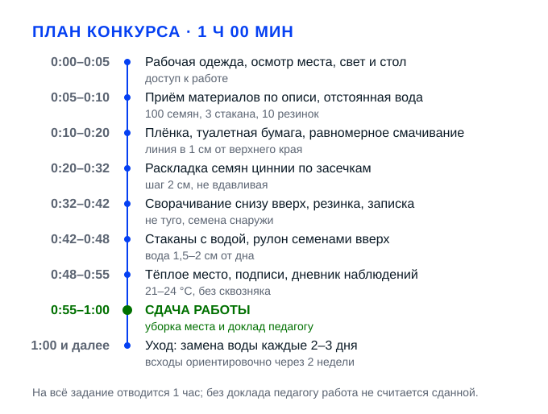
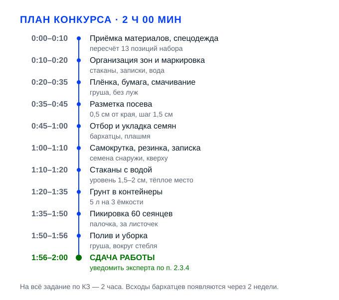
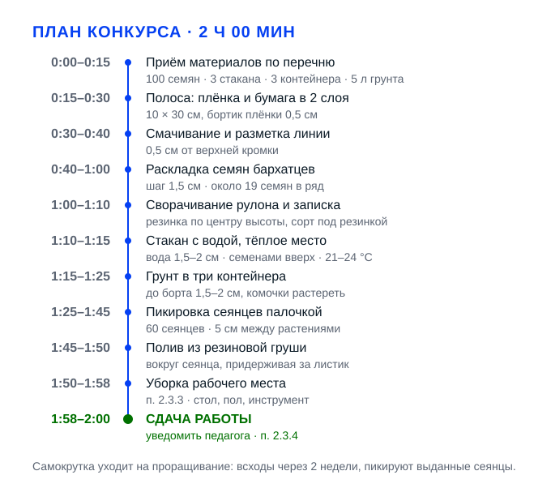

Помощник садовника (ФВ)
Задания ниже — официальные файлы «Абилимпикс» (источник: abilympics-russia.ru), разложенные по категориям. Решения написаны по тексту задания, регламенту и критериям оценки; в них указано, что именно проверяет эксперт.
Школьник
14–16 лет, базовый уровень заданияВ официальном файле категории не разделены отдельными разделами — приводим задание целиком; различия по категориям смотрите в таблице модулей.
Пошаговое решение
Задание для школьников короткое по описанию, но плотное по требованиям: за один час нужно посеять семена циннии в бумажные рулоны — сделать так называемую самокрутку, в которой семена прорастают на влажной туалетной бумаге между слоями полиэтилена, без земли. Сдаётся не рассада и не цветы, а собранная самокрутка: рулон, закреплённый резинкой, с запиской о сорте, поставленный в стакан семенами вверх так, чтобы нижний край бумаги был в воде на полтора-два сантиметра. Всё задание состоит из пяти операций: подготовить место и материалы, расстелить плёнку и накрыть её бумагой, смочить, уложить семена в сантиметре от верхнего края с шагом два сантиметра, свернуть и поставить в воду. Ошибки здесь не видны сразу и проявляются через неделю, поэтому работа идёт строго по параметрам задания: сантиметр от края, два сантиметра между семенами, полтора-два сантиметра воды.

Задача 1. Организовать рабочее место и подготовить материалыЭтап 1 · 0:00–0:10 · подготовка
Первые десять минут из часа уходят не на семена, а на условия: чистую одежду, сухой и ровно освещённый стол, проверенные по описи материалы и отстоянную воду комнатной температуры. Здесь же отбраковываются семена и проверяются плёнка, бумага, стаканы и резинки — то есть устраняются причины, из-за которых рулон потом придётся переделывать. На этой стадии закладывается всё, что проявится через две недели.
Действие 1.1. Войти в рабочую зону и осмотреть место
Шаг 1.1.1
Надеваем фартук или рабочую куртку, убираем волосы под косынку или резинку, засучиваем рукава выше запястья и снимаем с рук всё, что может зацепиться за плёнку: часы, браслеты, длинные серьги. Обувь — закрытая, потому что пол вокруг столов на площадке моют перед стартом и он бывает влажным. Сумку и телефон убираем со стола сразу, оставляем только то, что входит в опись материалов.
Внешний вид и чистота зоны — первое, что фиксирует эксперт до старта, и это условие допуска к работе, а не украшение. Кроме того, свободные рукава и висящие украшения цепляются за полиэтилен в момент сворачивания рулона, а испорченная полоса плёнки означает потерю времени из единственного часа, который отведён на всё задание.
Отойдите на шаг и посмотрите на себя как на чужого человека: волосы не выглядывают, рукава не свисают, на руках нет украшений, обувь закрыта. На столе не должно быть ничего, кроме материалов из перечня задания, — лишний предмет в зоне считается нарушением организации места.
Самая частая ошибка — оставить на руке часы или браслет «он не мешает»: в момент сворачивания металл продавливает бумагу и рвёт влажный слой, семена съезжают с линии укладки. Вторая — прийти в открытой обуви и в футболке, рассчитывая надеть фартук потом: первые минуты уходят на переодевание, а балл за организацию уже снят.
Эксперт осматривает участника и стол в первые две-три минуты, до начала работы с материалами, и отмечает чистоту одежды, убранные волосы и отсутствие посторонних предметов в рабочей зоне.
Шаг 1.1.2
Осматриваем своё место целиком: стол должен быть сухим и устойчивым, площадка под задание — примерно три метра на метр девяносто, а проход между соседними столами не уже полутора метров, чтобы можно было отойти, не задев чужую работу. Проверяем свет: лампа стоит так, чтобы линия укладки семян не попадала в тень от вашей же руки. Затем ладонью проводим по столешнице — песчинка или капля под плёнкой продавит её при скручивании.
Плоскость и свет — не формальность: при освещённости ниже трёхсот люкс мелкие плоские семена циннии сливаются с бумагой, и шаг в два сантиметра перестаёт читаться глазом. Сухой стол нужен потому, что вода под плёнкой расползается и тянет за собой полосу в момент, когда вы её разглаживаете.
Проведите ладонью по всей площади стола и по краю — рука должна остаться сухой и чистой. Посмотрите на стол сверху: тень от руки не падает на середину рабочей полосы. Отойдите назад — проход за спиной свободен, стул не мешает соседу.
Работать на мокром или залитом остатками земли столе: плёнка прилипает, полосу невозможно разгладить, а под ней остаются бугорки, из-за которых рулон выходит перекошенным. Вторая ошибка — встать так, что рабочая полоса оказывается в собственной тени: половину семян вы разложите на глаз и потеряете шаг в два сантиметра.
Эксперт обходит ряд в начале модуля и смотрит, проверял ли участник поверхность и свет или сразу начал расстилать плёнку на первой попавшейся части стола.
Шаг 1.1.3
Раскладываем материалы по зонам, чтобы во время работы не тянуться через всю полосу: слева от рабочей полосы — рулон туалетной бумаги и полосы полиэтилена в стопке, справа — пакет с семенами, тарелка для пересчёта и маркер, прямо перед собой — три пластиковых стакана и резинки. Лейку с водой ставим так, чтобы её не задеть локтем, но чтобы дотянуться одним движением. Ножницы и линейку кладём справа под руку, остриём от себя.
Порядок на столе экономит те самые минуты, которых в часовом задании всегда не хватает: каждое лишнее движение через полосу рискует сдвинуть разложенные семена. Кроме того, отдельная зона для мокрой работы не даёт воде попасть на пакет с семенами — намокший пакет и слипшиеся семена уже не разложить с шагом в два сантиметра.
Встаньте перед столом и мысленно пройдите порядок операций: бумага, вода, семена, сворачивание, стакан. Всё, что нужно на очередном шаге, лежит в пределах вытянутой руки и не перекрывает рабочую полосу. Пакет с семенами закрыт и лежит в сухой зоне.
Свалить всё в одну кучу перед собой: полоса плёнки оказывается под пакетом, при разглаживании пакет падает, семена рассыпаются, и вы тратите время на сбор вместо укладки. Вторая ошибка — поставить открытый пакет рядом с водой: брызги попадают внутрь, семена слипаются и теряют сыпучесть.
Эксперт видит организацию места по тому, как участник ищет инструмент: если материал находится на ощупь и без поиска, зоны спланированы заранее. Он смотрит на это в первые минуты, до начала работы с материалами.
Действие 1.2. Принять материалы и проверить их годность
Шаг 1.2.1
Сверяем свой набор с перечнем оборудования из задания, проговаривая каждую строку: сто семян циннии, рулон туалетной бумаги, десять полос полиэтиленовой плёнки, три пластиковых стакана, вода в лейке, маркер и десять резинок. Проверяем не «на глаз», а пересчётом — резинки считаем поштучно, стаканы осматриваем на просвет. Расхождения называем вслух и запоминаем точно: чего и сколько не хватает.
Перечень в задании — это не рекомендация, а гарантированный минимум, и получить недостающее можно только до старта, через эксперта. После начала работы материалы не выдаются, поэтому недосчитанная резинка означает, что рулон останется незакреплённым, а недолитая вода — что бумага не пропитается и семена останутся сухими.
Все строки перечня отмечены про себя или галочкой на черновике, количество совпадает: десять полос плёнки, три стакана, десять резинок. Если чего-то меньше, вы уже знаете, чего именно не хватает, и можете назвать это одной фразой.
Начать с раскладки семян, не пересчитав материалы: в середине работы выясняется, что полос плёнки пять вместо десяти, и второй рулон делать не из чего. Вторая ошибка — молча «обойтись» недостающим: эксперту об этом сообщают до старта, после старта претензия не принимается.
Эксперт отмечает, подошёл ли участник с вопросом о нехватке до старта, и то, насколько точно сформулирована просьба: не «всё плохо», а «плёнки пять полос из десяти».
Шаг 1.2.2
Проверяем семена: высыпаем их из пакета на белую тарелку или лист бумаги и осматриваем при хорошем свете. Семена циннии плоские, удлинённые, серо-коричневые, одинаковые по размеру; щупаем горсть — она должна быть сыпучей и сухой. Отбраковываем сморщенные, тёмные, покрытые белым или серым налётом, а также слипшиеся в комки: их откладываем отдельно и в работу не берём.
Качество посадочного материала напрямую определяет, что будет через две недели: заплесневевшее семя в самокрутке — это не просто одно непроросшее семечко, а очаг плесени на влажной бумаге, от которого гибнут соседние. Кроме того, отбраковка занимает минуту, а разбираться с пятнами на бумаге и закисшей водой придётся все дни до всходов.
На тарелке остались ровные, сухие и однородные по цвету семена, комков и налёта нет. Если после переборки осталось заметно меньше семян, чем в описи, это уже повод сказать эксперту до старта, а не после.
Ссыпать все семена в один рулон без осмотра: одно заплесневевшее семя даёт серо-зелёные пятна на бумаге к третьему дню, и часть соседних семян задыхается под плёнкой. Вторая ошибка — брать семена мокрыми руками сразу после мытья: они слипаются и ложатся на бумагу кучками вместо ровного шага.
Эксперт смотрит, перебирал ли участник семена и отбраковывал ли явный брак, а также чистоту тарелки, на которую они высыпаны. Смотрит он на это до старта, пока семена ещё лежат на тарелке.
Шаг 1.2.3
Осматриваем полиэтилен и туалетную бумагу. Каждую полосу плёнки поднимаем на свет: она должна быть целой, без проколов и заломов по краю, шириной примерно в ладонь с лишним и длиной около сорока сантиметров. Бумагу проверяем на ощупь: сухая, без ароматизаторов, не влажная от хранения, слои не расслаиваются в руках. Мятую или надорванную полосу откладываем в сторону — на рулон она не годится.
Плёнка в самокрутке держит влагу и не даёт бумаге высохнуть, поэтому любой прокол — это канал, через который влага уходит, а воздух внутрь проходит слишком свободно. Ароматизированная или пропитанная лосьоном бумага выделяет вещества, которые угнетают прорастание, поэтому берут самую простую и дешёвую.
Положите полосу на стол и проведите по ней ладонью: заломы и дырки чувствуются как шероховатость. Бумага, смоченная каплей воды, не должна мгновенно рваться от прикосновения — проверьте на обрезке, а не на рабочей полосе.
Взять первую попавшуюся полосу с заломом: при скручивании залом превращается в трещину, вода по ней уходит вниз мимо бумаги, и верхняя часть рулона остаётся сухой. Вторая ошибка — взять ароматизированную бумагу «какая есть»: всходы задерживаются, а причина так и остаётся непонятной.
Эксперт обращает внимание, осматривал ли участник плёнку на просвет и отложил ли повреждённые полосы, а не пустил их в дело. Проверка идёт на просвет, ещё до смачивания бумаги.
Шаг 1.2.4
Проверяем стаканы, резинки и маркер. Стакан ставим на стол и смотрим на просвет — трещин и сколов по кромке быть не должно; наливаем в него немного воды и проверяем, не подтекает ли дно. Резинку растягиваем двумя пальцами: она должна возвращаться в исходный размер, а не рваться и не быть липкой. Маркером чертим короткую черту на обрезке плёнки и ждём минуту, затем трём пальцем — надпись должна остаться.
Треснувший стакан теряет воду, и уровень ниже полутора сантиметров держать не получится: бумага пересыхает за одну ночь. Липкая или перетянутая резинка сдавливает рулон так, что бумага внутри перетирается, а надпись маркером, который смывается, исчезает уже на второй день — и вы теряете название сорта, а вместе с ним возможность сравнить всходы.
Вода в стакане держится, на столе под дном сухо; резинка после растяжения вернулась к прежнему размеру; черта маркером на плёнке не стирается пальцем. Все три проверки занимают меньше минуты, но каждая из них спасает готовый рулон.
Поставить рулон в стакан с трещиной у дна: вода уходит по капле, к утру бумага сухая, а семена так и не набухли. Вторая ошибка — подписать сорт обычной шариковой ручкой или фломастером на водной основе: надпись расплывается от влаги, и три рулона становятся неотличимы друг от друга.
Эксперт проверяет, читается ли записка под резинкой на готовой работе, и по этому признаку судит, продумывал ли участник этап ухода после сдачи. Он делает это один раз, при сдаче, и больше к надписям не возвращается.
Действие 1.3. Подготовить воду и семена к раскладке
Шаг 1.3.1
Наливаем в лейку отстоявшуюся воду комнатной температуры — не из-под крана в момент работы и не холоднее двадцати градусов на ощупь: вода должна быть без запаха хлора и без пузырьков. Если вода только что из крана, даём ей постоять в открытой ёмкости, чтобы вышел хлор, и только потом используем. Лейку держим на столе, а не на весу, и проверяем, что носик не капает.
Холодная вода тормозит набухание семян: цинния прорастает при температуре около двадцати двух — двадцати пяти градусов, и вода из-под крана зимой может быть на десять градусов холоднее. Хлор в свежей водопроводной воде подавляет развитие проростка, а отстоянная вода избавляется от него за несколько часов.
Капля воды из лейки на тыльной стороне запястья не кажется холодной; запаха хлора нет; в ёмкости нет осадка и пузырьков. Если вода пахнет или мутная, её меняют до начала работы, а не после первой укладки семян.
Залить в стакан холодную воду прямо из-под крана: бумага пропитается, но семена будут набухать медленно и всходы сдвинутся на неделю, что для задания с контрольным сроком в две недели критично. Вторая ошибка — налить мутную воду с осадком: на бумаге остаются разводы, а на них быстрее развивается плесень.
Эксперт может спросить, какая вода используется и почему, и по ответу видит, понимает ли участник разницу между «мокрой бумагой» и «влажной средой для прорастания».
Шаг 1.3.2
Высыпаем семена на белую тарелку ровным тонким слоем и разделяем их на три кучки — по числу стаканов. Считаем не все сто сразу, а по одной кучке: примерно восемнадцать — двадцать семян на рулон, потому что при шаге в два сантиметра на полосе длиной сорок сантиметров больше не разместить. Оставшиеся семена остаются в пакете как резерв на пересев и в работу не идут.
Раскладка «сколько влезет» — главная причина, по которой рулоны приходится переделывать: при шаге меньше двух сантиметров семена соприкасаются, корешки переплетаются, и разделить сеянцы без разрыва корня уже невозможно. Разложенные заранее кучки позволяют увидеть, что все три рулона получатся одинаковыми, а не первый густой, а третий пустой.
На тарелке три отдельные кучки примерно равного размера, в каждой около двадцати семян, остаток лежит отдельно в закрытом пакете. Пересчитайте вслух одну кучку — это и есть контроль, что шаг в два сантиметра выдержан по всей длине.
Сыпать семена на бумагу прямо из пакета: в рулон попадает то пятьдесят штук в начале, то пять в конце, а кучность гарантирует переплетение корней. Вторая ошибка — выбросить остаток семян: если часть не взойдёт, пересевать будет нечем.
Эксперт смотрит, есть ли на тарелке разложенные кучки, и оценивает, насколько ровно распределены семена между рулонами. Три кучки одинакового размера — тот признак, который он ищет.
Шаг 1.3.3
Проверяем рабочие инструменты для разметки: линейку двадцать — тридцать сантиметров и маркер, которым можно поставить две метки на плёнке — линию в сантиметре от верхнего края и засечки через каждые два сантиметра. Метки ставим на самой плёнке, а не на бумаге: бумага мокрая, и маркер на ней расплывается. Линейку кладём справа, чтобы при укладке она не касалась влажного слоя.
Разметка превращает требование задания в измеримую операцию: в сантиметре от края, через два сантиметра. Глазомер на влажной бумаге обманывает, особенно когда полоса блестит от воды, а от шага укладки зависит, сколько семян поместится и насколько свободно им будет при прорастании.
На плёнке видны две метки: сплошная линия в сантиметре от края и засечки с шагом два сантиметра. Приложите линейку к первой и последней засечке — расстояние должно делиться на два без остатка. Маркер не смазывается, если провести по метке влажным пальцем.
Размечать на глаз «примерно сантиметр»: у кого-то линия уходит на три сантиметра вниз, и тогда верхний край бумаги оказывается в воде, а семена залиты. Вторая ошибка — ставить метки маркером на водной основе, который расплывается от первой же капли из пульверизатора.
Эксперт проверяет готовую работу линейкой: расстояние от верхнего края до линии семян и шаг между ними — самые измеримые признаки из всего задания. Линейка в его руках — единственный инструмент проверки на этом этапе.
Задача 2. Подготовить основу: полиэтилен и влажная бумагаЭтап 2 · 0:10–0:20 · основа
Основа самокрутки — два слоя: полиэтилен держит влагу и форму, туалетная бумага заменяет землю и подводит воду к семенам по волокнам. От того, насколько ровно лежат эти слои и насколько равномерно смочена бумага, зависит, поднимется ли вода к верхнему краю, где лежит ряд семян. Здесь важны ровные торцы, отсутствие пузырей под плёнкой и влажность без луж.
Действие 2.1. Расстелить и разгладить полиэтилен
Шаг 2.1.1
Берём полосу полиэтилена за два угла, поднимаем и даём ей распрямиться на весу, а затем кладём на стол так, чтобы длинная сторона шла от вас, а короткая — поперёк. Кладём гладкой стороной вверх, без натяжения: если тянуть, после отпускания плёнка стянется и соберёт бумагу в складки. Край полосы выравниваем по краю стола, чтобы потом было удобно отмерять сантиметр от верхнего среза.
Плёнка — несущий слой всей самокрутки: на ней держится бумага, и от её ровности зависит, получится ли рулон цилиндром или конусом. Растянутая плёнка стремится вернуться в исходное состояние и после смачивания бумаги начинает подтягивать её к центру, сдвигая семена с размеченной линии.
Полоса лежит ровно, углы не загнуты, между плёнкой и столом нет пузырей воздуха. Проведите ладонью от середины к краям — плёнка не должна собираться в волны. Один край ровно совпадает с меткой на столе или с краем столешницы.
Расстелить плёнку с натягом: после смачивания она стягивается, полоса идёт волной, и разложить семена по прямой линии уже невозможно. Вторая ошибка — бросить полосу так, что один угол загнут внутрь: в этом месте бумага ляжет в два слоя, и смочить её равномерно не получится.
Эксперт смотрит на ровность полосы до начала смачивания: складки видны сразу и говорят о том, что участник не разглаживал основу. Он делает это до первой капли воды, потому что после смачивания дефект уже не исправить.
Шаг 2.1.2
Разглаживаем плёнку ладонью от середины к краям, а не наоборот: так из-под неё выходит воздух и не затягиваются углы. Если полоса всё равно пузырится, приподнимаем дальний край и опускаем его снова, выпуская воздух. Ногтем или тупым концом линейки проходим по самому краю, чтобы он прилёг к столу и не заворачивался при смачивании. Край полосы должен прилегать к столу по всей длине, без заворота.
Воздух под плёнкой — это бугры, на которых бумага не прилегает и промокает неравномерно: в одном месте она переувлажнена, в другом остаётся сухой. А сухое пятно под семенем означает, что влага к нему не поднимется, даже если в стакане всё правильно налито.
Проведите по полосе ребром ладони: поверхность должна быть плоской, без «дорожек» воздуха. Посмотрите на полосу под углом к свету — блик ровный, без тёмных пятен, которые дают пузыри. Полоса не должна «дышать» под ладонью.
Разглаживать от краёв к центру: воздух загоняется в середину, образуется подушка, и бумага над ней не контактирует с плёнкой. Вторая ошибка — прижать край ладонью, оставив его чуть загнутым: при смачивании загнутый край разворачивается и утягивает за собой всю полосу.
Эксперт проверяет полосу на просвет и на ощупь до укладки семян — ровная плоскость видна сразу, а пузыри читаются как тёмные пятна. Он делает это до укладки семян и до первого смачивания.
Действие 2.2. Накрыть плёнку туалетной бумагой
Шаг 2.2.1
Отрываем от рулона полосу туалетной бумаги той же длины, что и плёнка, — ориентируемся на край полиэтилена, а не на количество листов. Отрываем по линии перфорации двумя руками, придерживая рулон, чтобы край получился ровным. Кладём бумагу на плёнку, начиная с дальнего от себя края и опуская её постепенно, как скатерть на стол. Держим бумагу за оба края, чтобы она не сложилась пополам.
Бумага в этой технологии заменяет землю: она удерживает влагу у семени и даёт корешку опору, поэтому её длина и ровность края определяют, насколько равномерно вода поднимется от нижнего среза к семенам. Ровный край нужен потому, что именно по нему потом совмещают слои при скручивании.
Бумага лежит по всей длине плёнки, не свисает за края больше чем на полсантиметра и не доходит до них неровной бахромой. Края параллельны краям плёнки — это видно по линии перфорации. Проверьте оба торца — они должны совпасть с торцами плёнки.
Оторвать бумагу короче плёнки: верхний край рулона окажется без бумаги, и семена, уложенные в сантиметре от края, останутся без влагоудерживающего слоя. Вторая ошибка — рвать бумагу рывком: край идёт косой бахромой, и при скручивании он заминается в комок.
Эксперт сверяет готовый рулон с эталонным фото из задания, где бумага и плёнка совпадают по длине и лежат ровно. Он делает это на уже готовой самокрутке, стоящей в стакане, а не на промежуточной заготовке.
Шаг 2.2.2
Разглаживаем бумагу ладонью от середины к краям, не прижимая слишком сильно: мокрая бумага рвётся от давления, сухая — от трения. Если бумага двухслойная, оставляем два слоя, они лучше держат воду и не размокают до состояния каши. Следим, чтобы под бумагой не осталось загнутых уголков плёнки. Между слоями не должно остаться воздуха: воздушная прослойка потом работает как теплоизолятор и мешает влаге подниматься к семенам.
Два слоя бумаги держат влагу заметно дольше и не разъезжаются при скручивании, а вот лишние слои вредят: толстая подушка мешает семени лежать на плоскости, и корешок уходит в бумагу, а не вниз. Ровная укладка важна ещё и потому, что по бумаге вы будете вести линейкой, отмеряя сантиметр от края.
Бумага лежит без складок, углы не загнуты, под ней нет тёмных пятен от воздуха. Проведите пальцем по краю: он не заворачивается внутрь и не расслаивается на волокна. Полоса должна лежать так, чтобы линейка, положенная на неё, не проваливалась в складку.
Приглаживать бумагу кулаком или ребром ладони: на влажных местах остаются разрывы, которые при скручивании превращаются в дыры, и семена проваливаются между слоями. Вторая ошибка — оставить под бумагой загнутый угол плёнки: в этом месте получится уплотнение, рулон пойдёт винтом.
Эксперт осматривает слои на просвет и отмечает разрывы и заломы, которые потом дают неровный рулон. Особое внимание он уделяет краю: именно по краю бумага идёт волной, и это видно на рулоне.
Действие 2.3. Смочить бумагу равномерно
Шаг 2.3.1
Смачиваем бумагу из пульверизатора или резиновой груши, держа её на расстоянии двадцать — двадцать пять сантиметров от поверхности и ведя короткими движениями по всей площади, а не одной струёй в центр. Проходим полосу в два приёма: сначала лёгкий слой по всей длине, затем второй по местам, которые остались сухими. Лейку с водой используем позже, для стакана, а не для смачивания полосы.
Равномерное смачивание — это условие, при котором семя получает влагу сразу со всех сторон и набухает одинаково. Струя в одну точку промывает бумагу до плёнки, вода собирается в лужицу, и семена в этом месте оказываются в воде, а через десять сантиметров — на сухой бумаге.
Бумага потемнела равномерно по всей длине, блестит, но с неё не капает. Нажмите ладонью в нескольких местах: след должен оставаться влажным, а не мокрым. Поднимите полосу за угол — вода не должна стекать ручьём.
Полить бумагу из лейки: вода смывает волокна, бумага собирается в комки, и укладывать семена не на что. Вторая ошибка — смочить только середину: нижний край останется сухим, и капиллярного подъёма к семенам не будет, даже если в стакане налито правильно.
Эксперт проверяет влажность на ощупь и по цвету бумаги: пятнистая, с сухими участками полоса — признак того, что технология не соблюдена. Достаточно одного касания тыльной стороной пальца в трёх местах полосы.
Шаг 2.3.2
Если на полосе образовались лужицы, убираем лишнюю воду, промокая её сухим углом бумаги или чистой салфеткой, а не сдувая и не наклоняя полосу. Действуем так: салфетку кладём плашмя и сразу снимаем, не растирая, пока поверхность не станет влажной, но не блестящей от стоячей воды. Затем даём полосе постоять минуту, чтобы влага распределилась по волокнам.
Лишняя вода вытесняет воздух из бумаги, и семя, лежащее в луже, начинает задыхаться — именно так появляются тёмные, размягчённые семена, из которых ничего не всходит. Кроме того, на мокрой до блеска бумаге семена скользят, и выдержать шаг в два сантиметра становится почти невозможно.
Бумага матовая, без зеркального блеска и без капель на поверхности. Наклон полосы на десять градусов не даёт стекающей струйки. Через минуту после промакивания влага не выступила снова в том же месте.
Оставить лужи «они сами впитаются»: под плёнкой воде уходить некуда, и семена лежат в воде, а не во влажной бумаге. Вторая ошибка — тереть салфеткой: размокшие волокна скатываются, на полосе образуются катышки, и семя ложится на неровность.
Эксперт смотрит на поверхность полосы перед укладкой: лужи и, наоборот, сухие пятна одинаково видны и одинаково снижают оценку технологии. Лужа опаснее сухого пятна: в воде семя задыхается за сутки.
Шаг 2.3.3
Проверяем готовность основы к укладке семян: полоса должна быть влажной по всей длине, лежать ровно, а линия разметки в сантиметре от верхнего края — оставаться видимой. Если маркер смылся, метку восстанавливаем заново на плёнке, приподняв край бумаги. Только после этого переходим к семенам, а не наоборот. Если метка смылась на всей длине, полосу проще заменить целиком, чем восстанавливать разметку под мокрой бумагой.
Укладывать семена на непросохшую и неразмеченную основу бессмысленно: сдвиг на сантиметр вверх или вниз сразу нарушает требование задания. Порядок операций здесь принципиален — сначала влажная размеченная основа, потом семена, потому что после укладки поправить линию уже нельзя, не сдвинув семена.
Три признака одновременно: бумага влажная и матовая, полоса лежит без складок, метка в сантиметре от края видна. Если хотя бы один признак не выполняется, работу не продолжают, а исправляют. Сомнительный признак — повод переделать полосу до укладки семян, а не после.
Начать раскладку на полусухой основе в расчёте «потом досмочу»: повторное смачивание сдвигает уже уложенные семена, и часть из них смывается к краю. Вторая ошибка — восстановить метку поверх мокрой бумаги: маркер расплывается и пачкает семена.
Эксперт наблюдает за последовательностью: правильный порядок — основа, влага, разметка, семена — виден по тому, как участник возвращается к предыдущему шагу.
Задача 3. Разметить линию и уложить семена циннииЭтап 3 · 0:20–0:32 · семена
Центральная часть задания и единственная, где требования заданы числами: семена укладываются в одном сантиметре от верхнего края полосы с расстоянием два сантиметра друг от друга. Разметка ставится на плёнке, а не на мокрой бумаге, семена ложатся плашмя и не вдавливаются. Шаг в два сантиметра — гарантия того, что корешки соседних семян не переплетутся и сеянцы можно будет снять по одному.
Действие 3.1. Разметить линию укладки и шаг между семенами
Шаг 3.1.1
Прикладываем линейку нулевой отметкой к верхнему краю полосы и ставим маркером сплошную линию на расстоянии одного сантиметра — ровно по требованию задания. Линию ведём по плёнке вдоль края, придерживая бумагу второй рукой, чтобы она не подтянулась под линейку. Если полоса длиной сорок сантиметров, линия проходит по всей её длине, от угла до угла, без разрывов.
Расстояние в один сантиметр от верхнего края — не удобство, а параметр технологии: верхний край бумаги остаётся сухим и не размокает, а семена не оказываются на самом срезе, откуда их смывает первым же смачиванием. Линия на плёнке, а не на бумаге, сохраняется до конца работы, потому что плёнка не боится воды.
Приложите линейку в трёх местах — у левого края, в середине и у правого: до линии везде ровно один сантиметр, расхождение не больше миллиметра. Линия сплошная, маркер не расплылся на волокнах бумаги. Проверяйте от левого края к правому и не пропускайте середину.
Отступить «на глазок», и у кого-то линия проходит в двух с половиной сантиметрах: при погружении рулона в стакан бумага пропитывается выше, семена оказываются во влажной зоне, но линия укладки уже не соответствует требованию, и эксперт видит отклонение первым делом. Вторая ошибка — разметить бумагу, а не плёнку: маркер расплывается, линия исчезает.
Эксперт измеряет расстояние от верхнего среза до семян линейкой на уже готовой самокрутке, поэтому метка на плёнке — единственный способ выдержать сантиметр на всех трёх рулонах.
Шаг 3.1.2
Вторым движением ставим засечки через каждые два сантиметра по размеченной линии: прикладываем линейку, отмечаем короткой чертой, сдвигаем на два деления и повторяем. Работаем от левого угла к правому, не пропуская ни одного промежутка, потому что пропущенная засечка — это место, где семя ляжет на глаз и обязательно сдвинется. На полосе сорок сантиметров получается около двадцати засечек.
Шаг в два сантиметра — единственное, что гарантирует, что корешки соседних семян не переплетутся за две недели. Разложенные вплотную семена дают дружные всходы, но разделить их потом невозможно, а при шаге в два сантиметра каждый сеянец снимается с бумаги с целым корнем, что и является конечной целью работы.
Приложите линейку к любой паре соседних засечек — ровно два сантиметра. Пересчитайте засечки: их количество, умноженное на два, примерно равно длине полосы. Ни одна засечка не попала ниже сплошной линии.
Ставить засечки на глаз, «через равные промежутки»: к середине полосы шаг сползает до полутора сантиметров, и на тридцати сантиметрах вы уложите не пятнадцать семян, а восемнадцать, сбив весь расчёт на рулон. Вторая ошибка — отмечать сразу все засечки, не сдвигая линейку, и получить накопленную ошибку к концу полосы.
Эксперт выборочно измеряет две-три пары семян в готовом рулоне: именно шаг раскладки показывает, работал ли участник по разметке или на глазок. Засечки он не считает: ему достаточно шага между двумя соседними семенами.
Действие 3.2. Разложить семена по размеченной линии
Шаг 3.2.1
Берём семена из первой кучки пинцетом или сухими пальцами и укладываем их плашмя на линию, каждое — на свою засечку. Плоская сторона семени циннии ложится на бумагу всей поверхностью, и вдавливать его не нужно: достаточно положить и слегка прижать пальцем, чтобы оно не сдвинулось при скручивании. Начинаем от левого края, чтобы не переносить руку через уже разложенный ряд.
Семя, лежащее плашмя, имеет полный контакт с влажной бумагой по всей плоскости и набухает равномерно, а поставленное «на ребро» касается её одной линией и сохнет быстрее. Прижимать с усилием нельзя: вдавленное семя проминает бумагу и оказывается под её волокнами, откуда проростку трудно выйти.
Возьмите лупу или посмотрите под углом к свету: каждое семя лежит плоско, не стоит на ребре, бумага под ним не разорвана. Проведите пальцем рядом — семя не сдвигается, но и не вдавлено в бумагу так, что его не подцепить.
Бросать семена щепоткой и «распределять» их пальцем: часть встаёт на ребро, часть сбивается в кучки, и расстояние между ними уже не два сантиметра. Вторая ошибка — вдавливать семена ногтем, чтобы «держались крепче»: бумага рвётся, и при скручивании семя проваливается между слоями.
Эксперт смотрит на рулон сбоку, на просвет: вдавленные семена видны как тёмные точки внутри слоя, а лежащие правильно — как ровный ряд на поверхности бумаги.
Шаг 3.2.2
Продолжаем ряд до правого края, каждый раз сверяясь с засечкой и держа линейку рядом как ориентир. Семена берём по одному, а не горстью; если семя упало мимо линии, поднимаем его и кладём заново, а не сдвигаем по мокрой бумаге — от сдвига оно оставляет влажный след и смазывает разметку. Следим, чтобы семена не касались друг друга торцами. Семена берём из кучки, а не из пакета: так видно, сколько осталось.
Ряд, уложенный по засечкам, даёт ровный фронт прорастания: все семена находятся в одинаковых условиях, и через две недели вы получите одновозрастные сеянцы, которые удобно снимать по одному. Сдвигание семени по мокрой бумаге оставляет размазанный след, и на этом месте бумага истончается.
Пройдите взглядом вдоль ряда: семена стоят на одной линии, промежутки между ними примерно равные, ни одна пара не соприкасается. Между последним семенем и правым краем остаётся свободный участок — это нормально, ряд не обязан доходить до среза.
Досыпать семена в промежутки «чтобы ряд был полный»: шаг сокращается до сантиметра, и в рулоне получается двойная плотность, из-за которой при прорастании начнётся борьба за влагу. Вторая ошибка — поправлять семена, ведя их по бумаге: они собирают на себя волокна и влагу, а разметка стирается.
Эксперт оценивает ряд целиком: ровная линия без сгустков и пропусков читается сразу, а «пляшущий» ряд выдаёт работу без разметки. Сгусток в одном месте и пустой участок в другом он отмечает как одну ошибку.
Шаг 3.2.3
Если полоса позволяет и семян в кучке больше, чем помещается в один ряд, второй ряд не делаем вплотную — вместо этого берём следующую полосу плёнки и начинаем новый рулон. Второй ряд по той же полосе допустим только при расстоянии не меньше двух сантиметров от первого, и тогда засечки ставятся отдельно. На практике для циннии хватает одного ряда на полосу, и это самый надёжный вариант.
Два ряда на одной полосе — самая частая причина переплетения корней: даже при правильном шаге внутри ряда корешки соседних рядов растут навстречу друг другу и срастаются. Кроме того, при скручивании двойной ряд даёт утолщение, и рулон получается овальным, а вода поднимается по нему неравномерно.
На полосе один ряд семян, утолщений нет, полоса остаётся плоской и ровной. Если вы всё же сделали второй ряд, между ним и первым не меньше двух сантиметров и оба размечены засечками. При двух рядах проверьте ещё и толщину: рулон не должен стать овальным.
Уложить второй ряд в полутора сантиметрах от первого, чтобы «использовать всю бумагу»: корешки двух рядов сходятся уже на пятый день, и разделить сеянцы без потерь невозможно. Вторая ошибка — начать второй ряд без разметки, сбивая шаг и в первом.
Эксперт обращает внимание на количество рядов и на то, не утолщён ли рулон: равномерная толщина по всей высоте — признак правильной раскладки. Овальный рулон в стакане стоит с наклоном, и это видно с первого взгляда.
Шаг 3.2.4
Считаем уложенные семена и запоминаем число — оно понадобится для записки под резинкой. Считаем, ведя пальцем или концом линейки от левого края к правому, не касаясь семян, чтобы не сдвинуть их с линии. Полученное число сверяем с тем, что осталось на тарелке: сумма должна совпадать с исходной кучкой, иначе одно-два семени потерялись и лежат где-то на столе.
Число семян на записке — это не формальность, а точка отсчёта для дальнейших выводов: при проверке всхожести вы будете знать, сколько семян было уложено и сколько взошло, и сможете честно сказать, сработала ли технология. Кроме того, пересчёт сразу выявляет потерянные семена, которые иначе прилипнут к плёнке снаружи и создадут грязное пятно.
Число семян в ряду совпадает с остатком кучки, посчитанным отдельно. На столе и на полу под столом нет рассыпанных семян. Число записано или твёрдо запомнено до момента, когда вы возьмёте маркер. Если числа не сходятся, ищите потерянное семя на плёнке и на полу.
Не считать семена вовсе: через две недели невозможно понять, восемьдесят процентов взошло или сорок, и вся работа теряет смысл как опыт. Вторая ошибка — пересчитывать, сдвигая семена пальцем: после такого пересчёта шаг уже не два сантиметра.
Эксперт может попросить назвать количество семян в рулоне и объяснить, как оно связано с шагом раскладки, — это проверка понимания, а не памяти. Ответ «не считал» он воспринимает как отсутствие контроля над работой.
Действие 3.3. Проверить раскладку до сворачивания
Шаг 3.3.1
Осматриваем полосу целиком, держа голову прямо над ней: семена должны стоять ровной линией в одном сантиметре от верхнего края, не выше и не ниже. Проверяем края — у левого и правого среза семена иногда съезжают вниз, потому что там бумага подсохла быстрее. Найденное отклонение исправляем сейчас, пока семена легко подцепить и переложить. Осматриваем полосу наклоняясь, а не согнувшись вбок: так линия видна целиком.
После сворачивания исправить раскладку невозможно: рулон закрыт, семена прижаты слоями, и любая попытка поправить их изнутри рвёт бумагу. Именно поэтому последняя визуальная проверка перед скручиванием — обязательный этап, а не перестраховка: он стоит минуту, а переделка рулона — десять минут из отведённого часа.
Линия семян параллельна верхнему краю по всей длине. Ни одно семя не выходит за границы полосы по ширине. Один сантиметр от края сохраняется у левого, в середине и у правого среза. Проверьте линию дважды: до исправлений и после них.
Пропустить проверку и начать скручивать сразу: половина отклонений обнаруживается только на готовом рулоне, когда его уже не развернуть без потерь. Вторая ошибка — поправить «на глаз», сдвинув семя по влажной бумаге: оно оставляет след и уходит с линии ещё дальше.
Эксперт обходит участников в середине модуля и смотрит на подготовленную полосу перед скручиванием — именно в этот момент видно, контролирует ли участник свою работу.
Шаг 3.3.2
Проверяем влажность бумаги под семенами: прикладываем тыльную сторону пальца рядом с каждым третьим семенем. Бумага должна быть прохладной и влажной, но не блестеть. Сухие участки досмачиваем из пульверизатора точечно, с расстояния не меньше двадцати сантиметров, и ждём полминуты, чтобы вода впиталась, а семена не поплыли. Палец держим плашмя и не сдвигаем им семена: касание должно быть точечным.
Семя начинает набухать только при прямом контакте с влажной бумагой. Если под ним сухо, оно пролежит в рулоне две недели без изменений, хотя снаружи работа будет выглядеть правильно. Точечное смачивание перед скручиванием — последняя возможность это исправить.
Тыльная сторона пальца ощущает прохладу и влагу в любом месте ряда. Блеска и капель нет. После точечного смачивания семена остались на своих засечках, ни одно не сдвинулось. Проверяйте каждое третье семя, а не только первое и последнее.
Смачивать полосу сверху уже разложенный ряд одной струёй: семена смывает с линии, они собираются у края кучкой, и рулон получается с пустой серединой. Вторая ошибка — не проверять влажность вовсе, полагаясь на первое смачивание, которое было десять минут назад.
Эксперт проверяет влажность бумаги пальцем на готовой работе, аккуратно отведя край: сухая бумага под семенами — грубое нарушение технологии. Он смотрит на цвет бумаги у ряда: светлая полоса означает, что влага туда не дошла.
Шаг 3.3.3
Ещё раз сверяем готовность к скручиванию по короткому списку: полоса лежит ровно, бумага влажная, семена на линии с шагом два сантиметра, метки видны, под рукой лежат резинка, маркер и стакан с водой. Только теперь убираем линейку со стола и освобождаем обе руки — при скручивании они понадобятся обе. Держите руки сухими: мокрая ладонь оставляет на плёнке следы, которые потом сбивают разметку.
Скручивание — операция, которую нельзя прерывать: пока вы ищете резинку, полоса подсыхает, а поднятая с места плёнка тянет за собой бумагу. Порядок «всё под рукой, потом движение» — это и есть та организация работы, которая отличает уверенное выполнение от суеты в последние минуты.
Все четыре предмета — резинка, маркер, стакан, лейка — лежат в пределах вытянутой руки и не на рабочей полосе. Стол перед вами свободен на ширину полосы, локти не упираются в соседа. Проверьте, что стаканы стоят на сухом месте и не мешают движению руки.
Начать скручивать, держа резинку в зубах или ища её взглядом по столу: рулон раскручивается, пока вы тянетесь, и бумага с семенами сминается. Вторая ошибка — оставить линейку на полосе: при скручивании она подминает бумагу под плёнку.
Эксперт отмечает, насколько уверенно и без остановок выполнено скручивание: суетливые поиски инструмента в этот момент видны и снижают оценку организации.
Задача 4. Свернуть самокрутку и поставить её в стаканЭтап 4 · 0:32–0:48 · рулон и стакан
Полосу сворачивают снизу вверх, чтобы ряд семян остался снаружи в верхней части рулона. Рулон закрепляют резинкой, под неё кладут записку с сортом, датой и числом семян, а затем ставят в стакан семенами вверх. Вода наливается до полутора — двух сантиметров: нижний край бумаги должен быть в воде, а семена — над ней. Это и есть результат, который сдаётся.
Действие 4.1. Свернуть полосу в рукав
Шаг 4.1.1
Начинаем скручивание с нижнего края — того, что противоположен ряду семян. Захватываем большими и указательными пальцами оба нижних угла и подворачиваем край на два-три сантиметра так, чтобы бумага и плёнка пошли вместе, одним слоем, не расслаиваясь. Первый виток делаем плотно: именно он задаёт форму всему рулону, и если он выйдет слабым, рулон будет разваливаться дальше.
Скручивание снизу вверх — принципиальный момент: семена остаются в верхней части рулона, над водой, и влага доходит до них по бумаге капиллярно, а не заливает их. Если начать с верхнего края, семена окажутся внутри рулона, ближе к воде, и часть из них окажется в зоне переувлажнения.
Первый виток плотный, край бумаги и край плёнки совпадают, не выглядывая друг из-под друга больше чем на полмиллиметра. Рулон держит форму сам, если отпустить его на секунду. Первый виток — самый важный: если он пошёл косо, рулон будет конусом.
Подвернуть только бумагу, оставив плёнку снаружи: слои поедут друг относительно друга, и при дальнейшем скручивании бумага соберётся в складку, а плёнка выйдет пузырём. Вторая ошибка — начать с верхнего края, где семена: они сдвигаются с линии в первые же секунды.
Эксперт смотрит, с какой стороны начато скручивание, и по готовому рулону видит, остались ли семена на внешней верхней части, как на эталонном фото задания.
Шаг 4.1.2
Катим рулон от себя, придерживая его левой рукой, а правой подправляя края: большие пальцы скользят по торцам и не дают слоям уходить в сторону. Скручиваем не спеша, примерно один виток в секунду, и после каждых двух-трёх витков выравниваем торцы, постукивая рулоном о стол. Доходим до линии семян и останавливаемся, не проходя её. Следите за натяжением: полоса должна идти ровно, без рывков и провисания.
Ровные торцы — это ровная высота рулона, а значит, и одинаковое расстояние от воды до семян по всей ширине: если один торец выше другого, вода поднимется по короткой стороне раньше и семена на ней набухнут неравномерно. Медленное скручивание с выравниванием занимает меньше времени, чем переделка смятой полосы.
Торцы рулона ровные, рулон стоит на столе вертикально и не заваливается. Линия семян видна снаружи в верхней части, ни одно семя не ушло внутрь. Бумага не собралась в складку ни с одного торца. Поставьте рулон и отпустите: он не должен клониться ни в одну сторону.
Катить быстро, одной рукой: слои уходят винтом, торец получается косым, и рулон стоит с наклоном. Вторая ошибка — придерживать полосу за середину, где лежат семена: они продавливаются в бумагу и смещаются с засечек.
Эксперт проверяет рулон на столе: устойчивость, ровность торцов и читаемую линию семян снаружи — три признака, которые видны без разбора работы. Наклон рулона он замечает раньше, чем неровность торцов.
Шаг 4.1.3
Останавливаем скручивание так, чтобы верхний край с семенами остался снаружи, а сам ряд оказался на внешней стороне верхней части рулона. Проверяем плотность: рулон должен быть упругим, при лёгком сжатии пружинить, но не продавливаться до семян. Слишком тугой рулон ослабляем, чуть развернув его и скатав заново с меньшим натяжением. Ослаблять рулон нужно до того, как бумага подсохнет: на сухой бумаге слои скользят.
Плотность рулона определяет, поднимется ли вода до семян: перетянутый рулон сдавливает бумагу так, что капилляры смыкаются, и вода останавливается в нижней трети. Слишком рыхлый, наоборот, не держит форму, разваливается в стакане и пропускает воздух, от которого бумага сохнет.
Сожмите рулон двумя пальцами: он пружинит и возвращает форму. Верхний край с семенами виден снаружи. Рулон не разваливается, если положить его на бок и снова поставить. Проверьте и верх: ряд семян должен оставаться на поверхности, а не уходить под слой плёнки.
Скрутить как можно туже, «чтобы не развалился»: внутри бумага сминается в гармошку, вода до верхнего ряда не доходит, и через две недели в рулоне нет всходов, хотя снаружи он выглядит аккуратно. Вторая ошибка — оставить рулон рыхлым: он оседает в стакане, верх заваливается, семена смываются к воде.
Эксперт сжимает готовый рулон двумя пальцами и смотрит на реакцию: упругость и возврат формы — тот признак, по которому оценивают правильную плотность.
Действие 4.2. Закрепить рулон и подписать сорт
Шаг 4.2.1
Надеваем резинку поперёк рулона, ближе к середине или чуть выше середины, но не на сам ряд семян. Резинку растягиваем двумя пальцами и надеваем одним движением, а не накручиваем витками: одного кольца достаточно. Если рулон длинный, вторую резинку надеваем ниже первой, отступив два-три сантиметра, чтобы нижний край не разворачивался в воде. Резинку держим кольцом, а не складываем вдвое: сложенная рвётся на сгибе.
Резинка держит рулон в стакане и не даёт ему раскрутиться, пока бумага не пропитается и не станет тяжёлой. Надетые витками резинки сдавливают бумагу неравномерно, и в местах перехвата влага перестаёт подниматься — поэтому лучше два кольца в разных местах, чем три витка в одном.
Рулон не разворачивается, если отпустить его и слегка встряхнуть. Резинка не перекрывает ряд семян и не сдавливает бумагу до залома. Второе кольцо, если оно есть, держится отдельно и не сползает. Проверьте, не сползла ли резинка после установки рулона в стакан.
Натянуть резинку на сам ряд семян: она продавливает их в бумагу и пережимает капилляры именно там, где нужна влага. Вторая ошибка — намотать резинку в три-четыре витка «для надёжности»: рулон сдавливается посередине, и вода идёт только по краям.
Эксперт смотрит на положение резинки относительно семян: правильное крепление не касается ряда, и это видно на готовой работе с первого взгляда. Пережатая бумага под резинкой видна как светлая полоса.
Шаг 4.2.2
Берём маркер и пишем записку: название сорта циннии, дату посева и число уложенных семян. Записку складываем узкой полоской и подсовываем под резинку так, чтобы надпись читалась снаружи и не намокла. Пишем печатными буквами, коротко: «Цинния, сорт, 12.05, 19 шт.», без сокращений, которые через неделю невозможно расшифровать. Пишем на записке заранее, до того как опустить рулон в воду.
Записка под резинкой — прямое требование задания, и её назначение практическое: в одном стакане стоят разные сорта, а через две недели, когда появится зелень, различить их по внешнему виду будет нельзя. Кроме того, дата посева нужна для контроля всхожести: по заданию всходы ожидаются примерно через две недели, и вы должны точно знать, от какого дня считать.
Надпись читается с расстояния вытянутой руки, не смазывается при проведении влажным пальцем, не закрывает ряд семян. Дата и число семян указаны, название сорта написано полностью. Проверьте надпись при боковом свете: тонкие штрихи на плёнке расплываются первыми.
Подписать рулон обычной ручкой или написать на бумажной части полосы, а не на отдельной записке: надпись смывается в первые сутки, и три рулона становятся неразличимы. Вторая ошибка — написать только «цинния», без сорта и даты: сравнить всходы и сроки будет не с чем.
Эксперт поднимает стакан и читает записку: наличие сорта, даты и количества семян — три элемента, которые он проверяет по списку. Отсутствие даты он считает ошибкой даже при правильной раскладке семян.
Шаг 4.2.3
Проверяем собранный рулон целиком: торцы ровные, резинка на месте, записка читается, ряд семян виден снаружи сверху, рулон держит форму. Кладём его пока на сухую часть стола, а не в воду, и делаем точно так же два остальных, повторяя ту же последовательность движений. Сначала подписываем и закрепляем рулон, потом ставим его в воду: обратный порядок приводит к тому, что записка намокает и сорт теряется.
Три одинаковых рулона — это три сравнимых опыта: если один собран плотнее другого, разница во всходах будет объясняться не сортом, а качеством сборки, и результат нельзя будет истолковать. Единообразие достигается только повторением одной и той же последовательности, а не «как получится».
Все три рулона одинаковой высоты и плотности, у каждого своя записка, ни один не разворачивается. Разница по высоте между ними не больше полсантиметра. Сравните рулоны на просвет: плотность слоёв должна быть одинаковой по всей высоте.
Сделать первый рулон аккуратно, а остальные «быстро, по привычке»: у второго сбивается шаг семян, у третьего перетянута резинка, и сравнить результаты уже нельзя. Вторая ошибка — положить готовый рулон в воду до того, как подписана записка: бумага намокнет, и маркер по ней уже не пишет.
Эксперт ставит три стакана рядом и смотрит на них как на серию: одинаковая высота, одинаковая плотность и подписанные записки — признак того, что работа выполнена по технологии, а не случайно.
Действие 4.3. Поставить рулоны в стаканы с водой
Шаг 4.3.1
Наливаем в стакан отстоявшуюся воду комнатной температуры и доводим уровень до полутора — двух сантиметров от дна, проверяя линейкой, а не на глаз. В трёх стаканах уровень должен быть одинаковым, с точностью до пары миллиметров. Воду наливаем заранее, до того как опустить рулон, чтобы не лить её на семена. Линейку опускаем до дна и смотрим на уровень по её делениям, а не по краю стакана: у стаканов бывает разная форма.
Полтора — два сантиметра — это параметр из задания, и он определяет всю дальнейшую работу: нижний край бумаги должен быть в воде, а бумага поднимает её вверх по волокнам. Больше воды — семена оказываются в зоне переувлажнения и задыхаются; меньше — верхняя часть полосы остаётся сухой и семена не набухают.
Линейка, опущенная в стакан до дна, показывает от пятнадцати до двадцати миллиметров воды. Уровень одинаков во всех трёх стаканах. Снаружи стакан сухой, под ним нет лужицы. Проверьте уровень и после установки рулона: часть воды впитается в бумагу, и он немного опустится.
Налить воду «примерно на треть стакана»: уровень получается четыре-пять сантиметров, вода доходит до семян напрямую, и они загнивают за несколько дней. Вторая ошибка — налить меньше сантиметра, рассчитывая долить позже: бумага успевает подсохнуть, и капиллярный подъём уже не возобновляется.
Эксперт измеряет уровень воды линейкой в каждом стакане: полтора — два сантиметра — единственный числовой параметр задания, который проверяется инструментом.
Шаг 4.3.2
Опускаем рулон в стакан семенами вверх, следя за тем, чтобы нижний край бумаги вошёл в воду, а ряд семян остался выше уровня на несколько сантиметров. Ставим рулон вертикально, не наклоняя, и придерживаем его секунду, пока бумага не начнёт впитывать воду и рулон не встанет устойчиво. Если рулон всплывает, слегка поворачиваем его, чтобы воздух вышел из нижних слоёв.
Положение «семенами вверх» — не формальность: если перевернуть, семена окажутся в воде, а сухая часть — наверху, и влага пойдёт не туда. Положение рулона в стакане определяет, по какой длине бумаги поднимается вода, поэтому наклон даже в двадцать градусов означает, что одна сторона ряда получает больше влаги, чем другая.
Рулон стоит вертикально, торец виден над краем стакана, ряд семян находится над водой. Бумага на срезе потемнела — значит, впитала воду. Рулон не касается дна с усилием и не всплывает через минуту после установки.
Поставить рулон семенами вниз, «чтобы быстрее взошли»: семена лежат в воде, задыхаются, и вместо всходов получается скользкая слизь на бумаге. Вторая ошибка — опустить рулон так, что он повис на краях стакана: нижний край не достаёт до воды, и подъём влаги не начинается.
Эксперт смотрит на стакан сбоку: ряд семян должен быть виден над уровнем воды, а не под ним, и рулон — стоять, а не лежать. Он смотрит на бумагу у среза: она должна быть тёмной, то есть уже впитавшей воду.
Шаг 4.3.3
Проверяем все три стакана подряд: уровень воды, положение рулона, читаемость записки, устойчивость. Ставим их на поднос или на сухую часть стола на расстоянии двух-трёх сантиметров друг от друга, чтобы случайное движение не сбило соседний. Убеждаемся, что под стаканами сухо: разлитая вода на столе — это и грязь, и риск, что бумага внизу размокнет быстрее нужного.
Три стакана, поставленные вплотную, при первом же неосторожном движении опрокидываются вместе, и вся работа на час оказывается на полу. Расставленные с промежутком, они стоят устойчиво и позволяют осмотреть каждый рулон, не переставляя остальные. Сухое место под стаканами важно и для оценки: подтёки на столе эксперт видит сразу.
Стаканы стоят отдельно, не соприкасаясь, все подписаны, под каждым сухо. Пройдите вдоль стола взглядом — уровень воды во всех трёх на одной высоте, рулоны стоят вертикально. Проверьте, что стаканы не стоят на краю стола и не мешают проходу.
Собрать стаканы в плотную группу «чтобы не мешали»: они цепляются друг за друга, и одно неловкое движение обнуляет час работы. Вторая ошибка — оставить на столе лужу от налитой воды: бумага в нижней части рулона размокает и оседает, рулон теряет устойчивость.
Эксперт осматривает расстановку и чистоту зоны: аккуратно расставленные стаканы с подписями — завершённый, сдаваемый результат, а не заготовка. Расстановка показывает, думает ли участник о том, что работа будет стоять здесь не один день.
Задача 5. Поставить в тепло, обеспечить уход и сдать работуЭтап 5 · 0:48–1:00 и далее · тепло и сдача
Готовые стаканы ставят в место с температурой двадцать один — двадцать четыре градуса, без сквозняка и прямого солнца, подписывают снаружи и заводят короткий дневник наблюдений. Дальше начинается уход, который идёт уже после конкурса: замена воды каждые два-три дня, контроль уровня, осмотр на плесень. Завершается всё уборкой рабочего места и докладом педагогу — без него работа считается несданной.
Действие 5.1. Поставить работу в тёплое место
Шаг 5.1.1
Выбираем для стаканов место с температурой около двадцати одного — двадцати четырёх градусов, вдали от сквозняка от двери и от открытой форточки. Прямое солнце не подходит: на подоконнике под лучами вода в стакане нагревается выше тридцати градусов, а на свету быстрее размножаются водоросли. Не ставим стаканы вплотную к радиатору — сухой горячий воздух высушивает верх бумаги за сутки.
Цинния прорастает при температуре около двадцати двух — двадцати пяти градусов, и это тот диапазон, который в задании закреплён как комфортный для рабочего места. При более низкой температуре набухание затягивается на недели, при более высокой вода в стакане закисает, а проросток гибнет ещё до выхода на поверхность.
Положите рядом со стаканами комнатный термометр и посмотрите его через полчаса: двадцать один — двадцать четыре градуса. На стаканы не падает прямая солнечная полоса, расстояние до радиатора не меньше полуметра, сквозняка от двери нет.
Поставить работу на подоконник под солнце «там светлее»: вода нагревается, в стакане появляется зелёный налёт, а семена в верхней части полосы пересыхают от сухого воздуха. Вторая ошибка — убрать стаканы в прохладный коридор: набухание останавливается, и к контрольному сроку всходов нет.
Эксперт спрашивает, где будет стоять работа и почему именно там: ответ показывает, понимает ли участник, что проращивание продолжается после сдачи. Он задаёт этот вопрос сразу после сдачи, пока стаканы ещё на столе.
Шаг 5.1.2
Расставляем стаканы на подносе или на листе бумаги, подписав каждый снаружи маркером — номер и сорт, чтобы надпись была видна, даже если записка под резинкой намокнет. Фотографируем расстановку на телефон, если это разрешено на площадке, или зарисовываем схему в дневник: три кружка с номерами и подписями. Схема занимает полминуты и спасает от путаницы через две недели.
Дублирование подписи — дешёвая страховка: бумажная записка под резинкой намокает и расплывается, а надпись маркером на пластике остаётся. Схема расстановки нужна, если стаканы придётся переставлять при уборке помещения: без неё легко поменять рулоны местами и потерять сравнение сортов.
На каждом стакане снаружи есть номер или название сорта, надпись не смазывается. Схема или фотография сделана и позволяет однозначно сопоставить стакан с сортом и количеством семян. Схему лучше сделать сразу, а не вспоминать расстановку через неделю.
Полагаться только на записку под резинкой: через несколько дней она размокает, и остаётся три одинаковых стакана без опознавательных знаков. Вторая ошибка — подписать стаканы, но не записать, где какой сорт стоял, если стаканы потом переставят.
Эксперт проверяет, есть ли на стаканах дублирующая подпись: это признак того, что участник думает о работе после конкурса, а не только о моменте сдачи.
Шаг 5.1.3
Заводим короткий дневник наблюдений: на листе или в блокноте пишем дату и время посева, сорт, количество семян в каждом рулоне, уровень воды и место, куда поставлены стаканы. Дальше оставляем строки для ежедневных отметок — дата, уровень воды, состояние бумаги, первые всходы. Дневник кладём рядом со стаканами, чтобы отметка занимала несколько секунд.
Дневник превращает выполненное задание в проверяемый результат: по нему видно, когда появились первые проростки, менялась ли вода, не пересыхала ли бумага. На чемпионате это ещё и доказательство соблюдения технологии, а в учебной работе — единственный способ понять, что именно повлияло на всхожесть.
В дневнике есть дата, сорт, число семян, уровень воды и место. Строки для дальнейших записей подготовлены, ручка лежит рядом. Записи можно прочитать и через две недели — почерк разборчив, сокращения расшифровываются.
Записывать всё «в голове»: через три дня уже не вспомнить, сколько семян было в первом рулоне и когда меняли воду, а сравнить всхожесть по сортам без этих цифр невозможно. Вторая ошибка — вести записи на клочках, которые теряются.
Эксперт может попросить показать дневник: наличие даты посева и количества семян сразу говорит о том, как участник относится к результату. Он смотрит, есть ли в дневнике графа для ежедневных отметок.
Действие 5.2. Обеспечить уход до всходов
Шаг 5.2.1
Меняем воду в стаканах каждые два-три дня, а если вода помутнела или появился запах — сразу, не дожидаясь срока. Рулон вынимаем, держа за верхнюю часть, воду выливаем, стакан ополаскиваем и наливаем свежую отстоявшуюся воду комнатной температуры до тех же полутора — двух сантиметров. Рулон возвращаем на место семенами вверх, не переворачивая. После замены проверьте, что рулон стоит ровно, а семена остались сверху.
В стоячей воде быстро размножаются бактерии, и корневая зона начинает загнивать: именно поэтому в задании отдельно сказано менять воду время от времени. Отстоянная вода комнатной температуры не даёт температурного шока: резкая смена на холодную останавливает рост проростка на несколько дней.
Вода в стакане прозрачная, без хлопьев и запаха, уровень после замены снова полтора — два сантиметра. Бумага на срезе потемнела и влажная, рулон стоит так же, как стоял. На стенках нет скользкого налёта.
Доливать воду в старую, не сливая: через неделю в стакане образуется мутная взвесь, срез бумаги темнеет и размягчается, а проростки гибнут, не дойдя до верха. Вторая ошибка — менять воду на холодную из-под крана: рост останавливается, и к контрольному сроку всходов нет.
Эксперт проверяет прозрачность воды и чистоту стенок стакана: по этим двум признакам видно, соблюдался ли режим замены. Мутная вода с хлопьями — признак того, что её не меняли больше трёх дней.
Шаг 5.2.2
Каждый день проверяем уровень воды и влажность бумаги в верхней части рулона: если верх подсох и посветлел, доливаем воду до прежнего уровня, а сам рулон слегка поворачиваем, чтобы влага распределилась по всей ширине. Если бумага сверху пересохла сильно, накрываем стакан прозрачным пакетом на день, чтобы поднять влажность, и снимаем его, как только появились первые проростки.
Верхняя часть полосы сохнет быстрее всего, потому что она дальше всего от воды и открыта воздуху. Именно там лежат семена, и пересыхание на этом участке означает, что набухание остановилось. Простой контроль уровня и лёгкий поворот рулона решают задачу без дополнительных материалов.
Бумага в месте ряда семян влажная на ощупь и тёмная, не светлеет к краю. Уровень воды держится в пределах полутора — двух сантиметров. Проростки, если они уже появились, лежат на влажной бумаге, а не подсыхают.
Проверять только уровень воды в стакане, не глядя на верх рулона: вода на месте, а бумага сверху сухая, и семена стоят без движения. Вторая ошибка — накрыть стакан пакетом и забыть про него: без проветривания на бумаге появляется плесень.
Эксперт смотрит на влажность бумаги у самого ряда семян: равномерно тёмная полоса говорит о том, что капиллярный подъём работает. Сухая светлая полоса у самого верха — самая частая находка при осмотре.
Шаг 5.2.3
Раз в два-три дня осматриваем рулон на плесень и закисание: серый или зеленоватый налёт, тёмные пятна, кислый запах. Пятно промокаем салфеткой, смоченной чистой водой, и убираем повреждённый участок бумаги, если он не задевает семена. Испорченное семя, покрытое пушком, вынимаем пинцетом и выбрасываем, чтобы не заражать соседние. Руки после обработки вытираем насухо: мокрая рука переносит налёт на соседние рулоны.
Плесень на влажной бумаге распространяется за сутки и убивает не одно семя, а весь участок ряда. Раннее вмешательство — единственный способ сохранить работу, потому что после появления пушка на нескольких соседних семенах рулон уже не спасти. Кислый запах говорит о том, что вода застоялась дольше допустимого.
На бумаге и на семенах нет пушка, налёта и тёмных пятен, запах от стакана нейтральный. Если пятно было, после обработки оно не растёт в течение следующих двух дней. Осматривайте бумагу на просвет: пятно внутри слоя видно раньше, чем снаружи.
Не замечать серый налёт, пока он не покроет весь верх рулона: к этому моменту семена уже погибли, и работа не имеет результата. Вторая ошибка — смывать плесень, не убирая поражённое семя: источник остаётся, и налёт возвращается через день.
Эксперт осматривает бумагу у ряда семян на просвет: чистый светлый рулон без пятен — признак того, что уход был регулярным. Он обращает внимание и на запах: кислый запах говорит о застоявшейся воде.
Шаг 5.2.4
Начиная с пятого дня осматриваем рулон ежедневно, не разворачивая его: первые проростки видны как белые точки и короткие корешки, лежащие на бумаге. По заданию всходы ориентировочно ожидаются через две недели, но цинния при правильной температуре обычно проклёвывается раньше — с пятого по десятый день. Как только проростки появились, стакан переставляем на свет, но не под прямое солнце, и продолжаем менять воду.
Проросток после проклёвывания начинает тянуться к свету, и в тёмном углу он вытягивается тонким и слабым, а затем полегает. При этом резкий переход на яркое солнце обжигает нежные листья, поэтому свет дают рассеянный. Контроль с пятого дня нужен, чтобы не пропустить момент, когда пора менять условия.
На бумаге видны белые корешки, лежащие вниз, и первые семядоли. Проростки не вытянуты в нитку и не полегли. Бумага под ними влажная, вода в стакане прозрачная. Если к пятому дню нет даже белых точек, проверьте температуру и влажность бумаги.
Развернуть рулон, чтобы посмотреть, «что там внутри»: корешки прирастают к бумаге, и при развороте они рвутся, а семена сдвигаются. Вторая ошибка — выставить стакан с проростками на солнце: за час листья получают ожог и работа теряет вид.
Эксперт оценивает, умеет ли участник наблюдать, не разрушая результат: осмотр без разворота рулона — признак понимания технологии, а не только последовательности действий.
Действие 5.3. Убрать рабочее место и сдать работу
Шаг 5.3.1
Убираем со стола всё, что осталось от работы: обрезки плёнки и бумаги — в мусор, лужицы воды — промакиваем салфеткой и протираем стол насухо, линейку и ножницы вытираем и убираем на место, маркер закрываем колпачком. Отдельно проверяем пол под столом: упавшие семена и клочки бумаги подбираем, потому что их видно с любого расстояния. Тряпку после уборки не оставляем на столе: она относится в отведённое место.
Уборка входит в последовательность выполнения задания отдельным пунктом, и её результат виден без измерений: сухой чистый стол читается как доведённая до конца работа. Кроме того, мокрая столешница — риск, что сосед поставит на неё тетрадь или что кто-то поскользнётся, а обрезки плёнки разносит по всей площадке.
Стол сухой и пустой, инструменты на местах, мусор в контейнере, пол под столом чистый. Проведите ладонью по столешнице — она не должна быть липкой от сока семян или влажной. Загляните под стол и на пол у ножек: там чаще всего остаются обрезки.
Оставить обрезки и воду на столе, считая, что главное — готовые рулоны: пункт об уборке есть в задании, и его пропуск снимает оценку за организацию. Вторая ошибка — протереть стол тряпкой, оставив разводы: они выглядят хуже, чем исходные капли.
Эксперт обходит рабочие места после сигнала об окончании: чистота стола и пола под ним — первое, что он фиксирует, ещё до осмотра самих рулонов. Он делает этот обход через минуту после сигнала, а не сразу.
Шаг 5.3.2
Возвращаем неиспользованные материалы: пакет с оставшимися семенами, лишние резинки, полосы плёнки, рулон бумаги. Считаем остаток и называем число вслух, чтобы не забыть: сколько семян не использовано, сколько резинок осталось, сколько полос плёнки. Испорченные материалы — порванную плёнку, размокшую бумагу — не возвращаем, а показываем и выбрасываем.
Возврат материалов — это порядок, который проверяется по описи: перечень оборудования в задании составлен на одного участника, и остаток должен сойтись с тем, что было выдано. Кроме того, честно названный испорченный материал избавляет от неприятного разговора после конкурса, когда недостача обнаружится без вас.
Остаток посчитан и назван, испорченные материалы отделены и показаны, на столе не осталось ничего лишнего. Число возвращённых резинок и полос совпадает с тем, что не пошло в работу. Проверьте, что пакет с семенами закрыт и лежит отдельно от влажных материалов.
Смести остатки в общую кучу «потом разберут»: опись не сходится, и вопрос о недостаче возникает уже после сдачи. Вторая ошибка — выбросить испорченную плёнку молча: её не хватит при сверке, и это выглядит как потеря материала.
Эксперт сверяет остаток с описью и отмечает, сообщил ли участник об испорченных материалах сам, до вопроса. Он сверяет не только количество, но и состояние: размокшая бумага в возврате говорит о неаккуратной работе.
Шаг 5.3.3
Ставим три стакана с самокрутками на отведённое для готовых работ место — ровно, подписями к зрителю, на поднос или на лист, чтобы не оставить подтёков на столе. Затем подходим к педагогу или эксперту и коротко докладываем: задание выполнено, посеяны семена циннии в бумажные рулоны, три самокрутки, в каждой столько-то семян, работа поставлена в тепло, вода налита до полутора — двух сантиметров. Ждём, пока работу примут, и только потом отходим.
В задании отдельным пунктом стоит уведомить педагога об окончании работы: без этого сигнала работа считается незавершённой, даже если всё сделано правильно. Короткий доклад с числами показывает, что участник понимает, что именно он сделал, а не просто выполнил движения по инструкции.
Стаканы стоят на отведённом месте, подписи видны, стол под ними сухой. Педагог или эксперт уведомлён лично, а не через соседа, и подтвердил приём работы. Вы можете назвать число рулонов и количество семян в каждом без подглядывания.
Молча уйти со своего места, считая, что работа видна: без уведомления её могут не засчитать, а на площадке это самая обидная потеря баллов. Вторая ошибка — оставить стаканы на краю стола, где их заденут при уборке площадки.
Эксперт принимает работу по трём признакам: самокрутки стоят семенами вверх, вода в пределах полутора — двух сантиметров, есть подпись с сортом. Доклад участника он слушает как подтверждение того, что результат осознан.
Студент
учащиеся колледжей и техникумовВ официальном файле категории не разделены отдельными разделами — приводим задание целиком; различия по категориям смотрите в таблице модулей.
Пошаговое решение
Конкурсное задание студенческой категории компетенции «Помощник садовника» состоит из двух частей: посеять семена бархатцев в бумажные рулоны — самокрутки — и распикировать подросшие сеянцы в контейнер. На всё отведено два часа, а не час, как у школьников, и разница не только в сорте: циннию сеют и убирают стаканчики в тепло, а студенты ещё готовят грунт, пикируют шестьдесят сеянцев и поливают рассаду из груши. В наборе сто семян, два рулона туалетной бумаги, десять листов полиэтиленовой плёнки, три стаканчика, десять резинок, маркер, лейка с водой, три контейнера для рассады, пять литров грунта, три совочка, шестьдесят сеянцев, три палочки и резиновая груша. Нормативы, которые проверяют линейкой: семена укладывают в полусантиметре от верхнего края через полтора сантиметра, воды в стакане — полтора-два сантиметра, так, чтобы нижний край бумаги был в воде, а семена остались над ней.

Задача 1. Организовать рабочее место и принять материалыЭтап 1 по КЗ · организация рабочего места
По конкурсному заданию работа начинается с пункта 2.3.1 — организовать рабочее место, и это не формальность перед интересной частью, а полноценный этап, который занимает первые пятнадцать минут из двух часов. На стол выдаётся строго определённый набор: сто семян бархатцев, два рулона туалетной бумаги, десять листов полиэтиленовой плёнки, три пластиковых стаканчика, десять резинок, маркер, лейка с водой, три контейнера для рассыды, пять литров грунта, три совочка, шестьдесят сеянцев, три деревянные палочки и резиновая груша. Пока этот набор не пересчитан и не разложен по зонам, начинать посев бессмысленно: вы будете искать резинку мокрыми руками, тянуться через стол за маркером и в итоге сдвинете семена, уложенные с шагом полтора сантиметра.
Действие 1.1. Принять и проверить выданные материалы
Шаг 1.1.1
Надеваем чистую рабочую одежду, закрытую обувь и убираем волосы под головной убор — это прописано в разделе охраны труда задания, пункт 1.1: перед началом работ участник надевает чистую рабочую одежду и обувь, готовит рабочее место и проверяет годность инструментов. Руки моем с мылом и вытираем насухо: работаем с семенами, грунтом и водой, а мокрые пальцы мгновенно размачивают туалетную бумагу и рвут её при скатывании рулона. Часы, браслеты и кольца снимаем заранее, до того как на столе появится влажная бумага, потому что снять кольцо с мокрой руки, не испачкав плёнку, уже не получится.
Спецодежда и готовность к работе — первое, что фиксирует эксперт на площадке, и первое, что попадает в протокол нарушений по охране труда. Кроме того, убранные волосы и сухие руки напрямую влияют на качество продукта: волос, прилипший к влажной бумаге, при скатывании попадёт внутрь рулона, а мокрые пальцы оставят на бумаге размытые пятна, которые эксперт прочитает как небрежность.
Проверьте себя по трём признакам: волосы полностью убраны, рукава не свисают на стол, руки сухие — тыльная сторона ладони не блестит от воды. Обувь закрытая, подошва не скользит по полу. Если на столе уже стоит лейка, убедитесь, что её носик не направлен на рабочую зону: одно неловкое движение — и вода зальёт разложенную плёнку.
Самая частая ошибка — прийти в удобной открытой обуви и в футболке, рассчитывая надеть спецовку «когда начнётся», а начать сразу с семян. Второй промах — помыть руки, но не вытереть: капли с пальцев попадают на бумагу, она идёт волной, и семена ложатся неровно.
Эксперт осматривает участника до старта, при входе в зону, и отдельно отмечает чистоту одежды в течение всей работы: пятна грунта на груди к моменту пикировки тоже учитываются как небрежность.
Шаг 1.1.2
Пересчитываем выданный набор по перечню оборудования и раскладываем его на столе так, чтобы каждая позиция была видна. Считаем вслух или отмечаем маркером на листе: сто семян бархатцев, два рулона туалетной бумаги, десять листов полиэтиленовой плёнки, три пластиковых стаканчика, десять резинок, один маркер, лейка с водой, три контейнера для рассады, пять литров грунта, три совочка, шестьдесят сеянцев, три деревянные палочки, одна резиновая груша. Если чего-то меньше нормы — говорим сразу, до первого смоченного листа бумаги.
Пересчёт — единственный момент, когда недостачу ещё можно закрыть: по правилам конкурса замена после старта идёт только через главного эксперта, и то если причина признана уважительной. Практическая сторона тоже важна: семян должно хватить на весь ряд при шаге полтора сантиметра, а резинок — на каждую самокрутку, и если их окажется меньше, придётся перевязывать чужим материалом посреди работы.
Все тринадцать позиций названы и разложены, расхождения записаны. Отдельно посчитайте семена: разложите их кучками по десять — так сразу видно, сто их или, например, восемьдесят семь. Проверьте, что стаканчиков именно три и они не треснули по кромке, а контейнеры стоят на столе, а не на полу.
Типичная ошибка — пересчитать только то, что лежит сверху, и не заметить, что нет совочка или второй пары палочек. Вторая — обнаружить недостачу в середине посева и начать искать замену самостоятельно, отойдя от стола: работа на чужом месте без разрешения эксперта — отдельное нарушение.
Эксперт сверяет комплектность до старта и фиксирует обращение участника. Умение работать по перечню и заранее видеть нехватку входит в оценку организационных навыков.
Шаг 1.1.3
Осматриваем семена бархатцев: они должны быть тёмными, удлинёнными, с жёсткой оболочкой, без белого налёта плесени и без слипшихся комков. Ссыпаем их на белую салфетку или на светлый лист бумаги — на белом фоне видно и щуплые семена, и мусор, и повреждённые экземпляры. Смотрим на дату на пакете: если она просрочена, говорим об этом до начала работы, потому что всхожесть ниже заявленной — это уважительная причина, но только если заявлена вовремя.
Качество посадочного материала — прямо названная в описании компетенции обязанность помощника садовника: он должен уметь определять качество посадочного материала по внешнему виду. Щуплое или заплесневелое семя в самокрутке не прорастёт, но набухнет и начнёт киснуть, а вместе с ним подгниют соседние — при шаге полтора сантиметра это видно как проплешина в ряду через две недели.
Хорошее семя бархатцев на ощупь плотное, не рассыпается под ногтем, при сжатии в горсти не красит ладонь. На белом листе не должно быть пыли и трухи больше чайной ложки на всю порцию. Если плесень есть хотя бы на нескольких семенах — откладываем их в сторону и показываем эксперту, а не выбираем «на глазок».
Ошибка новичка — высыпать всю порцию на влажную бумагу и только там увидеть, что половина семян с белым налётом. Тогда уже поздно: бумага смочена, рулон начат, а испорченные семена лежат в ряду вместе со здоровыми. Вторая ошибка — молча отбросить подозрительные семена, не сообщив: их количество входит в задание, и недостача всплывёт при проверке.
Эксперт может подойти и посмотреть отобранные семена, особенно если участник что-то отложил в сторону. Отдельно оценивается, умеет ли участник объяснить, чем плох тот или иной экземпляр.
Шаг 1.1.4
Проверяем инструменты и посуду: у стаканчиков осматриваем дно и кромку, у груши — целостность наконечника и упругость при сжатии, у палочек — гладкость, без заусенцев, у совочков — прочность ручки, у контейнеров — наличие дренажных отверстий и отсутствие трещин. Плёнку проверяем на просвет: она должна быть целой, без проколов и заломов, потому что именно она держит влагу внутри рулона. Маркер проверяем на отдельном листке — пишет ли он по пластику стаканчика, а не только по бумаге.
Инструмент, который сломался в руках посреди пикировки, отнимает время, которого в двухчасовом задании нет. Порванная плёнка не держит влагу, и самокрутка высыхает за сутки вместо того, чтобы проращивать семена, а стаканчик с трещиной по кромке просто разваливается под весом мокрого рулона. Проверка занимает три минуты и сохраняет весь этап проращивания.
Груша при сжатии даёт ровную струю, а не капает по корпусу. На плёнке на просвет нет светлых точек-проколов. В контейнере приподнимите его на свет: дренажные отверстия должны быть видны, иначе после первого полива вода встанет в грунте. Маркер оставляет чёткую линию без пропусков.
Самое дорогое упущение — не проверить грушу. Она часто «шьёт» по шву, и вместо аккуратного смачивания бумаги участник заливает стол водой, после чего приходится начинать с нового листа, а листов всего десять. Вторая ошибка — взять контейнер без отверстий: вода застаивается, корни сеянцев после пикировки задыхаются и загнивают за три дня.
Эксперт смотрит, как участник обращается с инструментом: держит ли грушу за корпус, а не за наконечник, кладёт ли палочку на стол, а не в карман. По разделу охраны труда острые и мелкие предметы в карманах одежды держать не разрешено.
Действие 1.2. Разложить рабочее место по зонам
Шаг 1.2.1
Делим стол на три зоны и закрепляем их за операциями. Ближняя к себе часть — зона посева: здесь лежат плёнка, бумага, семена и линейка. Середина стола — зона грунта: контейнеры, совочек, пакет с пятью литрами земли. Дальний от себя край — зона готовой продукции: стаканчики с самокрутками и ящик с распикированными сеянцами. Инструмент — палочки, груша, маркер, резинки — лежит справа, если вы правша, и слева, если левша, чтобы не тянуться через влажную бумагу.
Рабочее место по нормам задания — три метра на метр девяносто с проходом полтора метра, то есть места достаточно, чтобы не работать в тесноте, и теснота будет только от собственной неорганизованности. Разделение на зоны нужно ещё и потому, что грунт и вода несовместимы: щепотка земли, попавшая на смоченную бумагу, прилипает к семенам и мешает им равномерно набухать, а мокрый стол потом нельзя протереть без разводов.
Проверьте ширину проходов: от вашего стола до соседнего должно оставаться не меньше полутора метров, а ваши локти при работе не должны выходить за границу своего места. Инструмент весь в пределах вытянутой руки: если за маркером нужно вставать, зона разложена неправильно.
Частая ошибка — поставить контейнеры с грунтом прямо перед собой, а потом искать место, куда положить лист плёнки. В итоге плёнка ложится на землю, к ней прилипает грунт, и рулон получается грязным изнутри. Вторая ошибка — разложить всё в один ряд по кромке стола: любой неловкий поворот руки смахивает стаканчик на пол.
Эксперт обходит рабочие места в начале и оценивает, насколько участник владеет пространством: видно ли с одного взгляда, где посев, где грунт и где готовые самокрутки.
Шаг 1.2.2
Готовим маркировку: на боку каждого из трёх стаканчиков маркером пишем название культуры и сорт, дату посева и свой номер участника. Параллельно готовим записки для рулонов — узкие полоски бумаги шириной около полутора сантиметров, на которых тем же маркером написаны сорт и дата; такие записки по заданию кладутся под резинку. Подписи делаем до того, как руки окажутся в грунте и на них появится земля.
Маркировка — не украшение, а способ не потерять сортность: по заданию в один день сеются и пикируются бархатцы, и если записка потеряется, эксперт увидит обезличенный рулон, который нельзя идентифицировать. Кроме того, надпись, сделанная заранее и на сухом пластике, держится, а надпись на мокром стаканчике расплывается и стирается о ладонь при первом же переносе.
Надпись читается с расстояния вытянутой руки и не смазывается, если провести по ней пальцем. Дата на всех трёх стаканчиках и на всех записках одинаковая — расхождение хотя бы в один день сразу заметно. Записки нарезаны по числу рулонов, которые вы планируете скатать.
Ошибка — подписывать стаканчик после того, как он уже вымыт и мокрый: маркер по влажному пластику плывёт. Вторая — писать только название культуры без сорта и даты: на конкурсе оценивается именно посев бархатцев конкретного сорта, и обезличенная работа выглядит как выполненная по памяти, а не по заданию.
Эксперт проверяет маркировку на этапе приёмки работы, а также в момент, когда участник ставит стаканчики в теплое место: видно ли, что подписано, и совпадает ли сорт с заданием.
Шаг 1.2.3
Наливаем воду в лейку и отстаиваем её: по заданию вода должна быть отстоявшейся и комнатной температуры, а не из-под крана прямо в лейку. Набираем воду заранее, в начале работы, чтобы к моменту смачивания бумаги и первого полива она уже согрелась до температуры помещения. Ту же воду используем и для стаканчиков: уровень в них потом устанавливается по нижнему краю бумаги, полтора-два сантиметра.
Холодная водопроводная вода тормозит набухание семян и создаёт температурный контраст: семя бархатцев, попавшее из тёплого помещения в холодную влажную бумагу, всходит на несколько дней позже. Отстаивание заодно снижает содержание хлора, который в высоких концентрациях угнетает проростки. Это ровно та часть технологии, которую в описании компетенции относят к умению вести уход за растениями.
Опустите палец в лейку: вода не должна ощущаться холодной, разница с температурой воздуха не чувствуется. Вода прозрачная, без осадка и запаха. На столе нет лужи вокруг лейки — значит, носик закрыт или лейка стоит устойчиво.
Типичная ошибка — налить воду в последний момент, когда она ещё холодная, и сразу полить ею сеянцы после пикировки: корни в стрессе, сеянцы привядают к вечеру. Вторая — поставить лейку на край стола, рядом с локтем: одно движение, и вода оказывается на плёнке и на семенах.
Эксперт обращает внимание на температуру воды, если участник поливает при нём, и на то, стоит ли вода на рабочем месте заранее, а не появляется в момент полива.
Задача 2. Подготовить рулон-основу: плёнка, бумага, разметкаЭтап 2 по КЗ · подготовка рулона
Первый пункт хода выполнения работы звучит коротко — расстелить полиэтилен, накрыть туалетной бумагой, смочить водой, — но именно здесь закладывается всё остальное. Плёнка держит влагу, бумага распределяет её по всей длине рулона, а ровная разметка задаёт шаг, с которым семена лягут в ряд. По заданию для студентов семена бархатцев укладываются на расстоянии половины сантиметра от верхнего края и через полтора сантиметра друг от друга: это меньше, чем у школьников с цинией, где отступ составляет сантиметр, а шаг — два. Ошибка в разметке на этом этапе не видна сразу, но она определяет, насколько дружно и ровно взойдут сеянцы через две недели.
Действие 2.1. Расстелить плёнку и накрыть её бумагой
Шаг 2.1.1
Берём один лист полиэтиленовой плёнки из десяти выданных, расправляем его на столе и разглаживаем ладонью от центра к краям, чтобы вышел воздух. Кладём плёнку длинной стороной к себе: скатывать рулон будем от дальнего края к ближнему, и направление должно совпадать с длинной стороной листа. Проверяем, что под плёнкой нет крошек грунта и капель воды — они дадут бугры, и бумага на них порвётся при скатывании.
Плёнка в самокрутке работает как стенка, удерживающая влагу: вода поднимается по бумаге снизу вверх, но не испаряется через полиэтилен. Если плёнка лежит со складками, между ней и бумагой остаются воздушные карманы, вода идёт по ним неравномерно, и часть ряда остаётся сухой. Кроме того, складка на плёнке при скатывании превращается в жёсткий рубец, который смещает семена с размеченных позиций.
Плёнка лежит ровно, без пузырей и волн, края не загнуты. Проведите ладонью от середины к каждому углу: рука идёт гладко, ничего не похрустывает. Лист должен быть целым — на просвет не видно проколов, а на поверхности нет заломов от хранения в рулоне.
Ошибка — взять плёнку за угол и бросить на стол: она ложится волной, и расправить её потом, когда сверху уже лежит мокрая бумага, невозможно. Вторая — использовать лист с заломом: на заломе бумага рвётся, и рулон разваливается ещё до того, как его поставят в стакан.
Эксперт смотрит на подготовку основы в момент её выполнения, и отдельно отмечает аккуратность: ровный лист читается как профессиональная привычка, а не как случайность.
Шаг 2.1.2
Поверх плёнки расстилаем туалетную бумагу в один слой, без нахлёстов и без просветов. Отрываем лист по длине плёнки так, чтобы бумага покрывала её от края до края, и разглаживаем от середины к краям, выгоняя воздух. Если лист получается короче плёнки, докладываем второй встык, а не внахлёст: нахлёст даёт двойную толщину, и рулон в этом месте не скатается равномерно.
Бумага — это фитиль: именно по ней вода из стакана поднимается к семенам, лежащим у верхнего края. Один слой держит влагу ровно и даёт корню свободно пройти сквозь себя, два слоя внахлёст создают уплотнение, из-за которого проросток застревает и разворачивает корень вбок. Просвет между листами — прямой путь к сухой полосе, где семена просто не набухнут.
Проведите рукой по всей поверхности: бумага лежит гладко, без пузырей и морщин, просветов на плёнке не видно. Толщина одинаковая по всей площади — на ощупь не чувствуется утолщений. Бумага не свисает за края плёнки больше чем на полсантиметра.
Классическая ошибка — положить бумагу в два-три слоя «чтобы лучше держало влагу»: корни в такой толще задыхаются, а сам рулон получается рыхлым и разваливается при постановке в стакан. Вторая — оставить бумагу с нахлёстом посередине: там образуется валик, семена с него скатываются.
Эксперт проверяет основу на просвет и на ощупь, а также смотрит, не осталось ли на бумаге следов пальцев и грунта: чистота основы видна сразу, без приборов. Отдельно отмечается, положена ли бумага в один слой по всей длине листа, а не «где-то в два».
Шаг 2.1.3
Смачиваем бумагу из резиновой груши или пульверизатора, держа её на расстоянии двадцати-двадцати пяти сантиметров и двигаясь равномерно по всей площади. Бумага должна стать влажной по всей толщине, но не блестеть от воды: ориентир — она темнеет и перестаёт хрустеть под пальцем, а на поверхности не появляется лужиц. Смачиваем в два-три прохода с паузой, а не одним сплошным заливом.
Влажность бумаги — единственный источник воды для семян на весь период до постановки рулона в стакан, и от неё зависит, начнётся ли набухание вообще. Переувлажнённая бумага при скатывании рвётся и выдавливает воду наружу, а недосмоченная не проводит влагу к верхнему краю, где лежат семена. Задание прямо говорит: смачивать аккуратно, и удобнее всего это делать грушей или пульверизатором.
Приложите тыльную сторону ладони: бумага прохладная и влажная по всей площади, от края до края, но вода не выступает каплями. Поднимите лист за угол — он держит форму и не рвётся под собственным весом. Плёнка под бумагой сухая, без лужи.
Самая частая ошибка — лить воду прямо из лейки: бумага промокает пятнами, в середине образуется лужа, а края остаются сухими, и семена на краях не прорастают. Вторая — смачивать уже после укладки семян: струя сдвигает их с размеченных позиций, и шаг полтора сантиметра теряется.
Эксперт наблюдает за смачиванием: важно, пользуется ли участник грушей, как учит задание, и не заливает ли стол водой. Если рядом лежит пульверизатор, это тоже допустимый вариант, а вот лить из лейки прямо на бумагу — нарушение технологии, и оно фиксируется.
Шаг 2.1.4
Даём бумаге «отдохнуть» одну-две минуты, чтобы влага распределилась равномерно по толщине, и за это время проверяем основу на перекос: бумага не должна вытянуться волной и не должна отходить от плёнки по краям. Если край бумаги подсох, добавляем два-три нажатия груши именно на него, не трогая середину. Разглаживаем ещё раз от центра к краям — уже влажную бумагу разглаживают легко, без усилия, лишь бы не порвать.
Пауза нужна потому, что влага в бумаге движется медленно: только что смоченная поверхность кажется равномерной, но внутри ещё есть сухие волокна. Если начать укладывать семена сразу, часть из них ляжет на подсушенное место и набухнет позже остальных — ряд взойдёт недружно, а на конкурсе оценивают именно равномерность всходов.
Бумага лежит ровно, без волн и отставаний от плёнки, влажная по всей площади. Проведите пальцем по краю: он не хрустит и не светлеет. На плёнке под бумагой не появилось воды — значит, смочили ровно столько, сколько нужно.
Ошибка — торопиться и начинать укладку семян на ещё не распределившуюся влагу: тогда приходится досмачивать сверху, и семена смываются. Вторая — досмачивать середину «на всякий случай»: переувлажнённая середина при скатывании выдавливает воду на стол.
Эксперт может проверить основу пальцем именно в этот момент; важно, чтобы реакция на подсушенный край была, а не игнорировалась. Заодно видно, умеет ли участник держать паузу в работе, когда она нужна по технологии.
Действие 2.2. Разметить линию посева
Шаг 2.2.1
Отмеряем половину сантиметра от верхнего края листа и проводим тонкую линию — маркером по плёнке с обратной стороны или просто намечая край линейкой, не оставляя чернильного следа на бумаге. Пять миллиметров — это меньше ширины ногтя, поэтому линию удобнее не рисовать, а приложить линейку и держать её как ориентир при укладке. Верхним считаем тот край, который окажется сверху, когда рулон поставили в стакан семенами вверх.
Отступ в полсантиметра прописан в задании именно для бархатцев, и он не случаен: семена должны оказаться выше уровня воды в стакане, иначе они просто плавают в воде и загнивают. При уровне полтора-два сантиметра и отступе пять миллиметров семена лежат над водой, а влага подходит к ним по бумаге снизу — именно так и работает самокрутка.
Линейка приложена ровно, полсантиметра отмерены от того края, который при постановке в стакан окажется верхним. Проверьте себя, перевернув лист взглядом: если сомневаетесь, какой край верхний, отметьте его маркером на плёнке снаружи — маленькой точкой у кромки.
Ошибка — отступить сантиметр, как для циннии: это норматив школьной категории, и для студентов он считается отклонением от задания. Вторая, более опасная — отступить слишком мало, два-три миллиметра: тогда при постановке в стакан семена окажутся у самой воды и часть начнёт загнивать.
Эксперт при проверке работы отмеряет отступ линейкой; это одно из немногих измеряемых требований задания, и оно проверяется буквально — по линейке, а не «на глаз». Отступ в один сантиметр, как у школьников, для студентов считается ошибкой.
Шаг 2.2.2
Размечаем шаг между семенами — полтора сантиметра. Проще всего не чертить, а сделать шаблон: полоска бумаги шириной полтора сантиметра, которую прикладываем к линии посева и сдвигаем после каждого семени. Если бумага позволяет, ставим маркером едва заметные точки на плёнке с обратной стороны — они просвечивают и не пачкают бумагу. Разметку ведём от левого края к правому, оставляя по одному сантиметру от каждого торца.
Шаг полтора сантиметра задан потому, что семена бархатцев крупные и при более плотной укладке проростки переплетаются корнями ещё в рулоне. Распутывать их при пикировке — самая неприятная часть работы: корни рвутся, и часть сеянцев после этого не приживается. Ровный шаг заодно позволяет посчитать, сколько семян поместится в ряд, и не укладывать лишние в тесноту.
Точки разметки идут строго через полтора сантиметра, число позиций совпадает с расчётом: длина линии минус два сантиметра, делённая на полтора. Проверьте первые три и последние три расстояния линейкой — если шаг «поплыл», лучше переразметить сразу, пока семена не уложены.
Частая ошибка — размечать «на глаз» и к середине ряда сбиваться до сантиметра: внешне ряд выглядит нормально, но при пикировке выясняется, что сеянцы сидят вплотную. Вторая — начинать отступ не от торца, а от первого попавшегося места, и тогда часть листа остаётся пустой.
Эксперт выборочно измеряет шаг между семенами или между проростками; отклонение больше двух-трёх миллиметров фиксируется как нарушение технологии. Проверяют обычно два участка — начало и середину ряда, потому что именно к середине шаг чаще всего и сбивается.
Шаг 2.2.3
Считаем, сколько семян войдёт в ряд, и сверяем с выданными ста штуками. При длине линии тридцать сантиметров и шаге полтора сантиметра получается примерно девятнадцать позиций; значит, на три стаканчика уйдёт около шестидесяти семян, а сорок останутся в запасе на замену щуплых. Если ваш лист короче, пересчитывайте по факту, а не по привычке, и не растягивайте шаг ради «чтобы все поместились».
Расчёт заранее спасает от двух ошибок сразу: от слишком плотной укладки, когда семена делят одно место, и от нехватки материала в конце, когда ряд остаётся полупустым. Кроме того, зная число позиций, вы успеваете понять, хватает ли трёх стаканчиков, и при необходимости уточняете у эксперта, а не начинаете перекладывать готовые рулоны.
Число размеченных позиций записано или запомнено, и оно меньше ста. На каждую позицию приходится ровно одно семя, без пропусков и без двойных укладок. Запасных семян остаётся не меньше трети порции — это ваш резерв на отбраковку и на замену.
Ошибка — укладывать по два семени в лунку «для надёжности»: при пикировке придётся разрывать сросшиеся корни. Вторая — растягивать шаг до двух-двух с половиной сантиметров, чтобы уложить все сто семян: это уже другое задание, и эксперт видит отклонение по линейке.
Эксперт сверяет количество уложенных семян с расчётом и с выданным числом; необоснованно разрежённый ряд считается нарушением, как и ряд, где семена лежат парами. Пересчёт занимает у него полминуты, так что рассчитывать на «не заметит» не стоит.
Задача 3. Уложить семена бархатцев в рядЭтап 3 по КЗ · посев в самокрутку
Второй пункт хода работы — уложить семена бархатцев по верхнему краю самокрутки. Технически это самая простая операция задания и самая безжалостная по последствиям: семя, положенное на сухое место, не набухнет; семя, вдавленное в плёнку, сгниёт; семя, сдвинутое на сантиметр в сторону, при пикировке окажется в чужой лунке. Студенческая категория отличается от школьной именно плотностью укладки: полсантиметра от края и полтора сантиметра между семенами против одного и двух сантиметров у циннии. Задача этапа — положить весь ряд ровно, не сдвинув ни одного семени, и оставить запас на отбраковку.
Действие 3.1. Отобрать семена для посева
Шаг 3.1.1
Перебираем порцию на белом листе: семена бархатцев удлинённые, тёмно-серые или чёрные, с жёсткой ребристой оболочкой и светлым кончиком. Отбраковываем всё, что не подходит: слишком светлые и тонкие, деформированные, слипшиеся в комок, с белым или зеленоватым налётом. Отбракованные не выбрасываем, а отодвигаем в сторону — их количество нужно будет назвать эксперту, если он спросит, почему в ряду остались пустые позиции.
Отбор напрямую влияет на всхожесть: щуплое семя в самокрутке набухает, но проростка не даёт, и в ряду образуется проплешина. Заплесневелое семя опаснее — оно начинает подгнивать и заражает соседние, а при шаге полтора сантиметра это уже два-три соседа с каждой стороны. Умение определять качество посадочного материала по внешнему виду прямо названо в описании компетенции.
Хороших семян после перебора должно остаться не меньше восьмидесяти из ста. Отобранные лежат ровным слоем, не соприкасаясь друг с другом, отбракованные — отдельной кучкой у края листа. Если брака больше двадцати процентов, это повод позвать эксперта до начала укладки.
Ошибка — перебирать семена уже на влажной бумаге: там ничего не видно, а пальцы размачивают оболочку. Вторая — отбраковать всё подозрительное и не сказать об этом: тогда ряд получится редким, а объяснить пустые позиции будет нечем.
Эксперт может подойти и посмотреть, что участник отложил в сторону, и попросить объяснить признак брака. Правильный ответ про налёт, щуплость и слипание звучит убедительно, «мне не понравилось» — нет.
Шаг 3.1.2
Раскладываем отобранные семена небольшими кучками по десять штук на том же белом листе, отдельно от места, где будет лежать плёнка. Кучки нужны для счёта: укладывая семена в ряд, вы берёте из кучки по одному и сразу видите, сколько осталось. Лист с семенами держим поодаль от влажной основы, накрыв вторым листом или отодвинув на сухой край стола, чтобы случайные капли не намочили порцию.
Счёт кучками экономит время и нервы: при укладке с шагом полтора сантиметра легко потерять счёт после десятого семени и уложить два подряд. Кроме того, сухие семена нельзя держать рядом с влажной бумагой — они наберут влагу из воздуха над ней и станут липкими, а липкое семя прилипает к пальцу и падает не туда, куда вы его целили.
Кучки ровные, по десять, и их количество совпадает с расчётом позиций в ряду. Семена не слиплись и не прилипли к листу — при наклоне листа они скатываются, а не тянутся за бумагой. Лист с порцией сухой на ощупь.
Частая ошибка — высыпать всю порцию прямо на угол плёнки «чтобы под рукой было»: половина семян прилипает к полиэтилену, и отделить их без потерь уже нельзя. Вторая — держать семена в горсти: от тепла ладони и пота оболочка размягчается, семена слипаются в комок.
Эксперт смотрит на организацию: разложена ли порция для счёта или участник работает «из пакета». Это видно с первого взгляда и говорит о навыке больше, чем результат.
Шаг 3.1.3
Ничего не замачиваем и не проращиваем заранее: семена бархатцев укладываются в самокрутку сухими, потому что влагу они получат из смоченной бумаги и из воды в стакане. Если семена уже наклюнулись или были замочены дома, говорим об этом эксперту до укладки — такой материал в задании не предусмотрен, и решение принимает он. Руки перед укладкой вытираем насухо ещё раз, даже если кажется, что они сухие.
Сухое семя в самокрутке набухает постепенно, вместе с бумагой, и прорастает дружно; замоченное семя с наклюнувшимся корешком при укладке травмируется, и корешок ломается о плёнку. Задание описывает именно сухой посев: уложить семена, свернуть, поставить в воду — другого порядка в конкурсной документации нет, и любая самодеятельность здесь читается как отклонение от технологии.
Семена на ощупь сухие и сыпучие, оболочка не размягчена. На белом листе нет мокрых пятен. Если хоть одно семя наклюнулось, вы это уже знаете и сказали об этом до начала укладки, а не после. Достаточно положить ладонь на бумагу рядом с семенами: если ладонь остаётся сухой, а семена не прилипают к пальцам, влага не попала куда не надо.
Ошибка — «ускорить процесс» и замочить семена в стакане воды на десять минут: оболочка размокает, семена слипаются, и уложить их с шагом полтора сантиметра уже невозможно. Вторая — укладывать мокрыми руками: бумага в месте касания промокает до плёнки, и семя проваливается в размокшее углубление.
Эксперт проверяет, сухие ли семена, при осмотре работы; наклюнувшиеся семена в ряду видны сразу и фиксируются как нарушение технологии посева. Отдельно смотрит на руки: сухие они или блестят, потому что по этому признаку видно, понимает ли участник, зачем в самокрутке нужна именно сухая бумага.
Действие 3.2. Уложить семена по размеченной линии
Шаг 3.2.1
Укладываем семена по одному, начиная от левого края линии, на расстоянии полсантиметра от верхней кромки. Берём семя большим и указательным пальцами или пинцетом, если он есть в наборе, и кладём плашмя — той стороной, которой оно лежало на бумаге при переборе. Не бросаем и не роняем: падение даже с высоты пальца сдвигает семя с позиции, а поправить его на влажной бумаге можно только сдвинув бумагу.
Плашмя, а не на ребро, семя лежит потому, что так оно имеет максимальный контакт с влажной бумагой: у бархатцев семя удлинённое, и на ребре соприкасается с влагой только узкой полоской, из-за чего набухает медленнее и всходит на два-три дня позже соседей. Ровный ряд плашмя — это ещё и равномерность всходов, которую эксперт увидит через две недели.
Семена лежат на одной линии, все на одинаковом расстоянии от кромки, ни одно не касается соседнего. Проверьте первые пять: они должны быть на одной высоте, как по нитке. Если линия «поехала», поправьте сразу, пока не уложен весь ряд.
Самая частая ошибка — укладывать на глаз, без ориентира: к середине ряда линия уходит вниз на сантиметр, и часть семян оказывается в зоне, которая при постановке в стакан уйдёт под воду. Вторая — ставить семя на ребро «чтобы не прилипло»: такое семя набухает вполовину медленнее.
Эксперт проверяет линию посева линейкой на двух-трёх участках и смотрит на фотографии этапа: ровный ряд — прямой признак того, что участник работал по разметке, а не наугад.
Шаг 3.2.2
Соблюдаем шаг полтора сантиметра, прикладывая полоску-шаблон или сверяясь с нанесёнными точками. После каждого семени сдвигаем шаблон на одну позицию и только потом берём следующее семя, а не наоборот: так рука не «уезжает». Двигаемся строго в одном направлении, слева направо, и не возвращаемся назад переставлять уже уложенные семена. Держите шаблон двумя пальцами за край, чтобы он не сдвигал уже уложенные семена при перестановке.
Шаг полтора сантиметра подобран под размер семени и под будущий корешок: при таком расстоянии проростки не переплетаются и при пикировке легко разделяются. У бархатцев корень развивается быстро, и в плотном ряду к моменту пикировки получается войлок, который приходится резать, теряя часть сеянцев.
Расстояние между соседними семенами одинаковое на всём протяжении ряда. Проверьте три произвольных промежутка линейкой: отклонение не больше двух миллиметров. Число уложенных семян совпадает с числом размеченных позиций.
Ошибка — укладывать с шагом «примерно сантиметр», чтобы влезло больше: при пикировке сеянцы приходится разрывать, и половина идёт в отход. Вторая — после десяти семян начать сбиваться и укладывать парами; пара в ряду видна сразу и читается как небрежность.
Эксперт измеряет шаг выборочно и сравнивает его с нормативом задания: полтора сантиметра для бархатцев, и никак иначе. Отклонение фиксируется в протоколе.
Шаг 3.2.3
Прижимаем каждое семя к бумаге лёгким нажатием пальца — ровно настолько, чтобы оно коснулось влажной поверхности и не осталось лежать на весу. Не вдавливаем и не трём: нажатие должно быть таким, чтобы после него на бумаге не осталось мокрого следа-вмятины. Если семя не прилипает, значит, бумага под ним подсохла, и это место нужно смочить грушей до укладки, а не после.
Семя, лежащее на весу, не получает влагу от бумаги: между ним и поверхностью остаётся воздушная прослойка, и до момента постановки рулона в стакан оно остаётся сухим. Вдавливание вредит иначе: семя продавливает бумагу до плёнки, и в углублении собирается вода, в которой семя загнивает вместо того, чтобы прорастать.
Семя лежит на бумаге, приподнимите лист за угол — семя не скатывается. Бумага под семенем влажная, но не продавлена: на просвет под семенем нет тёмного пятна, доходящего до полиэтилена. Проверьте так три семени подряд в разных частях ряда: если все три держатся на бумаге, прижим одинаковый по всей длине.
Типичная ошибка — прижимать сильно, «чтобы держалось»: под каждым семенем остаётся вмятина, при скатывании они смещаются в эти вмятины и сбиваются в группы. Вторая — не прижимать вовсе и начать скатывать: семена осыпаются вниз рулона, и весь ряд оказывается у края.
Эксперт осматривает уложенный ряд до скатывания, если успевает подойти: лежат ли семена на бумаге или болтаются. Это одна из точек контроля этапа посева.
Шаг 3.2.4
Дойдя до правого края, оставляем от последнего семени до кромки около сантиметра и делаем последнюю проверку ряда целиком: глаза на уровне стола, чтобы линия читалась как прямая. Считаем уложенные семена и сверяем с числом позиций. Если остались размеченные, но пустые позиции, закрываем их семенами из запаса — пропуск в ряду хуже, чем лишняя минута работы.
Финальный осмотр до скатывания — последняя возможность что-то исправить: после того как рулон свёрнут и поставлен в стакан, доступ к семенам закрыт, и любая ошибка остаётся в работе до момента пикировки. Счёт в конце нужен ещё и для отчёта: эксперта интересует не «примерно», а конкретное число уложенных семян.
Ряд читается как ровная линия, пустых позиций нет, счёт сходится с расчётом. Отступ от правого края не больше полутора сантиметров — иначе край рулона при скатывании останется пустым и разлохматится. Отойдите на шаг и посмотрите на ряд сбоку: линия должна идти параллельно кромке, без подъёмов и провалов на всём протяжении.
Ошибка — не считать в конце и обнаружить пропуск уже после постановки в стакан. Вторая — оставить пустые позиции «ничего страшного»: на фотографии ряда пропуски видны отчётливо и снижают оценку точности.
Эксперт пересчитывает семена в ряду при приёмке работы и сравнивает с заявленным числом; расхождение в два-три семени считается нормой, в десять — нет.
Задача 4. Свернуть самокрутку и поставить её на проращиваниеЭтап 4 по КЗ · самокрутка в стакане
Третий и четвёртый пункты хода работы — свернуть всё в рулончик, закрепить резинкой, положить под неё записку с названием сорта и поставить в стакан с водой семенами вверх. Здесь проверяется то, чего не видно на фотографии до всходов: плотность скрутки, положение семян внутри, уровень воды и устойчивость конструкции. По заданию воды в стакане должно быть столько, чтобы нижний край бумаги был погружён на полтора-два сантиметра — ни больше, ни меньше. Именно этот этап определяет, доживёт ли посев до пикировки и не придётся ли эксперту фиксировать загнивание семян.
Действие 4.1. Свернуть рулон и закрепить его
Шаг 4.1.1
Скатываем основу в рулончик, начиная с нижнего края и двигаясь к тому краю, где лежат семена: так ряд семян остаётся снаружи, наверху скрутки, и его видно. Катаем двумя ладонями, придерживая края большими пальцами, чтобы бумага не уходила в сторону. Скрутка должна быть плотной настолько, чтобы рулон держал форму, но не тугой: бумага внутри не должна натягиваться и белеть от напряжения.
От направления скрутки зависит всё: если начать со стороны семян, они окажутся внутри спирали, и вода к ним будет подходить через несколько слоёв бумаги, а при пикировке придётся разматывать весь рулон. Плотность тоже принципиальна: слишком свободный рулон разваливается в стакане, слишком тугой пережимает бумагу и перекрывает подъём воды.
Рулон держит форму, если поставить его на стол: не разворачивается и не оседает. Семена видны сверху, на наружном витке, ровным рядом. На бумаге нет заломов и белых полос от натяжения. Возьмите рулон за верхнюю часть и слегка потрясите: витки не должны разъезжаться, а бумага не должна шуршать, как сухая.
Главная ошибка — скатать слишком туго, «чтобы не развалился»: бумага сжимается, и вода поднимается только до середины, семена в верхней части ряда остаются сухими. Вторая — начать скрутку со стороны семян: ряд уходит внутрь, и контролировать его становится невозможно.
Эксперт берёт рулон в руки и смотрит на плотность и на положение ряда; это ключевая проверка этапа, потому что все остальные признаки качества посева определяются именно здесь.
Шаг 4.1.2
Проверяем, не сместились ли семена при скрутке: развернув рулон на четверть и заглянув с торца, видно, ровно ли идёт ряд. Если семена сбились в кучу у одного края, аккуратно разворачиваем до этого места, поправляем их на линию и скатываем заново. Поправлять лучше сразу: после постановки в стакан и первых суток влага размягчит бумагу, и развернуть рулон без потерь уже не получится.
Смещение семян — самая коварная ошибка этапа, потому что внешне рулон выглядит правильно. В стакане сбившиеся семена оказываются в мокром комке, часть из них задыхается без воздуха, и через несколько дней в этом месте появляется плесень. При пикировке из такого рулона сеянцы приходится вырезать, а не вынимать.
Ряд семян идёт параллельно верхнему краю рулона на всём протяжении. На торце рулона витки идут ровно, без выступающих углов и «ушек». Число семян в ряду не изменилось после скрутки — пересчитайте, это занимает полминуты.
Ошибка — замечать смещение, но не исправлять, надеясь, что «само ляжет»: в стакане ничего само не ляжет, семена останутся сбитыми. Вторая — поправлять семена после того, как рулон уже закреплён резинкой: под резинкой бумага натянута, и при развороте рвётся.
Эксперт смотрит на торец рулона: ровные витки и ровный ряд семян читаются как признак аккуратной работы, а «уши» и сползший ряд — как спешка. Если ряд сполз, эксперт обычно просит развернуть рулон и показать, как участник собирается это исправлять, — оценка ставится по действию, а не по слову.
Шаг 4.1.3
Закрепляем рулон резинкой — по заданию выдано десять штук, то есть по несколько на каждый стаканчик. Резинку надеваем по центру рулона, не у самой кромки, и так, чтобы она держала витки, но не пережимала их. Проверяем натяжение: рулон не должен разворачиваться, если его поставить вертикально, и не должен сжиматься в талию под резинкой. Если резинка слабая, берём вторую и надеваем рядом, а не одну потуже.
Резинка — единственное, что удерживает рулон вертикально в стакане на протяжении всего проращивания. Слабая резинка даёт рулону развернуться, и семена оказываются в воде; тугая пережимает бумагу, и вода не проходит к верхнему ряду. По центру, а не у кромки, резинку надевают потому, что у кромки она сползает при первом же касании.
Рулон стоит вертикально без поддержки и не разворачивается. Под резинкой нет белой полосы сжатия. Края бумаги не разлохмачены и не торчат из-под витков. Отпустите рулон на стол с высоты двух-трёх сантиметров: правильно закреплённый встанет и останется стоять, слабый развернётся.
Частая ошибка — надеть резинку у самого края с семенами: она перекрывает ряд, и часть семян остаётся под натянутой резинкой, где бумага суше. Вторая — использовать одну резинку на два рулона, чтобы сэкономить: конструкция разваливается при постановке в стакан.
Эксперт проверяет крепление при приёмке: держится ли рулон, не пережат ли он. Ослабленная или перетянутая резинка фиксируется как нарушение технологии.
Шаг 4.1.4
Под резинку, как требует задание, кладём записку с названием сорта и датой посева. Записку складываем вдвое, чтобы она не размокла сразу, и вставляем так, чтобы надпись читалась снаружи, не закрываясь витками. Если записка промокла и надпись поплыла, пишем заново маркером на сухой полоске и меняем — обезличенный рулон на конкурсе недопустим. Надпись делайте крупно, чтобы её можно было прочитать, не беря рулон в руки: мелкий шрифт на мокрой бумаге расплывается первым.
Маркировка описана в задании отдельным действием, и это не формальность: сеется один сорт, но проверяющий должен видеть, что участник понимает, что именно он посеял. Записка под резинкой держится надёжнее, чем наклейка на стакане, потому что стакан намокает снаружи от конденсата, а бумага под резинкой защищена витками.
Надпись читается, сорт совпадает с заданием, дата стоит. Записка не мешает рулону стоять и не закрывает ряд семян. Бумага записки плотная, не размокает в руках. Проверьте запись на просвет: она должна читаться снаружи рулона, а не просвечивать сквозь витки с внутренней стороны.
Ошибка — писать сорт на стакане и не класть записку в рулон: при переносе стаканчиков надпись стирается, и работа обезличивается. Вторая — класть записку внутрь рулона: она закрывает семена и размокает в первые же сутки.
Эксперт проверяет маркировку при сдаче работы и иногда через несколько дней, когда оценивает результат проращивания: сохранилась ли надпись. Эксперт сверяет надпись с заданием: сорт должен быть именно тот, что указан в конкурсной документации, а не любой бархатец.
Действие 4.2. Поставить самокрутки в стаканы с водой
Шаг 4.2.1
Наливаем в стакан отстоявшуюся воду комнатной температуры так, чтобы её уровень был полтора-два сантиметра от дна: это ровно столько, чтобы нижний край бумаги оказался в воде, а семена, лежащие у верхнего края, остались над ней. Удобно отмерить линейкой от дна стакана и запомнить положение уровня. Воду наливаем заранее, до постановки рулона, и даём стакану постоять минуту, чтобы она согрелась от стенок.
Уровень воды — самый точный норматив всего задания, и он указан буквально: полтора-два сантиметра. Если воды меньше, бумага не достанет до неё и не наберёт влагу; если больше, семена у верхнего края окажутся в воде, начнут задыхаться без воздуха и загнивать. Именно поэтому отступ семян от края — полсантиметра, а не больше: запас между водой и семенами остаётся минимальным, и влага доходит по бумаге быстро.
Линейка, опущенная в стакан, показывает полтора-два сантиметра воды. Вода прозрачная, без мути и осадка. Стакан стоит на ровной поверхности, уровень одинаковый по всем сторонам. После постановки рулона подождите полминуты и посмотрите снова: уровень не должен подняться выше двух сантиметров, иначе лишнюю воду отлейте.
Ошибка — налить воду «до половины стакана», чтобы наверняка хватило: семена оказываются в воде и загнивают, а на конкурсе это видно уже при осмотре. Вторая — налить на глаз сантиметр: нижний край бумаги не достаёт до воды, и семена просто не прорастают.
Эксперт измеряет уровень линейкой при приёмке работы; это одна из точек, где отклонение видно без всякой лаборатории, и оно сразу снижает оценку. Если уровень выше нормы, эксперт не ждёт, пока семена загниют, — он фиксирует нарушение сразу, при первом осмотре стаканов.
Шаг 4.2.2
Ставим рулон в стакан семенами вверх — это прямо прописано в задании. Опускаем его вертикально, не наклоняя, и слегка придерживаем, пока он не встанет на дно. Проверяем, что нижний край бумаги погружён в воду на полтора-два сантиметра, а ряд семян остался сверху, над водой. Если рулон слишком широкий и не входит в стакан, не запихиваем его силой: перекручиваем плотнее или берём второй стакан.
Положение «семенами вверх» — физическая основа всей технологии: вода поднимается по бумаге снизу вверх за счёт капиллярного эффекта, и семена получают влагу, но не лежат в ней. Перевёрнутый рулон работает наоборот: семена оказываются в воде, а сухая часть бумаги — наверху, и посев гибнет. Именно поэтому направление скрутки проверяют дважды.
Рулон стоит в стакане устойчиво и вертикально, ряд семян виден сверху. Уровень воды после погружения не поднялся выше двух сантиметров: если поднялся, часть воды вытеснилась бумагой, и её надо отлить. Бумага намокла снизу, но верхний край остался сухим.
Классическая ошибка — поставить рулон семенами вниз, перепутав край при скрутке: внешне всё выглядит нормально, но через неделю в стакане плавает ряд размокших семян. Вторая — вдавить рулон в стакан с усилием: бумага сминается, витки сбиваются, и ряд семян смещается вниз, к воде.
Эксперт смотрит на положение рулона в стакане при приёмке и через несколько дней, когда проверяет ход проращивания: направление ряда семян видно сразу.
Шаг 4.2.3
Ставим стаканчики в тёплое место — по заданию их убирают туда, где температура держится в районе двадцати двух — двадцати пяти градусов, но не на прямой солнечный свет и не над батареей. Место выбираем так, чтобы стаканы стояли устойчиво и их не задевали: на подоконнике у края, где ходят люди, рулон опрокидывается от первого касания. Помечаем место, чтобы потом не искать свои стаканы среди чужих.
Температура определяет скорость прорастания: при двадцати двух — двадцати пяти градусах бархатцы всходят за две недели, как и указано в задании; на холоде этот срок растягивается до трёх недель, а к моменту оценки сеянцев их просто не будет. Прямое солнце вредит иначе: вода в стакане нагревается, в ней начинают размножаться микроорганизмы, и семена загнивают.
Стаканы стоят ровно, не на сквозняке, не под прямым солнцем. Температура в помещении не ниже двадцати градусов — это видно по термометру на стене или по ощущению от батареи рядом. Вода в стакане не горячая и не ледяная на ощупь.
Ошибка — поставить стаканы на подоконник под солнце: вода за день прогревается, и на поверхности появляется зелёный налёт. Вторая — убрать в прохладное место «чтобы не пересыхали»: при шестнадцати градусах всходы запаздывают на неделю и больше.
Эксперт проверяет, куда участник поставил стаканы, и фиксирует условия: место проращивания — часть технологического процесса, а не случайность. Место проращивания эксперт проверяет вместе со стаканами: важно, чтобы оно было тёплым и без прямого солнца, а не «где нашлось».
Шаг 4.2.4
Дальше воду в стакане нужно время от времени менять — по заданию её наливают отстоявшуюся и комнатной температуры. Практический порядок такой: раз в два-три дня сливаем старую воду, ополаскиваем стакан и наливаем свежую до того же уровня полтора-два сантиметра, следя, чтобы рулон не сместился. На конкурсе это действие описывается в отчёте или показывается эксперту, если он спрашивает о дальнейшем уходе.
В стоячей воде быстро расходуется кислород, и семена, лежащие во влажной бумаге, начинают задыхаться; кроме того, в ней размножаются бактерии, из-за которых появляется кисловатый запах и слизь на нижнем крае бумаги. Смена воды раз в два-три дня сохраняет и кислород, и чистоту, а вместе с ними — всхожесть.
Вода в стакане прозрачная, без запаха и без плёнки на поверхности. Нижний край бумаги не потемнел и не покрылся слизью. Уровень после замены снова полтора-два сантиметра, ряд семян по-прежнему сверху.
Ошибка — доливать воду, не сливая старую: концентрация бактерий растёт, и через неделю в стакане появляется муть. Вторая — менять воду, не проверяя уровень: после замены наливают слишком много, и семена оказываются в воде.
Эксперт может спросить, как участник собирается ухаживать за посевом дальше; ответ про смену отстоявшейся воды раз в два-три дня показывает понимание технологии, а не заученный порядок действий.
Задача 5. Подготовить контейнер и грунт для пикировкиЭтап 5 по КЗ · контейнер с грунтом
Пятый пункт хода работы — насыпать землю в контейнер. В задании на это отведено три контейнера, пять литров грунта и три совочка, то есть материала с запасом, и распорядиться им нужно так, чтобы к моменту пикировки грунт был готовым, а не просто высыпанным. Пять литров делятся на три ёмкости, поэтому речь идёт о слое, достаточном для корня сеянца, но не выше кромки, иначе при поливе вода смоет землю через борт. Здесь же проверяется то, за что в описании компетенции отвечает умение готовить почву: комочки растираются, мусор выбирается, влажность доводится до рабочей.
Действие 5.1. Заполнить контейнеры грунтом
Шаг 5.1.1
Ставим контейнер на стол в зоне грунта, подкладываем под него лист плёнки или газету, чтобы не пачкать столешницу. Берём совочек и насыпаем грунт из пакета порциями: сначала треть объёма, разравниваем, потом ещё, чтобы земля ложилась равномерно, а не горкой в одном углу. Пакет с пятью литрами удерживаем двумя руками у самой кромки — открытый пакет с грунтом опрокидывается легче, чем кажется.
Ровный слой нужен потому, что при пикировке лунки делаются палочкой на одинаковую глубину: если грунт лежит горкой, в одном конце контейнера корень ляжет глубже, чем нужно, а в другом останется почти на поверхности. Кроме того, порционное заполнение не даёт грунту уплотниться в комья, которые потом приходится разбивать прямо в контейнере, травмируя уже посаженные сеянцы.
Грунт лежит ровным слоем по всей площади, без горок и ям. На ощупь он рыхлый, палец входит легко. Подложенная плёнка остаётся чистой — земля не просыпалась на стол. Проверьте уровень в четырёх точках контейнера, приложив палочку: разница не должна превышать полсантиметра, иначе при пикировке глубина лунок будет разной.
Ошибка — высыпать весь пакет в контейнер одним движением: грунт ложится плотным комком, и разровнять его, не раздавив структуру, уже не получится. Вторая — сыпать прямо на стол, мимо контейнера: половина пяти литров оказывается на столешнице и на полу.
Эксперт смотрит на аккуратность работы с грунтом: просыпанная земля вокруг контейнера читается как небрежность, а ровный слой — как навык. Просыпанный вокруг контейнера грунт он отмечает отдельно: это самая заметная мелочь, по которой судят об аккуратности.
Шаг 5.1.2
Растираем комочки пальцами или тыльной стороной совочка, пока грунт не станет однородным и рассыпчатым. Выбираем крупные включения: щепки, камешки, куски корней, остатки растительности — всё это складываем на край плёнки, а не обратно в контейнер. Если грунт слишком сухой и пылит, слегка увлажняем его из груши уже в контейнере, но не заливаем: пыль оседает, и работать становится легче.
Комок грунта в зоне корня — это воздушная полость, в которую проваливается корень при посадке: сеянец садится выше нужного, корень повисает в пустоте и засыхает. Камешек или щепка при пикировке упирается в палочку и не даёт сделать лунку нужной глубины, а острый край может поранить корень.
Грунт однородный, комков больше не чувствуется при перемешивании рукой. Посторонних включений в контейнере нет, они собраны на плёнке. Грунт не пылит при пересыпании — значит, влажность достаточная. Пересыпьте горсть грунта из ладони в ладонь: если комки скатываются, как крупа, значит, растирание не доведено до конца.
Ошибка — растирать комки уже после посадки сеянцев: приходится давить на грунт рядом с корнями, и они обрываются. Вторая — оставить в грунте куски корней от предыдущих растений: они начинают гнить и привлекают грибок к молодым сеянцам.
Эксперт проверяет грунт на ощупь, если подходит к столу: комковатый грунт с включениями фиксируется как неподготовленный. Комковатый грунт он проверяет пальцем в двух-трёх местах, и если находит комок, работа по подготовке почвы считается выполненной формально.
Шаг 5.1.3
Досыпаем грунт до уровня, при котором до верхней кромки контейнера остаётся сантиметр-полтора. Не набиваем до краёв и не утрамбовываем ладонью: грунт должен остаться рыхлым, чтобы корень шёл в него свободно. Разравниваем ладонью плашмя, чуть прижимая, но не сдавливая, и проверяем, что по всей площади слой одинаковый. Если контейнеров три, порядок один и тот же для каждого.
Отступ от кромки в сантиметр-полтора нужен для полива: вода, налитая на грунт вровень с бортом, стекает через край и уносит землю. Уплотнённый грунт вреден по другой причине: в нём мало воздуха, и корни после пикировки, которые и так травмированы, задыхаются вместо того, чтобы расти. Одинаковый уровень во всех контейнерах нужен для равномерного полива.
До кромки остаётся сантиметр-полтора по всему периметру. Грунт пружинит под пальцем, а не проваливается. Нажмите ладонью: след выравнивается, а не остаётся ямкой — значит, рыхлость сохранена. Проверьте отступ по углам и в центре: он должен быть одинаковым, иначе при поливе вода уйдёт в ту сторону, где борт ниже.
Типичная ошибка — насыпать грунт с горкой и утрамбовать: при первом поливе вода скатывается с горки к краям, а середина остаётся сухой. Вторая — оставить до края полсантиметра: вода при поливе переливается через борт, и вместе с ней уходит часть грунта.
Эксперт оценивает подготовку контейнера перед пикировкой: видно ли, что грунт готов, и не придётся ли участнику досыпать землю в процессе. Уплотнённый грунт эксперт определяет нажатием: если палец входит с усилием, значит, земля утрамбована, и корням будет нечем дышать.
Действие 5.2. Увлажнить грунт и разметить посадку
Шаг 5.2.1
Увлажняем грунт из груши или лейки небольшими порциями, двигаясь по всей площади, а не в одну точку. Норма — до состояния, когда сжатый в кулаке грунт держит форму комка, но вода из него не течёт. Проверяем просто: берём щепотку, сжимаем и разжимаем ладонь — комок не рассыпался и ладонь осталась без лужи. Если грунт просох, добавляем ещё, если поплыл — подсыпаем сухого и перемешиваем.
Влажность грунта в момент пикировки — половина успеха приживаемости. В сухом грунте корень не получает влагу и сеянец вянет в первые часы; в переувлажнённом он задыхается и загнивает. Задание описывает полив после пикировки, и если грунт уже мокрый, полив превращается в залив, от которого сеянцы полёгли.
Комок держит форму, вода не выступает. Цвет грунта потемнел равномерно, без светлых сухих пятен. На дне контейнера не стоит вода, а через дренажные отверстия ничего не капает. Сожмите горсть и разожмите ладонь над контейнером: комок должен остаться комком, а не рассыпаться в пыль, и вода не должна блеснуть на коже.
Ошибка — полить грунт «от души» из лейки: вода стоит на поверхности, и при пикировке палочка входит в грязь, а лунка заплывает. Вторая — не увлажнять вовсе, рассчитывая на полив после посадки: сухой грунт забирает влагу из корня, и сеянец не приживается.
Эксперт проверяет влажность пальцем или на глаз по цвету грунта — это быстрый и надёжный признак, и он виден без приборов. Переувлажнённый грунт виден по блеску поверхности, и эксперт фиксирует это до пикировки: поливать такую землю после посадки уже нельзя.
Шаг 5.2.2
Размечаем схему посадки деревянной палочкой: проводим бороздки или накалываем точки с шагом примерно четыре сантиметра в ряду и пять между рядами. Для шестидесяти сеянцев на три контейнера это значит по двадцать в каждом — то есть, например, четыре ряда по пять лунок. Разметку делаем до того, как сеянцы вынуты из самокрутки: держать сеянец в руке и искать место для него — верный способ засушить корень.
Расстояние четыре на пять сантиметров даёт сеянцу место для развития корня и листьев до высадки в грунт и при этом позволяет разместить все шестьдесят штук в трёх контейнерах. Более плотная посадка приводит к вытягиванию: сеянцы тянутся к свету, стебли становятся тонкими и полегают. Разметка заранее экономит время в самой ответственной части работы.
Лунки расположены ровными рядами, расстояние между ними одинаковое, все шестьдесят мест размечены. Глубина накола — около полутора сантиметров, это видно по палочке. Разметка не заплыла: если лунки закрылись, значит, грунт переувлажнён.
Ошибка — размечать на глаз и к третьему контейнеру сбиться: часть сеянцев остаётся без места, и их приходится сажать вплотную. Вторая — делать лунки уже с сеянцем в руке: корень подсыхает за те полминуты, пока вы ищете место.
Эксперт смотрит на схему посадки после пикировки: ровные ряды с одинаковым шагом — признак спланированной работы. Схему он проверяет по готовой работе: если ряды ровные, значит, разметка была, а не появилась по ходу посадки.
Шаг 5.2.3
Проверяем дренаж и устойчивость: контейнер с грунтом приподнимаем и смотрим на дно — отверстия должны быть открыты, не забиты землёй. Ставим контейнер на ровную поверхность в зоне пикировки, чтобы он не наклонялся, и проверяем, что он не шатается при нажатии. Рядом кладём палочку, грушу и совок — всё, что понадобится, в пределах вытянутой руки, но не над открытым грунтом.
Забитые дренажные отверстия превращают контейнер в ёмкость без стока: после полива вода стоит на дне, корни загнивают, и к моменту оценки рассада выглядит угнетённой. Наклонный контейнер работает так же — вся вода собирается в одном углу, и сеянцы в нём гибнут. Инструмент над открытым грунтом — риск уронить палочку и пробить уже сделанную лунку.
Дно контейнера на просвет показывает открытые отверстия. Контейнер не качается под пальцем, зазор между дном и столом одинаковый по сторонам. Инструмент лежит рядом на плёнке, а не на грунте. Наклонитесь и посмотрите на контейнер сбоку: дно должно стоять на столе всей плоскостью, без просвета с одной стороны.
Ошибка — не проверять отверстия и обнаружить застой воды через несколько дней, когда сеянцы уже пожелтели. Вторая — поставить контейнер на край стола: одно движение локтем, и вся работа с грунтом оказывается на полу.
Эксперт проверяет, готово ли место под пикировку: контейнер, инструмент, освещение. Неподготовленное место видно по тому, что участник начинает метаться за палочкой с сеянцем в руке.
Задача 6. Распикировать сеянцы в контейнерЭтап 6 по КЗ · пикировка сеянцев
Шестой пункт хода работы — распикировать сеянцы с помощью палочки, и это главное отличие студенческой категории от школьной. Пикировка означает пересадку подросшего сеянца из самокрутки в грунт с прищипыванием или подрезкой кончика корня, и выполняется она тогда, когда у растения уже есть настоящие листья. По заданию на всё отведено два часа, а всходы бархатцев появляются через две недели, поэтому на конкурсе пикируют сеянцы, выданные в наборе: их по перечню шестьдесят штук на трёх контейнерах. Времени на шестьдесят посадок — примерно треть конкурсного часа, то есть по тридцать секунд на сеянец, и в эти полминуты входит всё: вынуть, осмотреть, сделать лунку, посадить, прижать.
Действие 6.1. Вынуть сеянец из самокрутки
Шаг 6.1.1
Кладём самокрутку на стол и снимаем резинку, придерживая рулон ладонью, чтобы он не развернулся рывком. Разворачиваем медленно, от свободного края к ряду семян, и держим рулон так, чтобы корешки не тянулись за бумагой. Если бумага прилипла к корням, не дёргаем: смачиваем это место двумя нажатиями груши и ждём несколько секунд, пока волокна не отойдут. Разворачиваем только тот участок, с которого сейчас берём сеянец, а не весь рулон сразу.
Корень сеянца бархатцев в самокрутке растёт вдоль бумаги и прирастает к ней тонкими волосками. Если развернуть рулон одним движением, волоски рвутся, и сеянец теряет большую часть всасывающей поверхности — после пересадки он приживается вдвое дольше или гибнет. Постепенный разворот и смачивание сохраняют корень целым, а это и есть смысл пикировки.
Рулон развёрнут до ряда, бумага отошла от корней без усилия. На бумаге не осталось оборванных белых волосков — если они есть, вы разворачивали слишком быстро. Корни сеянца влажные, светлые, без бурых пятен.
Самая частая ошибка — рвануть резинку и дать рулону развернуться самому: сеянцы вылетают из бумаги вместе с обрывками корней. Вторая — развернуть весь рулон и разложить его на столе: оставшиеся сеянцы лежат на открытом воздухе, пока вы работаете с первым, и корни подсыхают за минуту.
Эксперт смотрит на то, как участник обращается с самокруткой: видно ли, что он понимает, где находятся корни. Порванные волоски на бумаге — прямой признак грубой работы.
Шаг 6.1.2
Берём сеянец за листочек — за семядольный или первый настоящий лист, но не за стебель и не за корень. Захват делаем большим и указательным пальцами, подхватывая лист у самого основания, и слегка приподнимаем сеянец, чтобы убедиться, что корень отошёл от бумаги. Тянуть нельзя: если сеянец не идёт, поддеваем корень палочкой снизу и отделяем его от бумаги, а потом уже берём за лист.
Стебель сеянца бархатцев сочный и ломкий: сжатый пальцами, он передавливается, и по повреждённому месту растение загнивает через несколько дней — внешне сеянец стоит, а к моменту оценки лежит. Лист для захвата удобен тем, что даже при небольшом повреждении растение выживает, а стебель — нет. Задание прямо описывает этот приём: берём сеянец из самокрутки за листочек.
Сеянец держится в руке, корень свободно свисает и не оборван. На стебле нет вмятин от пальцев. Корень целый, длиной не меньше сантиметра, без бурых и чёрных участков. Поднимите сеянец на пять сантиметров над столом и посмотрите на корень на свет: он должен быть светлым и упругим, без тёмных перетяжек.
Типичная ошибка — брать за стебель «так удобнее»: передавленный стебель виден только на третий день, когда исправлять уже нечего. Вторая — тянуть сеянец, когда он прилип к бумаге: корень отрывается целиком, и в руке остаётся стебель с листьями.
Эксперт наблюдает за захватом в момент пикировки: это одна из самых показательных операций, и по ней сразу видно, работал ли участник с рассадой раньше.
Шаг 6.1.3
Осматриваем сеянец перед посадкой и отбраковываем негодные: с оборванным корнем, с тонким вытянувшимся стеблем, с пятнами на листьях, с почерневшей шейкой. Отбракованные складываем отдельно и не выбрасываем до сдачи — их количество нужно назвать. Из шестидесяти выданных сеянцев на посадку обычно идёт пятьдесят-пятьдесят пять, и это нормально: задание даёт запас именно на такой отбор.
Отбор при пикировке — это не придирчивость, а требование к качеству результата: слабый сеянец в контейнере занимает место, забирает воду и свет у соседей и при этом всё равно не даёт нормального растения. Почерневшая шейка — признак заболевания, и такой сеянец заразит весь контейнер. Запас в шестьдесят штук как раз и рассчитан на то, что часть уйдёт в отход.
Отбракованных не больше четверти порции, остальные — с ровным зелёным листом, упругим стеблем и целым корнем. Посадочный материал разложен так, чтобы было видно, сколько осталось: например, рядами по десять.
Ошибка — сажать всё подряд, «чтобы было шестьдесят»: слабые сеянцы погибают первыми, и в контейнере остаются пустые места. Вторая — выбрасывать отбракованные и не фиксировать их число: тогда невозможно объяснить, почему посажено меньше, чем выдано.
Эксперт при приёмке считает посаженные сеянцы и смотрит на их качество: однородность ряда читается как результат осознанного отбора. Отбракованные сеянцы он тоже смотрит: по ним видно, умеет ли участник отличать слабое растение от здорового, а не просто откладывает всё подряд.
Действие 6.2. Посадить сеянцы в лунки
Шаг 6.2.1
Деревянной палочкой делаем в грунте лунку на месте разметки: вводим палочку вертикально на глубину полтора-два сантиметра и слегка расширяем отверстие круговым движением, чтобы стенки не осыпались. Глубина должна быть такой, чтобы корень вошёл свободно, а семядольные листья остались над поверхностью. Лунку делаем непосредственно перед посадкой, а не заранее на весь контейнер: за пять минут стенки заплывают и отверстие закрывается.
Глубина посадки — главный агротехнический параметр пикировки. В слишком мелкой лунке корень ложится на грунт и засыхает; в слишком глубокой точка роста оказывается под землёй, и сеянец либо не выходит, либо выходит ослабленным. Полтора-два сантиметра — ровно под длину корня сеянца бархатцев в этом возрасте, и именно поэтому лунку удобно мерить самой палочкой.
Лунка держит форму, стенки не осыпаются. Палочка, опущенная рядом, показывает глубину полтора-два сантиметра. Расстояние до соседних лунок не меньше четырёх сантиметров — проверьте на глаз по разметке.
Ошибка — тыкать палочкой на всю длину, «чтобы корню было просторно»: сеянец проваливается, и точка роста оказывается в земле. Вторая — делать лунки на весь контейнер сразу: пока сажаете двадцатый сеянец, первые пятнадцать лунок уже заплыли.
Эксперт проверяет глубину посадки после работы, приподнимая грунт у пары сеянцев или просто оценивая уровень, на котором сидят листья. Если глубина лунки не совпадает с длиной корня, эксперт видит это по посадке: сеянец либо сидит высоко, либо ушёл в землю по листья.
Шаг 6.2.2
Опускаем сеянец в лунку корнем вниз, держа его за лист, и расправляем корень палочкой: он должен идти вниз, а не загибаться вбок и не сгибаться петлёй. Если корень длиннее лунки, прищипываем кончик ногтем или палочкой примерно на треть — это и есть собственно пикировка, она заставляет растение наращивать боковые корни. Семядольные листья оставляем строго над поверхностью грунта.
Расправленный корень — условие приживаемости: загнутый вбок корень растёт неправильно и не снабжает растение, а сложенный петлёй загнивает в грунте. Прищипка кончика вызывает ветвление корневой системы, и сеянец после пересадки быстрее осваивает объём контейнера — это агротехнический смысл самой операции, ради которой рассаду и пикируют.
Корень уходит вертикально, не выглядывает из лунки и не торчит над грунтом. Семядольные листья на высоте пять-семь миллиметров над поверхностью. Стебель не засыпан землёй выше основания листьев. Проверьте, что корень не выглядывает из лунки: если светлый кончик виден на поверхности, значит, он загнут и не ушёл вниз.
Самая грубая ошибка — вдавить сеянец в лунку вместе с загнутым корнем: внешне он стоит, но через неделю желтеет. Вторая — засыпать точку роста землёй: сеянец не развивается, а в сырости шейка загнивает, и растение полегает.
Эксперт проверяет правильность посадки выборочно, подкапывая один-два сеянца палочкой: направление корня и глубину. Это одна из ключевых точек студенческой категории.
Шаг 6.2.3
Прижимаем грунт к корню палочкой, а не пальцами: вводим палочку рядом с сеянцем под небольшим углом и подтягиваем землю к стеблю с двух сторон, пока лунка не закроется. Нажим умеренный — грунт должен облегать корень, но не превращаться в камень. После прижатия проверяем, что сеянец сидит устойчиво и не качается, если легко тронуть лист. Палочку держите почти вертикально, отклоняя её не больше чем на двадцать градусов, чтобы не подрезать корень сбоку.
Пустота вокруг корня — главная причина гибели рассады после пикировки: корневые волоски не контактируют с грунтом и пересыхают. Прижатие палочкой, а не пальцами, нужно потому, что палец давит на площадь вокруг стебля и может сместить сеянец в сторону, а палочка работает точечно, подтягивая землю именно к корню.
Сеянец не качается при легком касании листа. Вокруг стебля нет воронки и щели, грунт лежит вровень. Палочка, воткнутая рядом, встречает сопротивление, а не проваливается в пустоту. Отпустите лист и посмотрите, вернулся ли он в прежнее положение: упругий сеянец распрямляется, повреждённый остаётся поникшим.
Ошибка — прижать сильно, «чтобы наверняка»: грунт уплотняется, доступ воздуха к корню прекращается, и сеянец останавливается в росте. Вторая — не прижать вовсе: после первого полива сеянец заваливается набок и ложится на грунт.
Эксперт трогает сеянцы при осмотре: шатающиеся растения сразу выдают, что грунт не прижат. Это видно и без приборов, достаточно слегка качнуть лист. Он проверяет прижатие выборочно, у трёх-четырёх сеянцев, и по ним судит обо всём контейнере.
Шаг 6.2.4
Повторяем цикл для всех размеченных лунок, двигаясь по контейнеру рядами, чтобы не пропустить место и не посадить два сеянца в одну лунку. Держим ритм: лунка, сеянец, расправить, прижать — и переход к следующему. Через каждые десять сеянцев выпрямляемся и смотрим на контейнер сверху: ровность рядов видна только с расстояния. Закончив один контейнер, переходим ко второму с той же разметкой.
Ритмичная работа по рядам экономит время, которого на шестьдесят сеянцев немного. Осмотр с расстояния нужен потому, что вблизи виден каждый сеянец отдельно, а неровность посадки и пропущенные места читаются только на общем плане. Переход от контейнера к контейнеру с сохранением схемы даёт одинаковую густоту во всех трёх, а это оценивается как качество работы.
Все размеченные лунки заняты, пропусков нет. Ряды читаются ровными линиями при взгляде сверху. Во всех трёх контейнерах одинаковое число сеянцев, и оно сходится с общим счётом. Посчитайте места в одном ряду и умножьте на число рядов: результат должен совпасть с числом посаженных сеянцев.
Ошибка — сажать хаотично, заполняя свободные места по мере попадания: ряды ломаются, и часть мест остаётся пустой. Вторая — затянуть работу с первым контейнером и посадить остальные в спешке, с грубыми ошибками в глубине и прижатии.
Эксперт оценивает результат целиком: ровные ряды, одинаковая густота, отсутствие пустых мест. Отдельно фиксируется время, за которое выполнена пикировка.
Задача 7. Полить рассаду, убрать место и сдать работуЭтап 7 по КЗ · полив, уборка, сдача
Седьмой и восьмой пункты хода работы — полить рассаду и убрать рабочее место, а пункт 2.3.4 последовательности требует уведомить педагога об окончании работы. Полив после пикировки — операция, где легче всего испортить сделанное: корни только что травмированы, грунт рыхлый, а струя из лейки смывает сеянец вместе с землёй. Поэтому по заданию поливают из резиновой груши, аккуратно вокруг сеянца, придерживая его за листик. Уборка тоже входит в оценку: разлитая вода, обрезки бумаги и грязный инструмент читаются как незавершённая работа, даже если сами сеянцы посажены безупречно.
Действие 7.1. Полить распикированные сеянцы
Шаг 7.1.1
Набираем в грушу отстоявшуюся воду комнатной температуры и поливаем каждый сеянец отдельно: наконечник держим в двух-трёх сантиметрах от грунта, струю направляем по кругу вокруг стебля, а не в точку. Второй рукой придерживаем сеянец за листик, чтобы поток не выбил его из лунки. На один сеянец — два-три нажатия, пока вода не впитается; если на поверхности появилась лужа, останавливаемся и переходим к следующему.
Полив вокруг стебля, а не в него, нужен потому, что вода, попавшая в точку роста, задерживается в пазухах листьев и вызывает загнивание шейки. Придерживание за листик — приём из задания, он предохраняет только что посаженный сеянец от вымывания: грунт вокруг корня ещё не осел, и струя легко выбивает растение вместе с комком.
Вода впиталась, лужи на поверхности нет. Сеянец стоит вертикально, не наклонён и не выбит из лунки. Грунт вокруг стебля потемнел от влаги, но не размыт до корня. После полива проверьте листья: на них не должно быть капель и грязи, а грунт у стебля не должен быть размыт до корня.
Ошибка — полить из лейки «быстрее и привычнее»: струя размывает лунки, часть сеянцев оказывается лежащими на грунте. Вторая — лить прямо под стебель: вода вымывает землю из-под корня, и сеянец проваливается в образовавшуюся ямку.
Эксперт смотрит на полив, если застаёт его: пользуется ли участник грушей и придерживает ли растение. Это прямо описано в задании, и отступление от приёма фиксируется.
Шаг 7.1.2
Следим за нормой: грунт должен промокнуть на всю глубину слоя, но вода не должна показаться на поверхности и тем более уйти в поддон. Ориентир — грунт тёмный и влажный на ощупь на глубине пальца, а на поверхности лужиц нет. Весь контейнер поливаем равномерно, не задерживаясь на первых сеянцах: к концу ряда у вас должно остаться столько же воды, сколько было в начале.
Норма полива напрямую определяет приживаемость: недолитые сеянцы вянут к вечеру, перелитые — задыхаются, потому что вода вытеснила воздух из пор грунта. После пикировки корни и так работают с перебоями, и лишняя вода для них опаснее, чем лёгкая сухость. Ровномерность важна ещё и потому, что оценивают весь контейнер, а не отдельные растения.
Грунт влажный на глубине пальца, поверхность без луж. В поддоне и на дне контейнера воды нет. Все сеянцы в одинаковом состоянии: ни одного поникшего и ни одного в размытой ямке. Через десять минут после полива посмотрите на поверхность снова: если появилась вода, значит, земля не успевает впитывать, и полив надо прекратить.
Ошибка — полить «до полного насыщения», чтобы хватило надолго: вода стоит в грунте, корни загнивают за три-четыре дня. Вторая — полить только первые сеянцы и на остальных пожалеть время: часть ряда вянет уже к сдаче работы.
Эксперт проверяет влажность грунта пальцем при приёмке, и это одна из немногих проверок, которую нельзя сделать «на глаз» — поэтому её делают всегда. Влажность он определяет пальцем на глубине сантиметра, а не по цвету поверхности, потому что сверху грунт сохнет первым.
Шаг 7.1.3
После полива выравниваем то, что сдвинула вода: осадившийся грунт подсыпаем совочком или палочкой до прежнего уровня, оголившиеся корни присыпаем, наклонившиеся сеянцы поправляем, придерживая за лист. Размытые лунки закрываем грунтом из края контейнера. Затем ещё раз осматриваем контейнер сверху и отмечаем, все ли места заняты. Подсыпайте грунт маленькими порциями из края контейнера, а не из пакета: так вы не перекроете разметку и не поднимете общий уровень.
Вода почти всегда меняет микрорельеф грунта: у стебля образуется углубление, а корни у поверхности оголяются. Открытый корень подсыхает за час, и сеянец гибнет, хотя посажен был правильно. Подсыпка после полива — завершающая операция пикировки, без неё работа считается недоведённой.
Уровень грунта ровный, воронок у стеблей нет. Корни не видны на поверхности. Все сеянцы стоят вертикально, пустых лунок нет. До кромки контейнера по-прежнему сантиметр-полтора. Проверьте уровень грунта палочкой по краям и в середине: он должен быть одинаковым, а до кромки по-прежнему сантиметр-полтора.
Ошибка — не подсыпать грунт после полива: через час у стеблей видны корни, и работа выглядит незаконченной. Вторая — подсыпать мокрый грунт с комками: он ложится неровно, а при следующем поливе поплывёт снова.
Эксперт осматривает контейнер именно после полива, когда видны все огрехи: осадка грунта, оголённые корни, наклонённые сеянцы. Оголённые корни и воронки у стеблей он считает недоработкой, даже если сами сеянцы выглядят здоровыми.
Действие 7.2. Убрать рабочее место и сдать работу
Шаг 7.2.1
Убираем со стола всё, что осталось от работы: обрезки бумаги, куски плёнки, отбракованные семена и сеянцы, рассыпанный грунт. Ссыпаем грунт обратно в пакет, если он чистый, или в мусор, если смешан с бумагой. Плёнку складываем и убираем в отведённое место — она ещё понадобится, если работу продолжают на следующий день. Стол протираем влажной тряпкой, двигаясь от дальнего края к себе, чтобы не размазывать грязь по чистому.
Уборка прямо предусмотрена заданием: восьмой пункт хода работы звучит как «убрать рабочее место», и пункт 2.3.3 последовательности повторяет это требование. Кроме формального требования есть практическое: мокрая столешница с землёй — это скользкая поверхность, а на конкурсе по охране труда рабочее место оценивают отдельно от результата.
Стол чистый и сухой, мусор в контейнере, плёнка и бумага убраны, грунт не рассыпан вокруг. На полу нет земли и воды. Пройдите по столу ладонью: она остаётся чистой. Проверьте пол под столом и вокруг ведра: земля и вода на полу — самое частое, что остаётся после работы и что видно при обходе.
Частая ошибка — смести обрезки на край стола «пусть полежит»: на приёмке это выглядит как брошенная работа. Вторая — протереть стол мокрой тряпкой и оставить лужи: вода на столе считается нарушением по технике безопасности.
Эксперт обходит рабочие места после сдачи: чистота стола и пола видна сразу и оценивается без пояснений участника. Обход он делает после уведомления о сдаче, поэтому уборку нельзя оставить «на потом»: место осматривают в тот момент, когда участник его сдал.
Шаг 7.2.2
Приводим в порядок инструмент: палочки и совочки промываем под водой и вытираем насухо, грушу опорожняем и промываем, стаканы освобождаем от воды и ставим сушиться. Резинки и маркер складываем в отведённое место, а не бросаем в общий ящик. Инструмент, которым работали с грунтом, не кладём рядом с семенами и бумагой — земля на палочке пачкает всё, к чему прикасается.
Чистый инструмент — требование раздела охраны труда: по окончании работы садовник обязан очистить и продезинфицировать рабочий инвентарь и убрать его в специально выделенные места хранения. Практическая сторона тоже важна: грунт, оставшийся на палочке, при следующем использовании попадёт в лунку и сместит глубину посадки.
Инструмент чистый, сухой, лежит на своих местах. Груша пустая и промытая. Стаканы без воды. На палочках и совках нет налипшего грунта — проведите по ним пальцем. Проверьте инструмент на просвет: на палочке и совке не должно оставаться тёмных полос от грунта, а на груше — капель внутри.
Ошибка — сполоснуть палочку и поставить мокрой в ящик: на ней остаётся земля, которая засохнет коркой. Вторая — оставить воду в груше: за сутки в ней появляется запах и налёт, и инструмент приходится выбрасывать.
Эксперт проверяет состояние инвентаря при приёмке работы, и это отдельный пункт протокола, а не часть общего впечатления. Он смотрит на инвентарь после работы отдельно от стола: чистая палочка и промытая груша говорят о привычке, а не о разовой уборке.
Шаг 7.2.3
Сдаём работу по правилу пункта 2.3.4: уведомляем педагога или эксперта об окончании, называя конкретно, что сделано. Формулировка короткая и точная: посеяны бархатцы в самокрутку, уложено столько-то семян с шагом полтора сантиметра, отступ полсантиметра, самокрутки стоят в трёх стаканчиках с водой полтора-два сантиметра, распикировано столько-то сеянцев в три контейнера. Если что-то не получилось — говорим сразу, до ухода с места.
Уведомление об окончании — прямое требование последовательности выполнения задания, и оно проверяется: работа, о завершении которой не сообщили, может быть не принята к оценке. Точный отчёт по числам нужен потому, что эксперт сверяет заявленное с фактическим, и расхождение читается как непонимание собственной работы.
Эксперт уведомлён, числа названы и совпадают с тем, что лежит на столе. Вопросов к участнику не осталось. Рабочее место в состоянии, в котором его не стыдно показать. Назовите числа и проверьте их по факту: пересчитайте сеянцы в контейнерах и убедитесь, что сумма совпадает с тем, что вы только что сказали.
Ошибка — уйти молча, считая, что «и так видно»: приёмка идёт по факту уведомления. Вторая — назвать приблизительные числа или перепутать шаг посева: эксперт сверяет по линейке, и ошибка в отчёте стоит дороже, чем честное «получилось меньше».
Эксперт фиксирует время сдачи и выслушивает отчёт; умение коротко и точно описать свою работу входит в оценку коммуникации и профессиональных навыков.
Специалист
работающие профессионалыВ официальном файле категории не разделены отдельными разделами — приводим задание целиком; различия по категориям смотрите в таблице модулей.
Пошаговое решение
Разбор конкурсного задания регионального чемпионата «Абилимпикс» по компетенции «Помощник садовника» для категории «Специалисты». Задание одно: посеять семена бархатцев в бумажные рулоны и распикировать подросшие сеянцы, на всю работу даётся два часа. Внутри них укладываются восемь операций описания: расстелить полиэтилен и накрыть туалетной бумагой, смочить водой, уложить семена по верхнему краю, свернуть рулон и поставить в стакан с водой семенами вверх, поставить стаканчики в тёплое место, насыпать землю в контейнер, распикировать сеянцы палочкой, полить рассаду и убрать рабочее место. Разбираем их по порядку, с размерами из задания: 0,5 см от верхнего края до ряда семян, 1,5 см между семенами, вода слоем 1,5–2 см, шестьдесят сеянцев и три контейнера с пятью литрами грунта. Отдельно объясняем, почему самокрутка уходит на проращивание, а пикируют выданные сеянцы: всходы в рулоне появляются через две недели, и в регламент конкурса это время не входит.

Задача 1. Организовать рабочее место и принять материалыМодуль 1 · организация · 0:00–0:20
По пункту 2.3.1 задания работа начинается не с семян, а с места: чистый стол, разложенные по зонам материалы, проверенный по перечню раздела 3.1 комплект. На это уходит двадцать минут из двух часов, и они не потрачены зря: помощник садовника тем и отличается от новичка, что сначала выстраивает порядок, а потом начинает сеять. Всё, что окажется не на месте, придётся искать мокрыми руками уже в процессе, а пролитая на плёнку вода испортит разметку и семена.
Действие 1.1. Привести в порядок себя и рабочую поверхность
Шаг 1.1.1
Надеваем чистый халат или фартук, убираем волосы под косынку полностью — и спереди, и на затылке, — застёгиваем рукава или подворачиваем их выше запястья. Снимаем кольца, часы, браслеты и длинные серьги, ногти держим коротко и без покрытия. Перчатки надеваем только на работу с грунтом, потому что в перчатках невозможно на ощупь оценить влажность бумаги, а именно это умение здесь и оценивают.
Раздел 5 конкурсного задания прямо требует от участника чистой рабочей одежды, специальной обуви и правильного применения средств индивидуальной защиты. Но дело не только в формальности: мы весь модуль работаем с водой и грунтом, а под украшениями и ногтями остаётся грязь, которая попадает и на бумагу, и в лунку с корешком сеянца. Эксперт фиксирует внешний вид до старта, и вернуть балл потом нельзя.
Проверьте себя по трём признакам: волос не видно ни спереди, ни сзади; рукав не свисает над столом и не касается воды в стакане; на руках нет украшений. Попросите соседа или волонтёра посмотреть со спины — сам участник затылок не контролирует.
Типичная ошибка — надеть косынку «на макушку», оставив затылок открытым, или оставить обручальное кольцо «оно не мешает». В первом случае нарушение видно на фотофиксации, во втором под кольцом остаётся вода и грязь, а на белой туалетной бумаге остаются следы, которые эксперт читает как небрежность.
Эксперт осматривает участника в первые минуты, до того как тот возьмёт семена, и отдельно отмечает, остаётся ли одежда чистой к середине работы, когда грунт уже вскрыт.
Шаг 1.1.2
Протираем стол влажной, а затем сухой тряпкой и проверяем, что перед нами сухая ровная поверхность примерно три метра на метр девяносто — именно такие габариты рабочего места указаны в разделе 4 задания. Отодвигаем от края всё, что может упасть: стаканы, контейнеры, лейку. Свет направляем на рабочую зону так, чтобы тень от руки не падала на линию раскладки семян.
В разделе 4 для рабочих мест всех нозологий задано индивидуальное равномерное освещение не менее 300 люкс, а проход между местами — не меньше 1,5 метра. Это не абстрактные нормы: при слабом свете семена бархатцев, тёмные и вытянутые, сливаются с мокрой бумагой, и вместо 1,5 см между ними получается то сантиметр, то три. Ровный сухой стол нужен, чтобы плёнка не морщилась, иначе свернуть ровный рулон не получится.
Проведите ладонью по столу — она должна остаться сухой. Посмотрите на стол сверху: тень от вашей руки не пересекает середину рабочей зоны. Рядом со столом свободен проход шириной не меньше полутора метров, чтобы можно было отойти, не задев чужие стаканы.
Оставить на столе капли от предыдущей группы или начать работу на мокрой поверхности: плёнка прилипает к столу, при сворачивании тянется и рвётся, а бумага внутри рулона переувлажняется. Вторая ошибка — поставить свет сбоку так, что тень падает на линию посева: разметку приходится делать на глаз, и ряд получается кривым.
Эксперт проходит вдоль ряда в начале модуля и обращает внимание на освещение и свободные проходы, потому что это одновременно и критерий организации, и требование охраны труда.
Шаг 1.1.3
Разбиваем стол на три зоны и держим их до конца работы. Левая — сухая: рулон туалетной бумаги, полосы плёнки, пакет с семенами, линейка, маркер, записки. Центр — рабочая площадка, где расстилается плёнка и идёт посев: она должна оставаться пустой. Правая — мокрая и тяжёлая: стаканы с водой, груша, контейнеры, пакет грунта, совок и палочки. Проверьте, что каждая зона действительно свободна: если стакан с водой уже стоит в сухой зоне, переставьте его до начала работы, потом будет поздно.
Задание построено так, что вода и грунт появляются в середине работы, когда на столе уже лежит подписанный рулон. Если мокрая зона окажется рядом с сухой, брызги попадут на семена и на маркировку, а мокрый маркер поплывёт. Разделение зон экономит время: рука тянется в известном направлении, а не ищет палочку по всему столу.
Пройдите взглядом слева направо: сухие материалы — мокрая посуда — грунт. На центральной площадке не должно быть ничего, кроме плёнки. Если что-то лежит в двух зонах одновременно, уберите лишнее до старта, потом будет поздно.
Свалить всё в одну кучу и поставить стакан с водой вплотную к пакету с семенами: достаточно одного неловкого движения, чтобы вода залила семена и подписи. Ещё одна ошибка — держать палочки и совок в сухой зоне, где они пачкают бумагу землёй.
Зонирование эксперт читает как признак профессиональной привычки: смотрит, где стоит вода в момент раскладки семян, и не приходится ли участник искать инструмент в процессе.
Действие 1.2. Принять и проверить материалы по перечню
Шаг 1.2.1
Раскладываем материалы и считаем их по перечню раздела 3.1: сто семян бархатцев, два рулона туалетной бумаги, десять полос полиэтиленовой плёнки, три пластиковых стакана, десять резинок, маркер, три контейнера для рассады, пять литров грунта, три совочка, шестьдесят сеянцев, три деревянные палочки и одна резиновая груша. Каждую позицию отмечаем вслух или загибаем палец, а расхождения записываем на уголке записки.
Приёмка — единственный момент, когда нехватку ещё можно закрыть: после старта замена идёт только через эксперта, и то если причина признана уважительной. Перечень в задании дан не для красоты: сто семян при раскладке через 1,5 см дают запас на отбор, а шестьдесят сеянцев — это ровно то количество, которое предстоит распикировать.
Все десять позиций отмечены, и вы можете назвать число по каждой. Сомневаетесь в весе грунта — поставьте пакет на весы: пять литров готового грунта весят примерно четыре с половиной килограмма, заметно меньший вес означает недолив.
Начать с раскладки семян, не сверив комплект, и обнаружить отсутствие контейнеров к моменту пикировки. Тогда шестьдесят сеянцев останутся лежать на бумаге, а время на подачу заявки уже уйдёт. Молчание про нехватку — вторая ошибка: недостачу спишут на участника.
Эксперт видит, работает ли участник по перечню или на глаз: при приёмке это заметно по тому, пересчитывает ли он материалы и записывает ли расхождения.
Шаг 1.2.2
Высыпаем семена бархатцев на белую бумажную салфетку и разбираем их на две группы: полновесные тёмные семена длиной около сантиметра с плотной оболочкой и щуплые, светлые, с трещинами или плесневым налётом. Отбракованные откладываем в сторону, в посев не берём. Заодно смотрим на пакет: срок годности и дату сбора — самыми всхожими считаются семена не старше двух-трёх лет.
Бархатцы всходят неравномерно, и щуплое семя в мокрой бумаге просто сгниёт, дав пятно плесени на весь рулон. Задание отдельно оговаривает в разделе 1, что помощник садовника должен уметь определять качество посадочного материала по внешнему виду, так что отбор — это не подготовка, а оцениваемая операция.
Отобранные семена одинаковы по цвету и плотности, при сжатии между пальцами не рассыпаются. Отбраковка не превышает десятка штук из сотни: если половина пачки щуплая, дело не в семенах, а в партии, и об этом нужно сказать эксперту до старта.
Сеять всё подряд «всхожесть же высокая»: через несколько дней в рулоне появляются тёмные размягчённые семена, они заражают соседние, и ряд редеет. Вторая ошибка — держать семена на ладони: от тепла руки и пота они отсыревают и слипаются.
Эксперт подходит в момент отбора и смотрит, умеет ли участник отличить полноценное семя от щуплого и объяснить, по какому признаку он это понял. Отдельно он отмечает, не ссыпаны ли отбракованные семена обратно в пакет: это значит, что отбор был формальным.
Шаг 1.2.3
Режем полиэтиленовую плёнку на полосы и подбираем их под стакан: ширина полосы около десяти сантиметров, длина тридцать — так рулон войдёт в стакан объёмом двести миллилитров и будет стоять, не разваливаясь. Туалетную бумагу режем такими же полосами, но в два слоя: один слой при намокании рвётся под весом семян. Края режем ровно, по линейке, а не на глаз.
В перечне раздела 3.1 даны десять полос плёнки и два рулона бумаги — этого хватает на три самокрутки с запасом на переделку. Ровный край важнее, чем кажется: по нему выставляется линия посева в 0,5 см от верхней кромки, и на косом крае ряд уходит в сторону. Два слоя бумаги держат влагу так, что семена не плавают, а лежат во влажной среде.
Положите полосу на стол и измерьте линейкой: ширина десять сантиметров плюс-минус пять миллиметров, длина тридцать. Приложите полосу к стакану — она должна охватывать его по высоте с запасом в пару сантиметров. Край бумаги ровный, без бахромы.
Нарвать плёнку руками: край получается волнистым, рулон при сворачивании идёт по спирали и перекашивается, а семена смещаются. Ещё одна ошибка — взять бумагу в один слой: она промокает насквозь и рвётся, когда рулон ставят в воду.
Эксперт смотрит на подготовительные операции как на часть технологии: ровные полосы и два слоя бумаги — признак того, что участник понимает, зачем он это делает.
Действие 1.3. Подготовить стаканы, подписи и воду
Шаг 1.3.1
Маркером подписываем три стакана: сорт, дата посева и ваш номер участника. Пишем на сухой поверхности со стороны, которая не будет закрыта рулоном, и обязательно выше уровня воды — на 1,5–2 см от дна надпись размоется в первый же день. Перед нанесением протираем стакан насухо, иначе маркер расплывается по каплям. Надпись наносим в два слоя: первый слой маркера по пластику иногда бледнеет от воды, второй делает её стойкой на весь срок проращивания.
Задание требует положить под резинку записку с названием сорта, и подпись на стакане её дублирует: если записка намокнет или сдвинется, сорт всё равно читается. Для эксперта подпись — доказательство того, что участник понимает ценность сортовой чистоты: три стакана без подписей превращаются в три безымянных рулона, и сравнить всхожесть уже невозможно.
Надпись читается с расстояния вытянутой руки, расположена выше предполагаемого уровня воды и не смазывается, если провести по ней сухим пальцем. Все три стакана подписаны одинаково по форме: сорт, дата, номер.
Подписать стакан у самого дна: вода поднимается на 1,5–2 см и размывает надпись за первые часы. Вторая ошибка — писать на мокром стакане: буквы расплываются сразу, и к моменту сдачи на столе стоят три неопознанных рулона.
Эксперт проверяет подписи при сдаче работы, а по ходу конкурса смотрит, насколько аккуратно участник обращается с маркировкой: смазанная надпись читается как спешка.
Шаг 1.3.2
Готовим три записки размером примерно четыре на шесть сантиметров: сорт, дата, фамилия. Пишем простым карандашом или перманентным маркером, а не шариковой ручкой — чернила от воды растекаются. Записку складываем вдвое и держим под рукой, чтобы вложить её под резинку сразу после того, как рулон свернут, пока он ещё не поставлен в воду. Записки лучше заготовить до смачивания бумаги: потом руки будут мокрыми, а рабочая поверхность влажной, и писать станет нечем.
Пункт 3 описания задания прямо предписывает: свернуть рулон, закрепить резинкой и подложить под резинку записку с названием сорта. Записка нужна не только эксперту: при проращивании нескольких сортов рядом легко перепутать рулоны, а разные сорта бархатцев всходят с разницей в несколько дней.
Записка читается после намокания: капните на уголок воду и посмотрите, не поплыли ли буквы. Размер такой, что она держится под резинкой и не выскальзывает при переносе стакана. Все три записки заполнены до начала посева, а не после.
Написать записку шариковой ручкой: от влаги и от воды в стакане текст превращается в синее пятно, и сорт уже не определить. Вторая ошибка — вспомнить про записку в самом конце, когда руки в грунте, а рулон уже стоит в воде.
Эксперт обращает внимание на записку в момент сдачи: она должна быть на месте, под резинкой, и читаться без напряжения. Если записка лежит рядом на столе, а не под резинкой, он считает требование пункта 3 описания невыполненным.
Шаг 1.3.3
Наливаем воду в лейку или в чистую ёмкость и даём ей отстояться: задание требует поливать отстоявшейся водой комнатной температуры. Набираем столько, чтобы хватило на три стакана слоем 1,5–2 см и на полив рассады, то есть примерно полтора литра. Тут же проверяем грушу: сжимаем её над раковиной и смотрим, идёт ли ровная струя, а не бьёт ли она в одну сторону.
Холодная вода из-под крана содержит хлор и растворённые газы, и семена в ней задерживают прорастание: в тёплой влажной среде оболочка должна набухать спокойно. Отстаивание заодно выравнивает температуру до комнатной, что при работе в помещении с температурой воздуха 21–24 °C, как указано в разделе 4, и есть норма.
Вода в ёмкости прозрачная, без запаха хлора, комнатной температуры — опущенный палец не чувствует холода. Груша даёт ровную струю, при сжатии не подсасывает воздух и не течёт из трещины у основания наконечника.
Полить прямо из-под крана: холодная хлорированная вода тормозит набухание семян, а на бумаге остаются разводы. Вторая ошибка — взять треснувшую грушу: вместо аккуратного полива вокруг сеянца получается струя, которая сбивает сеянец с места.
Эксперт проверяет воду и инструмент для полива перед началом работы: мутная вода или повреждённая груша — повод снизить оценку подготовки. Мутная вода с осадком или вода, набранная только что из-под крана, — повод снизить оценку подготовки, даже если сам посев сделан аккуратно.
Задача 2. Подготовить полосу: плёнка, бумага, линия посеваМодуль 2 · подготовка полосы · 0:20–0:40
Первый пункт задания звучит коротко: расстелить полиэтилен, накрыть туалетной бумагой, смочить водой. За этой простотой стоит самая ответственная часть работы, потому что самокрутка держится не на резинке, а на правильной влажности. Пересушенная бумага не даст семенам набухнуть, переувлажнённая превратится в кашу, в которой семена задыхаются. Двадцать минут этой задачи уходят на то, чтобы полоса лежала ровно, бумага была влажной по всей площади, а линия посева отстояла от верхней кромки ровно на 0,5 сантиметра — именно этот размер задан для категории специалистов.
Действие 2.1. Расстелить плёнку и уложить бумагу
Шаг 2.1.1
Раскладываем полосу плёнки на центральной площадке стола длинной стороной к себе, придерживая её за углы, чтобы она не свернулась обратно в рулет. Разглаживаем ладонью от середины к краям: под плёнкой не должно остаться пузырей воздуха. Нижний край полосы прижимаем к столу так, чтобы он не съезжал, а верхний, обращённый от вас, — это и есть та кромка, от которой потом отсчитывается посев.
Плёнка — каркас самокрутки: она держит форму, не даёт бумаге высохнуть и не пропускает лишнюю воду. Если она лежит с пузырями или перекосом, при сворачивании получается конус, который в стакане заваливается набок, и вода поднимается по бумаге неравномерно. Ориентация кромки важна потому, что по ней мы будем отмерять 0,5 см до линии посева.
Полоса лежит без складок, ладонь проходит по ней ровно; углы не заворачиваются вверх. Верхняя кромка ровная и параллельна краю стола. Если поднять полосу за один угол, она должна подняться всей плоскостью, а не потянуться за углом.
Расстелить плёнку «как легла»: складка по центру превращается в жёлоб, по которому вода уходит вниз, не смачивая семена. Вторая ошибка — оставить плёнку свисать с края стола: при сворачивании она уходит вниз, и рулон получается короче бумаги.
Эксперт подходит на этом шаге и смотрит на плоскость полосы: ровная укладка для него — показатель того, что участник работал с самокрутками раньше. Отдельно он смотрит, не свисает ли полоса со стола: это видно по нижнему краю и по тому, поднялась ли она вместе с остальной плоскостью.
Шаг 2.1.2
Кладём поверх плёнки бумажную полосу в два слоя, совмещая кромки с точностью до нескольких миллиметров, и разглаживаем её от центра к краям ребром ладони. Плёнка должна выступать за бумагу по краям на полсантиметра — этот бортик удержит воду и не даст бумаге расползтись, когда она намокнет. Верхние кромки плёнки и бумаги выравниваем по одной линии.
Два слоя бумаги дают ту толщину, которая удерживает влагу у семян и одновременно не превращается в мокрую массу. Бортик плёнки — конструктивная деталь: вода при смачивании растекается по бумаге и без бортика уходит на стол, а не впитывается. Совмещённые кромки нужны для разметки: линию посева отсчитывают от общего края.
Бумага лежит без складок и перекосов, её кромки нигде не выходят за плёнку. На просвет видно два слоя. Плёнка выступает по бокам примерно на полсантиметра и на столько же сверху. Проведите ладонью поперёк полосы: под бумагой не должно быть пузырей, на которых она проминается и потрескивает.
Положить один слой бумаги, чтобы «быстрее намокло»: при переносе в стакан такой слой рвётся, и семена оказываются на дне. Вторая ошибка — сдвинуть бумагу относительно плёнки: линия посева отсчитывается от разных кромок, ряд получается с уступом.
Эксперт смотрит на совмещение слоёв: смещение кромок больше сантиметра он отмечает как небрежность подготовки. Смещение кромок он проверяет на просвет: там, где бумага вышла за плёнку, край читается темнее и тоньше.
Шаг 2.1.3
Ещё раз проверяем размеры полосы линейкой и, если нужно, подрезаем: ширина около десяти сантиметров, длина около тридцати. Кладём рядом линейку так, чтобы её нулевая отметка совпала с верхней кромкой, и держим её на месте до конца раскладки — по ней удобно контролировать и 0,5 см до линии, и 1,5 см между семенами. Если линейки нет под рукой, отмерьте полсантиметра дважды — от кромки и обратно от метки, — и сдвигайте линию, пока оба замера не совпадут.
Линейка на столе, а не в кармане, экономит минуты и убирает главный источник ошибок: на глаз полсантиметра не отмерить, особенно на мокрой бумаге, где край слегка оплывает. В задании для специалистов оба размера уменьшены по сравнению со школьной категорией — 0,5 см от края вместо 1 см и 1,5 см между семенами вместо 2 см, — и именно эта плотность раскладки отличает старшую категорию.
Длина и ширина полосы в пределах допуска, линейка лежит параллельно боковой кромке и не сдвигается при нажатии. Нулевая отметка точно на верхнем крае бумаги. Проверьте, что полоса не сдвинулась при разметке: её верхний край должен остаться на прежнем расстоянии от края стола.
Отмерять расстояние «на глаз» и обнаружить на проверке, что ряд ушёл от края на полтора сантиметра вместо половины: при поливе такие семена смывает вниз, и верх рулона остаётся пустым. Вторая ошибка — положить линейку после смачивания, когда бумага уже потемнела и край читается хуже.
Эксперт при проверке рулона измеряет расстояние от края до ряда семян линейкой: это один из немногих размеров, который можно проверить объективно. Линейку на столе он отмечает как признак того, что участник собирается соблюдать размеры, а не работать на глаз.
Действие 2.2. Смочить бумагу до правильного состояния
Шаг 2.2.1
Набираем в резиновую грушу отстоянную воду комнатной температуры и смачиваем бумагу с расстояния десяти–пятнадцати сантиметров, держа наконечник под углом к поверхности, а не вертикально. Ведём от верхнего края к нижнему полосами через три–четыре сантиметра, давая воде впитаться, а не заливая площадь сразу. Плёнка под бумагой не даёт воде уйти, поэтому вся влага остаётся в слое.
Задание предлагает для смачивания резиновую грушу или пульверизатор именно потому, что нужна дозированная влага: из лейки вода идёт потоком и сдвигает бумагу, а из груши ложится каплями и впитывается на месте. Равномерная влажность — условие того, что все семена начнут набухать одновременно, а не по очереди.
Бумага потемнела равномерно, без светлых сухих пятен, но вода не стоит на поверхности лужицей. Проведите по ней тыльной стороной пальца: след влажный, а не мокрый, палец не оставляет вмятины и не рвёт бумагу.
Лить воду из лейки прямо на бумагу: поток собирает её в складки, и в этих складках образуются сухие участки. Обратная ошибка — залить так, что на поверхности стоит вода: семена в такой среде задыхаются и загнивают.
Эксперт проверяет влажность пальцем или по внешнему виду: блестящая лужа и сухие светлые пятна одинаково снижают оценку. Если на бумаге стоят капли, а через минуту их уже нет, значит, влага ушла в слой, и это правильный признак смачивания.
Шаг 2.2.2
Если бумага переувлажнена, снимаем излишек, прикладывая сухую бумажную салфетку и слегка прижимая её ладонью, а не вытирая. Если пересушена — добавляем воду точечно, по капле из груши, в сухие места, и ждём полминуты, пока впитается. Ориентир правильного состояния: бумага матовая, чуть блестит при наклоне к свету, но не отражает окно. Промокашку прикладываем и сразу убираем: если держать её долго, она вытянет воду и из соседних участков, и там образуется сухое пятно.
Именно на этом шаге чаще всего теряется результат: и сухая, и переувлажнённая бумага выглядят почти одинаково, пока не начнёшь работать с семенами. Сухая не удержит семя на месте, оно скатится по наклонной поверхности, а мокрая не даст ему воздуха. Промокашка из салфетки убирает лишнее, не нарушая структуру двух слоёв.
Поднимите полосу за угол: с неё не должна стекать вода, но при прикосновении к бумаге палец остаётся влажным. Бумага не рвётся при лёгком натяжении и не прилипает к плёнке комками. Проверьте влажность в трёх точках — у левого края, в середине и у правого: везде должно быть одинаково.
Промокнуть бумагу ладонью насухо, чтобы «не было грязи»: семена лягут на сухое и не набухнут. Или, наоборот, доливать воду до тех пор, пока она не потечёт по краю: к моменту сворачивания рулон будет хлюпать, а семена всплывут.
Эксперт проверяет состояние бумаги перед раскладкой семян и после неё: если семена поплыли, значит, влаги дали слишком много. Он также смотрит, не порвана ли бумага там, где её промокали: разрывы читаются как небрежная работа с водой.
Шаг 2.2.3
Убираем с рабочей площадки всё, что намокло: капли на плёнке вокруг полосы, мокрые салфетки, следы воды на столе. Руки вытираем насухо, потому что мокрыми пальцами семя прилипает и его невозможно уложить точно. Грушу ставим на подставку или в правую мокрую зону наконечником вверх, чтобы остатки воды не вытекли на стол. Обрезки и мокрые клочки сразу убираем в пакет для мусора, а не откладываем на край стола: они прилипают к рукам и мешают до конца работы.
Семена бархатцев мелкие и лёгкие, на мокром пальце они прилипают и падают не туда, куда направлены, — а расстояние 1,5 см на глаз уже не выдерживается. Порядок вокруг полосы нужен ещё и для фотофиксации: эксперт оценивает самокрутку на фоне стола, и разбросанные мокрые клочки бумаги читаются как грязь.
Стол вокруг полосы сухой, сухие салфетки под рукой, руки вытерты. Груша стоит устойчиво и не капает. На полосе нет ничего, кроме двух слоёв влажной бумаги. Проверьте, что под полосой нет воды: приподнимите её за угол — стол под ней должен остаться сухим.
Оставить лужу вокруг полосы и начать раскладывать семена: край бумаги подмокает снизу, и рулон при сворачивании разъезжается. Вторая ошибка — оставить грушу лежать на боку: вода вытекает, и к моменту полива в ней воздух вместо воды.
Эксперт отмечает чистоту рабочей зоны в этот момент: сухой стол вокруг влажной полосы — признак аккуратной работы с водой. Сухие руки он считает обязательным условием: мокрыми пальцами семя не уложить на линию, оно прилипает и падает в стороне.
Действие 2.3. Разметить линию посева
Шаг 2.3.1
Отмеряем от верхней кромки бумаги 0,5 сантиметра и ставим карандашом или ногтем три-четыре слабые метки по ширине полосы. Соединяем их, проводя по линейке тупым концом карандаша: линия должна быть видна, но не прорезать бумагу. Для категории специалистов это ровно половина сантиметра — в два раза ближе к краю, чем у школьников. Ведём линию от левого края до правого одним движением, а не отдельными штрихами: прерывистая разметка сбивает при укладке семян.
Расстояние от края задано технологией: семя должно лежать близко к верхней кромке, чтобы при постановке рулона в стакан семенами вверх влага подходила к нему снизу по бумаге, а не затапливала его. Полсантиметра — это ещё и запас на то, что край бумаги при намокании слегка оплывает: если отступить меньше, семена окажутся на самой кромке и часть смоется.
Приложите линейку нулём к верхней кромке: линия проходит точно по отметке 0,5 см по всей ширине, без наклона. На бумаге нет прорезов, она не расползлась под грифелем. Проверьте разметку в трёх точках по ширине: расстояние до кромки одинаковое, линия не «ныряет» к краю.
Провести линию на глаз, ближе к краю: при первом же смачивании семена оказываются на кромке, часть сползает вниз, и верх рулона выглядит пустым. Вторая ошибка — сильно давить карандашом и прорезать оба слоя: рулон рвётся по этой линии.
Эксперт измеряет это расстояние на готовой самокрутке: отклонение больше двух-трёх миллиметров считается нарушением технологии. Отклонение в один миллиметр он ошибкой не считает, но линию, проведённую у самой кромки, отмечает как нарушение технологии.
Шаг 2.3.2
Отмечаем на линии места будущих семян: наносим точки через 1,5 сантиметра, начиная от левого края с отступом в сантиметр, чтобы крайнее семя не вышло за пределы полосы при сворачивании. По тридцатисантиметровой полосе получается около девятнадцати точек — это и есть ряд, который предстоит заполнить. Точки ставим еле заметные, чтобы они не спорили с семенами по цвету.
Разметка превращает раскладку из импровизации в измерительную операцию: 1,5 см — заданное расстояние между семенами для категории специалистов, и при нём на полосе умещается ровно тот ряд, который потом читается экспертом как эталон. Отступ слева нужен потому, что при сворачивании крайний сантиметр уходит внутрь рулона и семя там оказывается зажатым между слоями.
Точек не меньше восемнадцати, расстояние между соседними одинаковое при выборочной проверке линейкой в трёх местах. Крайние точки не ближе сантиметра к боковым кромкам. Посчитайте точки: если их меньше восемнадцати, значит, шаг получился крупнее заданного, и ряд выйдет разреженным.
Разметить через два сантиметра «чтобы не тесно»: ряд получается разреженным, и в рулоне остаётся много пустого места, что видно на проверке. Вторая ошибка — поставить точки у самого левого края: при сворачивании они уходят в свёрток, и участок выглядит незасеянным.
Эксперт проверяет не точки, а результат: равномерность ряда и отсутствие пустых участков в готовой самокрутке. Он также смотрит, не стёрлась ли разметка от воды: если точки поплыли, ориентироваться придётся на глаз, и ряд выйдет неровным.
Шаг 2.3.3
Кладём рядом с полосой всё, что понадобится при раскладке: пакетик с отобранными семенами, пустую чашку Петри или блюдце для отбраковки, пинцет, если он есть, и сухую салфетку для пальцев. Проверяем, что руки сухие, а семена не лежат на мокрой бумаге — они должны оставаться в пакете до момента укладки. Если пинцета нет, работаем указательным и большим пальцем, поддевая семя за ребро, чтобы оболочка осталась целой.
Раскладка идёт быстро, и каждая остановка на поиск инструмента сбивает ритм: за минуту рука успевает высохнуть или, наоборот, вспотеть. Семена, заранее высыпанные на влажную бумагу, набухают неравномерно и слипаются, а взять их по одному становится трудно — это прямая причина сбоя шага 1,5 см.
Всё нужное лежит в пределах вытянутой руки: семена, блюдце для брака, пинцет, салфетка. Руки сухие, на полосе только разметка. Пакет с семенами закрыт. Проверьте, что салфетка для пальцев лежит отдельно от салфетки с семенами: смешивать их нельзя, иначе семена окажутся на мокрой бумаге.
Высыпать все сто семян на полосу заранее, «чтобы потом только раздвинуть»: они прилипают к влажной бумаге, и раздвигать их приходится мокрым пальцем, сминая оболочку. Вторая ошибка — работать в перчатках: мелкое семя не взять.
Эксперт наблюдает за организацией раскладки: подготовленный инструмент и закрытый пакет с семенами — признаки отработанного навыка. Если семена высыпаны на полосу заранее, он видит это по влажным тёмным пятнам под ними и по слипшимся семенам.
Задача 3. Уложить семена, свернуть самокрутку и поставить на проращиваниеМодуль 3 · посев в самокрутку · 0:40–1:15
Сердце задания — пункты 1–4 описания: семена укладываются в ряд по верхнему краю полосы, полоса сворачивается в рулон, рулон закрепляется резинкой, под резинку идёт записка с сортом, и всё это ставится в стакан с водой семенами вверх. Здесь проверяется то, что нельзя доделать потом: расстояние 0,5 см от края и 1,5 см между семенами, плотность сворачивания, уровень воды 1,5–2 см и положение рулона. Ошибка на любом из этих шагов видна на готовой самокрутке сразу, и переделать её, не размочив бумагу, уже не получится.
Действие 3.1. Разложить семена бархатцев по линии
Шаг 3.1.1
Берём семена по одному: пинцетом за ребро или сухими пальцами, поддевая с блюдца. Кладём каждое точно на размеченную точку, придерживаясь линии в 0,5 см от верхней кромки. Работаем слева направо, чтобы не возвращаться и не сдвигать уже уложенные семена, и после каждого десятка сверяемся с линейкой. Семя кладём плашмя, не ставя его на ребро и не зарывая в бумагу.
Плашмя лежащее семя имеет максимальный контакт с влажной бумагой, а значит, набухает равномерно и прорастает корешком вниз, к воде. Поставленное на ребро оно держится на одном крае оболочки, и при первом же покачивании рулона падает в свёрток, где его уже не найти. Порядок слева направо — это способ не сбить собственную разметку.
Все семена лежат на линии, не выше и не ниже её, оболочка не раздавлена, на бумаге нет вмятин и разрывов. Между соседними семенами остаётся просвет, через который видно бумагу. Проверьте расстояние от линии до кромки в трёх местах ряда: оно не должно меняться по ходу укладки.
Брать семена щепоткой и «рассыпать по линии»: половина ложится вплотную друг к другу, и в рулоне получаются сгустки, где проростки мешают друг другу. Вторая ошибка — вдавливать семя ногтем в бумагу: оболочка лопается, и такое семя в воду уже не пойдёт.
Эксперт подходит к моменту, когда уложена примерно половина ряда, и смотрит на технику: берут ли семена по одному и держат ли линию. Он также смотрит на блюдце для отбраковки: если оно пустое, значит, отбор семян был формальным.
Шаг 3.1.2
Выдерживаем интервал 1,5 сантиметра: после каждого уложенного семени сдвигаем линейку или просто отсчитываем полтора сантиметра по разметке. Вдавливать семена не нужно — достаточно, чтобы они касались влажной бумаги; при желании можно слегка прижать их подушечкой пальца, не смещая с места. Дойдя до правого края, оставляем такой же отступ, как слева.
Полтора сантиметра — величина из задания для специалистов. При таком интервале проростки не переплетаются корнями и каждый сеянец потом легко отделяется от бумаги при пикировке. Слишком редкий ряд тоже плох: десятисантиметровая полоса используется вполовину, и в стакане остаётся много пустого места.
Проверьте линейкой три участка ряда — начало, середину и конец: между семенами везде около полутора сантиметров, отклонение не больше двух-трёх миллиметров. На полосе нет двух семян, лежащих вплотную.
Укладывать через сантиметр «чтобы наверняка взошло»: проростки загущаются, корешки сцепляются, и при пикировке сеянцы рвутся. Обратная ошибка — раскладывать через три сантиметра: ряд выглядит пустым, часть полосы остаётся неиспользованной.
Эксперт измеряет интервал на готовой самокрутке и отмечает загущение или разреженность ряда как отклонение от технологии. Загущение он видит и без линейки: семена в таком ряду сливаются в сплошную линию, и бумаги между ними не видно.
Шаг 3.1.3
Делаем контрольный проход по всему ряду: смотрим вдоль полосы, пригнувшись к столу, чтобы линия читалась как единая. Убираем случайно попавшие на бумагу крошки оболочки, выравниваем семена, которые легли косо, и проверяем, что влажность сохранилась — за десять минут раскладки бумага слегка подсохла, и её нужно снова сбрызнуть из груши, не задевая семена.
Взгляд вдоль полосы выявляет то, чего не видно сверху: изгибы ряда, провалы и семена, лежащие выше линии. Повторное смачивание необходимо потому, что бумага отдаёт воду семенам и воздуху, и к моменту сворачивания она должна быть такой же влажной, как в начале, иначе семена лягут в подсохший слой и набухание задержится на сутки.
Ряд читается как ровная линия на одном расстоянии от кромки. Бумага влажная по всей площади, семена не сдвинуты струёй воды. Крошек и мусора на полосе нет. Проверьте, что после сбрызгивания ни одно семя не сдвинулось: сравните положение крайнего левого семени до и после.
Пропустить контрольный проход и свернуть полосу с семенами, разъехавшимися в стороны: на готовом рулоне это выглядит как небрежный посев. Вторая ошибка — сбрызгивать водой прямо по семенам: струя смывает их с линии вниз.
Эксперт оценивает ровность ряда до сворачивания, потому что после него проверить линию можно только на просвет. Он обращает внимание и на мусор на полосе: крошки оболочки под резинкой выглядят как грязь в работе.
Действие 3.2. Свернуть рулон и закрепить его
Шаг 3.2.1
Берём полосу за нижний край обеими руками, отступая от углов по пять сантиметров, и начинаем подворачивать его к себе, придерживая семена ладонью так, чтобы они не съезжали. Первый виток делаем медленно и плотно, проверяя, что бумага ложится без складок, а затем ведём рулон до конца, придерживая его у верхней кромки. Сворачиваем в рукав, как прямо сказано в описании задания.
Первый виток задаёт всю геометрию: если он лёг криво, рулон уходит в конус и в стакане заваливается. Придерживать семена ладонью нужно потому, что они лежат у самой верхней кромки — при скатывании полосы они стремятся сдвинуться вниз по влажной бумаге, а должны остаться на своих 0,5 см.
Рулон стоит на столе торцом ровно, верхний край ровный по всей окружности, слои не выступают один над другим. Семена видны в верхней части рулона на одинаковом расстоянии от кромки. Проверьте, что рулон не получился «бочкой»: диаметр по всей высоте одинаковый, а не шире в середине.
Скатать полосу быстро, одним движением: бумага идёт волной, между слоями появляются воздушные карманы, и влага распределяется неравномерно. Вторая ошибка — тянуть полосу вверх при скатывании: семена сползают вниз, и верх рулона остаётся голым.
Эксперт смотрит на момент сворачивания: ровный первый виток и придержанные семена — то, по чему он отличает отработанный приём. Кривой первый виток он замечает по спиральному краю, который виден на торце и не совпадает с остальными витками.
Шаг 3.2.2
Регулируем плотность: рулон должен быть свёрнут не туго, как сказано в задании, чтобы между слоями мог проходить воздух, но и не рыхло, иначе он развалится в стакане. Проверяем так: слегка сжимаем рулон пальцами — он пружинит, но не сплющивается до плоского. Если получилось слишком туго, разворачиваем на один виток и скатываем заново, не разглаживая бумагу.
Туго свёрнутый рулон пережимает влажную бумагу, и семена оказываются в слое, куда не поступает воздух: они набухают, но задыхаются и загнивают. Рыхлый, наоборот, теряет форму и при переносе разворачивается, а семена высыпаются. Пружинистость — самый простой признак правильной плотности.
Рулон держит форму, если поставить его на торец. При сжатии возвращается к прежнему диаметру. Диаметр одинаковый по всей высоте — если сверху он шире, значит, скатывали с натяжением. После сжатия на бумаге не должно оставаться заломов и белых полос: они означают, что бумага передавлена.
Скатать как можно плотнее, «чтобы не развалился»: бумага темнеет от воды неравномерно, часть семян остаётся в сухом слое, а часть — в переувлажнённом. Вторая ошибка — свернуть слишком слабо и потерять семена при постановке в стакан.
Эксперт проверяет плотность пальцами при осмотре работы: пережатый или рассыпающийся рулон он отмечает отдельно. Если бумага под пальцами хрустит, значит, она подсохла, и такой рулон он отмечает как нарушение влажности.
Шаг 3.2.3
Надеваем резинку — свободно, чтобы она держала виток, но не врезалась в бумагу, и сразу подсовываем под неё сложенную записку с названием сорта так, чтобы текст был снаружи и читался. Резинку располагаем посередине высоты рулона, а не у края с семенами: под резинкой бумага сдавливается, и семена на этом участке оказываются в другом режиме влажности.
Записка под резинкой — прямое требование пункта 3 описания задания. Положение резинки по центру высоты — технологическая тонкость: у верхнего края лежат семена, и пережатие именно там нарушает их контакт с влажной бумагой. Свободная посадка резинки нужна, чтобы не раздавить намокшую бумагу.
Резинка держит рулон, но бумага под ней не разорвана и не побелела от натяжения. Записка не выскальзывает при лёгком потягивании и читается снаружи. Сорт в записке совпадает с надписью на стакане. Проверьте, что записка не перекрывает ряд семян: эксперт должен видеть и сорт, и посев одновременно.
Натянуть резинку у самого верха, поверх семян: часть ряда передавливается, и эти семена всходят позже остальных или не всходят вовсе. Вторая ошибка — положить записку внутрь рулона: она размокает и становится нечитаемой.
Эксперт при сдаче проверяет записку и положение резинки: сорт должен читаться, а крепление не должно деформировать верхний край. Резинку он просит надеть заново, если она врезалась в бумагу: это видно по белому следу под ней.
Шаг 3.2.4
Ставим рулон на торец и осматриваем с четырёх сторон: верхняя кромка должна быть ровной, витки — плотно прилегать друг к другу, семена — на одинаковом расстоянии от края по всей окружности. Слегка поворачиваем рулон вокруг оси, чтобы убедиться, что ни один виток не выступает. Если обнаружен перекос, разворачиваем до проблемного места и скатываем участок заново.
Круговая проверка нужна потому, что перекос виден только с одной стороны: с лицевой стороны рулон может выглядеть ровным, а с обратной верхний край уходит уступом, и часть семян оказывается выше линии воды. Исправлять это до постановки в стакан дешево, после — уже невозможно без размачивания.
Рулон стоит самостоятельно, не заваливается. Верхний край ровный со всех сторон, семена видны по всему кругу на одной высоте. Диаметр по высоте одинаковый. Проверьте, что рулон не качается при лёгком толчке стола: качание означает неровный торец и лишний виток с одной стороны.
Осмотреть рулон только сверху и не заметить, что с другой стороны он раскрывается: в стакане такой рулон разворачивается, и семена оказываются в воде. Вторая ошибка — пытаться поправить перекос, поджимая рулон пальцами: бумага мнётся, и на ней остаются вмятины.
Эксперт обходит стол и смотрит на самокрутку с разных сторон — именно так выявляется перекос, который участник не видит со своего места. Он также смотрит на просвет: там, где слой пережат, бумага светлее, и это видно без разворачивания.
Действие 3.3. Поставить рулон в стакан с водой
Шаг 3.3.1
Наливаем в подписанный стакан отстоянную воду комнатной температуры так, чтобы её уровень был 1,5–2 сантиметра от дна — это заданный размер, и его удобно отмерить линейкой или просто поставить стакан рядом с линейкой. Ставим стакан на ровную поверхность в мокрой зоне и проверяем, что снаружи он сухой, чтобы не оставить мокрых следов на подписи. Удобно отмерить уровень один раз на первом стакане и налить в остальные столько же на глаз, а потом сверить линейкой все три.
В задании прямо сказано: воды должно быть столько, чтобы нижний край бумаги погрузился на 1,5–2 сантиметра. Вода поднимается по бумаге капиллярно и доходит до семян, которые лежат наверху; если налить больше, семена окажутся в воде и загниют, если меньше — верхний край останется сухим и не набухнет. Комнатная температура важна, чтобы не затормозить прорастание.
Линейка, опущенная в стакан, показывает слой воды 1,5–2 см. Стенки стакана над водой сухие, подпись не замочена. Вода прозрачная, без мути и осадка. Проверьте, что вода не мутная и без осадка: осадок означает, что стакан был грязным, и его нужно ополоснуть и налить заново.
Налить воду «до половины стакана»: семена оказываются в воде, задыхаются и покрываются плесенью за несколько дней. Обратная ошибка — налить на палец воды: до верхнего края она не дойдёт, и семена останутся сухими.
Эксперт измеряет уровень воды при осмотре готовой работы: это один из контрольных размеров задания. Он сверяет уровень воды во всех трёх стаканах: одинаковый слой читается как понимание технологии, разный — как работа без меры.
Шаг 3.3.2
Опускаем рулон в стакан семенами вверх — так, чтобы верхняя кромка с рядом семян осталась над водой, а нижний край бумаги ушёл в воду на те самые полтора-два сантиметра. Если рулон входит плотно, слегка поворачиваем его вокруг оси, а не проталкиваем силой. Ставим его строго вертикально, чтобы вода поднималась по всем слоям одинаково. Если рулон входит в стакан слишком плотно, проверьте, не намок ли верх: при намокании бумага расширяется и распирает рулон.
Положение «семенами вверх» — не формальность: вода идёт снизу вверх по бумаге, и семена должны получать её постепенно, оставаясь на воздухе. Перевёрнутый рулон погружает семена в воду, они набухают слишком быстро, оболочка размягчается, и всхожесть падает. Вертикальность нужна для равномерного подъёма влаги по всей окружности.
Семена видны над уровнем воды, нижний край бумаги в воде. Рулон стоит вертикально, не касаясь стенки, вода в стакане не переливается через край. Бумага на глазах темнеет снизу вверх — это признак того, что влага идёт правильно.
Поставить рулон семенами вниз «чтобы быстрее набухли»: семена оказываются в воде, и через несколько дней вместо всходов получается тёмная слизь. Вторая ошибка — утопить рулон целиком: он размокает и разваливается в стакане.
Эксперт проверяет ориентацию рулона в стакане в первую очередь: перевёрнутая самокрутка — грубое нарушение технологии. Он также смотрит, не касается ли рулон стенки: при касании вода поднимается выше с одной стороны, и ряд набухает неравномерно.
Шаг 3.3.3
Проверяем устойчивость: рулон не касается стенки, стакан стоит на ровной поверхности, вокруг нет ничего, что можно задеть. Переносим стаканы на поднос и ставим их в отведённое тёплое место с подписью или биркой, чтобы они не потерялись среди чужих работ. Если стаканы стоят рядом, между ними оставляем промежуток не меньше пяти сантиметров. Переносим стаканы по одному, а не все сразу: так проще не расплескать воду и не сбить подписи.
Наклонённый рулон касается стенки, и вода поднимается по бумаге с одной стороны сильнее: одна часть ряда набухает, другая остаётся сухой. Промежуток между стаканами нужен не для красоты, а для того, чтобы при переносе подноса не задеть соседний стакан и не выплеснуть воду на чужие подписи.
Все три стакана стоят вертикально, подписи читаются, вода на месте. На подносе сухо, стаканы не соприкасаются. Место отмечено и известно и вам, и эксперту. Проверьте, что поднос сухой и стаканы стоят не на его краю: при переносе они не должны съезжать.
Поставить стаканы вплотную друг к другу: при первом же переносе они стукаются, вода выплёскивается, и подписи размываются. Вторая ошибка — оставить стаканы на краю стола, где их легко сбить локтем во время пикировки.
Эксперт проверяет размещение при промежуточном осмотре: устойчивые, подписанные стаканы в отведённой зоне он отмечает как выполненный пункт задания. Он также обращает внимание на бирку у места проращивания: её отсутствие он отмечает как слабую организацию работы.
Действие 3.4. Обеспечить режим проращивания
Шаг 3.4.1
Ставим стаканы в тёплое место без прямого солнца: подойдёт поверхность в стороне от окна, где температура держится в пределах 21–24 °C, как указано в разделе 4 для рабочих мест. Не ставим на радиатор и не убираем в холодный угол: семена бархатцев при понижении температуры ниже 18 °C всходят вяло и неравномерно. Накрывать стаканы крышкой не нужно, достаточно того, что влага идёт по бумаге снизу.
Температура — второй по важности фактор после влажности: при 21–24 °C семена набухают за двое-трое суток и дают дружные всходы, при более низкой прорастание растягивается. Прямое солнце вредит потому, что вода в стакане нагревается и в ней развиваются водоросли и плесень, а бумага на свету зеленеет. Тёплое место без солнца — это именно то, что нужно.
Термометр в зоне проращивания показывает 21–24 °C, на стаканы не падает прямой солнечный свет. Вода в стакане не тёплая на ощупь, бумага влажная по всей высоте. Через сутки на стенках нет конденсата с грязью.
Поставить стаканы на подоконник под солнце: вода зацветает, на бумаге появляется зелёный налёт, и семена в такой среде гибнут. Вторая ошибка — убрать в прохладное место у двери: всходы задерживаются, и к моменту сдачи работа выглядит незавершённой.
Эксперт уточняет, где участник разместил стаканы, и оценивает, понимает ли он требования к температуре и свету. Если участник не может назвать температуру, он спрашивает, по какому признаку тот определит, что место подходящее.
Шаг 3.4.2
Меняем воду время от времени: сливаем старую, ополаскиваем стакан и наливаем свежую отстоянную воду комнатной температуры до того же уровня 1,5–2 см. Удобно делать это раз в двое-трое суток, а если вода помутнела — сразу, не дожидаясь срока. При смене придерживаем рулон пальцем, чтобы он не выпал из стакана вместе с водой. Менять воду удобно в одно и то же время суток: так легче не пропустить срок и не перепутать стаканы.
В стоячей воде размножаются бактерии и появляется плёнка на поверхности, а вместе с ней — кислый запах и загнивание нижнего края бумаги. Смена воды сохраняет её свежей и заодно не даёт ей застояться. В задании это прямо предписано: воду наливать отстоявшуюся, комнатной температуры, и менять её время от времени.
Вода прозрачная, без запаха и плёнки на поверхности. Уровень после смены снова 1,5–2 см. Бумага в рулоне влажная, но не размокшая, нижний край не расползается. Проверьте, что после смены воды рулон не развернулся: он должен стоять так же плотно, как до смены.
Доливать воду в грязную, не сливая: муть накапливается, и нижний край рулона загнивает. Вторая ошибка — менять воду ледяной из-под крана: перепад температуры тормозит набухание, и всходы задерживаются на несколько дней.
Эксперт может спросить, как часто участник меняет воду и какого качества её наливает: ответ показывает, понимает ли он, зачем это делается. Он также смотрит на нижний край бумаги: если он расползается, значит, воду меняли редко или наливали слишком много.
Шаг 3.4.3
Отмечаем дату посева на записке и на стакане и помним ориентир из задания: сеянцы появляются через две недели. Каждый день осматриваем рулон, не разворачивая его: как только у семян обозначился белый корешок, стакан переставляем в более светлое место, но без прямого солнца. Ничего не подсыпаем и не подкармливаем — до пикировки это не нужно. Осмотр делаем при рассеянном свете: на ярком солнце белый корешок виден хуже, чем тёмное семя.
Двухнедельный срок — не случайная цифра: за это время семена бархатцев проходят набухание и дают проростки, и именно к этому моменту привязана логика задания. Как только появился корешок, семени нужен свет: в темноте проросток вытягивается и ложится, а тонкий вытянутый сеянец при пикировке ломается.
Дата посева записана и совпадает с датой в журнале конкурса. Корешки видны у большинства семян, они белые и упругие, без потемнения на кончике. На бумаге нет плесени. Проверьте, что семена не потемнели: чёрные размягчённые семена убираем пинцетом, чтобы они не заразили соседние.
Разворачивать рулон каждый день «посмотреть, как там»: при развороте проростки ломаются, а влажность нарушается. Вторая ошибка — держать стакан в темноте после появления корешков: проростки вытягиваются, и к пикировке получаются нитевидные сеянцы.
Эксперт задаёт вопрос об ориентировочном сроке всходов и о том, что меняется в уходе после их появления: это часть оценки знаний. Он также спрашивает, что изменится в уходе после появления корешков: правильный ответ — переставить стакан на свет.
Задача 4. Подготовить контейнер и распикировать сеянцыМодуль 4 · пикировка · 1:15–1:50
Пункты 5 и 6 описания: насыпать землю в контейнер, растереть комочки и распикировать сеянцы с помощью палочки. Здесь важно понимать устройство задания: самокрутка уходит на проращивание, а всходы в ней появятся только через две недели, поэтому для пикировки выдаются готовые сеянцы — шестьдесят штук по перечню раздела 3.1, и три контейнера с пятью литрами грунта. Тридцать пять минут этой задачи — самая тонкая работа конкурса: корень сеянца ломкий, а лунка должна быть такой, чтобы корень вошёл в неё свободно, без загиба.
Действие 4.1. Заполнить контейнеры грунтом
Шаг 4.1.1
Вскрываем пакет с грунтом, высыпаем его в контейнер совочком, порциями по два-три совка, и сразу разравниваем. Заполняем не до самого края: до борта оставляем полтора-два сантиметра, иначе при поливе вода скатывается через край вместе с грунтом. Три контейнера распределяем равномерно, ориентируясь на пять литров из перечня. Совок держим под углом к поверхности, а не плашмя: так грунт ложится ровным слоем и не собирается кучами в углах контейнера.
Борт в полтора-два сантиметра — это запас под полив: вода должна впитываться в грунт, а не стекать по стенке. Слишком высокий слой грунта тоже неудобен: лунку палочкой делать глубже, чем нужно, и корень сажается с загибом. Порционный засып совочком, а не вываливание из пакета, нужен для того, чтобы контролировать однородность слоя.
Поверхность грунта ровная, до борта остаётся полтора-два сантиметра. Грунт не высыпается через край при наклоне контейнера на десять градусов. Все три контейнера заполнены одинаково. Проверьте, что грунт не выступает над бортом ни в одном углу и не просыпан на стол вокруг контейнера.
Насыпать грунт с горкой: при первом поливе вода уходит через край, унося часть грунта, и поверхность получается с промоинами. Вторая ошибка — заполнить контейнер наполовину: корням не хватает объёма, и сеянцы приходится поливать чаще.
Эксперт смотрит на ровность поверхности и на то, не рассыпан ли грунт вокруг контейнера: чистый стол — часть оценки организации. Просыпанный вокруг контейнера грунт он считает потерей баллов за аккуратность, даже если сам слой насыпан ровно.
Шаг 4.1.2
Растираем комочки пальцами или тыльной стороной совка, пока грунт не станет однородным и рассыпчатым. Убираем крупные включения: щепки, камешки, остатки корней, куски торфа размером больше горошины. Заодно проверяем влажность: грунт должен быть слегка влажным, сжимается в кулаке и рассыпается от прикосновения. Если грунт слишком сухой, сбрызгиваем его из груши и перемешиваем совком, а не заливаем водой: так влажность распределяется по всему объёму равномерно.
Комок под корнем — это пустота, в которой корень повисает в воздухе и подсыхает; камешек — препятствие, о которое корень загибается. Задание прямо предписывает растирать комочки, потому что именно от однородности грунта зависит, приживётся ли сеянец. Влажность важна не меньше: в сухом грунте лунка осыпается, а в переувлажнённом корень затягивает илом.
Грунт однородный, без комков крупнее горошины, при сжатии в кулаке держит форму и рассыпается при разжимании. На поверхности нет щепок и камешков. Рука после грунта пачкается, но не липнет. Проверьте, что после разминания поверхность не бугристая и на ней не осталось следов от пальцев.
Сыпать грунт прямо из пакета, не разминая: под каждым комком образуется воздушная полость, и после полива грунт проседает, обнажая корни. Вторая ошибка — залить грунт водой до состояния грязи: лунка не держится, и сеянец падает набок.
Эксперт проверяет грунт рукой: комковатость он отмечает сразу, потому что она видна и на поверхности, и при выборке сеянца. Он также смотрит, не остались ли на поверхности крупные волокна торфа: они мешают делать лунку и рвут её стенки.
Шаг 4.1.3
Слегка уплотняем грунт: постукиваем контейнером о стол с высоты двух-трёх сантиметров, пока поверхность не перестанет проседать, и досыпаем совком до нужного уровня. Разравниваем ладонью плашмя, не вдавливая. Ставим контейнеры в рабочую зону на расстоянии пяти-семи сантиметров друг от друга, чтобы палочка и рука не задевали соседний. После уплотнения проверяем уровень ещё раз: он должен остаться прежним, иначе грунт просел неравномерно и в одном месте глубже, чем в другом.
Постукивание убирает крупные пустоты без давления: продавливать грунт ладонью нельзя, потому что он становится плотным, как камень, и корень в нём не растёт. Промежуток между контейнерами нужен для работы палочкой: при пикировке рука двигается близко к поверхности, и соседний контейнер легко сдвинуть.
Поверхность не проседает при лёгком нажатии ладонью, грунт пружинит. Контейнеры стоят ровно, между ними есть промежуток. На столе вокруг нет просыпанного грунта. Проверьте, что контейнеры стоят не на краю стола: при работе палочкой они не должны сдвигаться.
Утрамбовать грунт ладонью «чтобы держался»: в плотном грунте корни не развиваются, сеянцы стоят на месте. Вторая ошибка — оставить контейнеры вплотную: при работе палочкой они сдвигаются, и часть лунок осыпается.
Эксперт обращает внимание на плотность грунта: продавленная поверхность с блеском — признак переуплотнения. Он также обращает внимание на то, ровно ли стоят контейнеры друг относительно друга: перекос читается как спешка в подготовке.
Действие 4.2. Извлечь сеянцы из самокрутки
Шаг 4.2.1
Берём выданный сеянец или осторожно разворачиваем рулон с проростками на столе, подстелив влажную салфетку, и находим сеянцы с двумя развернувшимися семядольными листочками. Отделяем такой сеянец, придерживая его за листочек, а не за стебель: стебель у бархатцев сочный и ломается от малейшего сжатия. Работаем на свету, чтобы видеть, где кончается корень.
Пункт 6 описания задания прямо говорит: брать сеянец из самокрутки за листочек. Стебель — это проводящая ткань, и передавленная точка уже не восстановится, тогда как листочек через несколько дней отрастёт. Развернувшиеся семядоли — признак готовности к пикировке: такой сеянец уже перешёл на собственное питание.
Сеянец держится за листочек, стебель целый, без вмятин и потемнений. Корень белый, длиной один-два сантиметра, с видимыми корешками. Семядольные листочки раскрыты, не слипшиеся. Проверьте, что на стебле нет тёмных пятен: они появляются от сжатия пальцами и означают, что сеянец уже повреждён.
Взять сеянец за стебель двумя пальцами: на нём остаётся вмятина, и через день стебелёк темнеет и падает. Вторая ошибка — тянуть сеянец вверх, не освободив корень: корень обрывается, и сеянец умирает, даже будучи посаженным.
Эксперт наблюдает за извлечением: то, за что участник берёт сеянец, он видит сразу и отмечает как владение приёмом или его отсутствие. Отдельно он смотрит, не тянут ли сеянец вверх, не освободив корень: это видно по натянутой бумаге вокруг него.
Шаг 4.2.2
Освобождаем корень: если он прилип к бумаге, капаем на место прикрепления воду из груши и ждём несколько секунд, пока бумага размокнет, а затем отделяем корень кончиком палочки, а не ногтем. Извлечённые сеянцы до посадки держим на влажной салфетке, не оставляя их на сухом столе и не собирая в кучу. Работаем при хорошем свете и над подносом: упавший на пол сеянец уже не годится, а с подноса его можно поднять и продолжить.
Корешок, оторванный от бумаги силой, теряет всасывающие волоски и не приживается. Капля воды размягчает прикрепление и позволяет снять корень целым. Влажная салфетка нужна потому, что тонкие корни на воздухе подсыхают за минуту-две, и такой сеянец уже не восстановится.
Корень целый, без обрыва на конце, влажный и упругий. Бумага в месте прикрепления не разорвана. Сеянцы лежат на салфетке рядами, а не свалкой, и не подсыхают. Проверьте, что на корне нет прилипших волокон бумаги: они мешают контакту корня с грунтом и тормозят приживаемость.
Дёрнуть корень, прилипший к бумаге: он обрывается, и остаётся только стебель с листочками, который завянет. Вторая ошибка — сложить извлечённые сеянцы в кучу: они слипаются, корни ломаются при разделении.
Эксперт проверяет корни у посаженных сеянцев: обрыв корня виден по неестественному положению стебля и по тому, что сеянец не держится в грунте. Он также смотрит, не рвут ли бумагу вокруг сеянца: разрывы он отмечает как грубую работу с материалом.
Шаг 4.2.3
Сортируем сеянцы: крепкие с ровным стеблем — на посадку, слабые, с вытянутым стеблем или потемневшим корнем — в сторону. Отбираем столько, сколько нужно для трёх контейнеров, из шестидесяти выданных, и держим отобранные на салфетке под влажной второй салфеткой, чтобы не пересыхали. Отбракованные сеянцы не выбрасываем сразу, а откладываем на край салфетки: если рабочих не хватит, часть из них ещё можно использовать.
Шестьдесят сеянцев в перечне даны с запасом: часть всегда оказывается слабой, и отбор — это нормальная операция, а не потеря. Слабый сеянец в контейнере занимает место, затеняет соседей и через неделю погибает, оставляя пустое гнездо. Накрытие влажной салфеткой сохраняет тургор у отобранных, пока идёт подготовка лунок.
Отобранные сеянцы одинаковы по размеру, стебли ровные, корни целые. Отбракованные отложены отдельно и не смешиваются с рабочими. Салфетка над ними влажная. Проверьте, что отобранных сеянцев хватает на все три контейнера с запасом в два-три штуки.
Пикировать всё подряд, включая вытянутые и повреждённые: половина не приживается, и контейнер выглядит полупустым. Вторая ошибка — оставить отобранные сеянцы открытыми на столе: за десять минут корни подсыхают и уже не дают приживаемости.
Эксперт оценивает однородность посадки: ряд из одинаковых сеянцев читается как отбор, ряд из разнокалиберных — как работа без сортировки. Он также смотрит на отбракованные: если среди них есть крепкие, значит, отбор был случайным, а не по качеству.
Действие 4.3. Посадить сеянцы и прижать грунт
Шаг 4.3.1
Деревянной палочкой делаем лунку под наклоном, погружая её в грунт на глубину, при которой в лунку свободно входит корень: обычно это два-три сантиметра. Слегка покачиваем палочку, расширяя лунку, и вынимаем её. Лунки располагаем рядами через пять сантиметров и между рядами тоже через пять. Лунки делаем по одной и сразу засаживаем: заранее наготовленные успевают подсохнуть, и стенки у них осыпаются внутрь.
Лунка должна быть глубже корня: если корень упирается в дно, он загибается вверх, и сеянец плохо приживается. Покачивание палочки расширяет лунку без осыпания стенок, и корень входит свободно. Пять сантиметров между растениями — тот интервал, при котором сеянцы не затеняют друг друга до высадки в грунт.
Лунка держит форму, стенки не осыпаются, глубина достаточная: палочка входит на два-три сантиметра и вынимается с усилием. Расстояние между лунками ровное, ряд читается прямой линией. Проверьте, что стенки лунки не обвалились внутрь: обвал уменьшает глубину, и корень упирается в дно.
Проткнуть грунт на сантиметр и вставить корень силой: корень загибается, сеянец стоит, но не растёт. Вторая ошибка — сделать лунки заранее, за десять минут до посадки: стенки подсыхают и осыпаются, лунка превращается в ямку.
Эксперт смотрит на геометрию посадки: ровные ряды и одинаковые интервалы видны сразу, без измерений. Он также смотрит, не сделаны ли лунки слишком глубоко: в глубокой лунке стебель уходит под землю вместе с точкой роста.
Шаг 4.3.2
Опускаем сеянец в лунку корнем вниз, придерживая его за листочек, и следим, чтобы корень шёл прямо, не загибаясь кверху. Заглубляем до семядольных листочков: точка роста должна остаться над поверхностью, а стебель — войти в грунт на полсантиметра. Держим сеянец на весу, пока не прижмём грунт, и только потом отпускаем листочек. Если корень длиннее лунки, лунку углубляем, а не подрезаем корень: подрезка останавливает рост сеянца на неделю.
Прямой корень — условие приживаемости: загнутый корень упирается в грунт и перестаёт расти. Заглубление до семядолей даёт стеблю устойчивость, но если засыпать точку роста, сеянец перестанет развиваться. Отпускать листочек можно только после уплотнения, иначе сеянец выталкивается из лунки при первом поливе.
Сеянец стоит вертикально, семядольные листочки над грунтом, корень не виден. При лёгком потягивании за листочек сеянец сопротивляется — значит, держится. Стебель не имеет изгиба у поверхности. Проверьте три сеянца подряд на одинаковую глубину: разброс больше полсантиметра читается как небрежность.
Заглубить сеянец по самые листочки: точка роста оказывается в грунте, и растение останавливается в росте. Вторая ошибка — посадить так, что корень виден над поверхностью: он подсыхает за час. Третья ошибка — держать сеянец слишком высоко и засыпать его с горкой: после полива холмик осядет, и корень обнажится.
Эксперт проверяет глубину посадки у нескольких сеянцев подряд: одинаковая глубина говорит о том, что участник контролирует приём, а не работает наугад.
Шаг 4.3.3
Прижимаем грунт к корню с помощью палочки: вводим её рядом с сеянцем под углом и подтягиваем грунт к стеблю с двух сторон, а затем уплотняем пальцами вокруг, не надавливая на сам сеянец. После посадки ряда проверяем, не образовалось ли вокруг стебля углубление, и подсыпаем грунт совком, если оно есть. Проверяем уплотнение по всему ряду, а не только у первых растений: к концу ряда рука привыкает и начинает работать быстрее и грубее.
Задание предписывает прижимать землю к корню именно палочкой: пальцами в тесном ряду легко сдвинуть соседний сеянец. Пустота вокруг корня — главная причина гибели: корень висит в воздухе, и всасывающие волоски отмирают. Уплотнение должно быть достаточным, чтобы сеянец держался, но не чрезмерным, чтобы не пережать стебель.
Грунт вокруг стебля плотный, без воронки и трещин. Сеянец не качается при лёгком толчке контейнера. Поверхность вокруг ровная, соседние сеянцы не сдвинуты. Проверьте, что вокруг стебля нет трещин: трещина означает, что грунт прижат неравномерно.
Обжать грунт двумя пальцами со всех сторон: в тесном ряду соседний сеянец выворачивается из лунки. Вторая ошибка — не уплотнить вовсе: после полива грунт проседает, корень обнажается, и сеянец падает.
Эксперт проверяет устойчивость сеянцев, слегка тронув контейнер: качающиеся растения он отмечает как плохое уплотнение. Он также обращает внимание на ровность ряда: сбившиеся растения читаются как работа без разметки.
Задача 5. Полить рассаду, убрать место и сдать работуМодуль 5 · полив и сдача · 1:50–2:00
Пункты 7 и 8 описания плюс порядок сдачи из раздела 2.3: полить рассаду, привести рабочее место в порядок и уведомить педагога об окончании работы. Полив — последняя операция, где можно испортить уже сделанное: струя из груши сбивает только что посаженный сеянец и размывает лунку. Уборка и уведомление занимают последние десять минут из двух часов, и именно на них участники чаще всего не оставляют времени, хотя порядок на столе и сданная работа оцениваются отдельно от самого посева.
Действие 5.1. Полить распикированные сеянцы
Шаг 5.1.1
Набираем отстоянную воду комнатной температуры в резиновую грушу, придерживая сеянец за листик другой рукой, и поливаем вокруг стебля, а не по нему: наконечник держим в двух-трёх сантиметрах от поверхности и слегка сбоку. Ведём по кругу, по одному-два нажатия на сеянец, переходя от ряда к ряду. Начинаем с дальнего края контейнера, чтобы не тянуться через уже политые растения.
Пункт 7 описания прямо предписывает: поливать из резиновой груши аккуратно вокруг сеянца, придерживая его за листик. Струя, направленная в стебель, размывает грунт у корня и валит сеянец, а вода, попавшая на листья, при солнце работает как линза и оставляет ожоги. Полив вокруг стебля заставляет корень тянуться в стороны, что и нужно для приживаемости.
Грунт вокруг каждого сеянца потемнел, но лужи не стоят. Сеянцы стоят вертикально, ни один не наклонён и не засыпан грунтом. Вода не выступила на поверхность у стенок контейнера. Проверьте, что на семядольных листочках нет капель: вода на листьях при свете оставляет пятна.
Полить сверху, направив струю на листья: сеянцы пригибаются к грунту, часть ломается, а лунки размываются до корней. Вторая ошибка — поливать всю площадь контейнера, не глядя на растения: там, где сеянцев нет, вода просто уходит в поддон.
Эксперт наблюдает за поливом: направление струи и придерживание листочка — самые показательные детали этого приёма. Он также смотрит, не льют ли воду в одну точку: там грунт размывается до корня, и сеянец остаётся без опоры.
Шаг 5.1.2
Проверяем, прошла ли вода до корня: если грунт у стенки контейнера остался светлым, добавляем по два-три нажатия в это место. Определяем норму по состоянию: полив заканчиваем, когда поверхность влажная по всей площади, а в поддоне воды нет. Если вода всё же появилась в поддоне, сливаем её, не оставляя сеянцы стоять в воде. Если грунт у стенок пересох, поливаем его отдельно, не трогая середину: так влага выравнивается без перелива.
Недолив опаснее перелива на этом этапе: корень, посаженный в подсохший грунт, не получает влаги и гибнет за сутки, а заметно это становится только когда сеянец полег. Перелив опасен застоем: в воде корни задыхаются и загнивают, поэтому из поддона воду обязательно сливают. Равномерность полива — условие того, что все шестьдесят сеянцев приживутся одновременно.
Поверхность грунта тёмная и влажная по всей площади, без светлых пятен. В поддоне сухо. При лёгком нажатии пальцем у стенки влага чувствуется, но вода не выступает. Проверьте, что в поддоне нет воды и через час после полива: если она появилась позже, значит, воды дали слишком много.
Полить один раз «по чуть-чуть» и оставить светлые пятна: часть сеянцев окажется в сухом грунте и завянет к моменту сдачи. Вторая ошибка — оставить воду в поддоне: нижний слой грунта превращается в грязь, и корни загнивают.
Эксперт проверяет влажность грунта пальцем в нескольких точках контейнера: равномерность он оценивает отдельно от самого факта полива. Он также смотрит на поверхность у стенок контейнера: там влага уходит быстрее всего и чаще всего остаются светлые пятна.
Шаг 5.1.3
Ставим контейнеры на светлое место без прямого солнца, на расстоянии не меньше пяти сантиметров друг от друга, и на несколько минут оставляем их в покое, чтобы грунт осел. За это время поправляем сеянцы, которые наклонились после полива: подсыпаем под стебель щепотку сухого грунта и выравниваем палочкой, не вынимая растение. Подсыпку делаем щепоткой, а не совком: слоя в полсантиметра достаточно, чтобы стебель держался, а лишний грунт засыплет точку роста.
После полива грунт проседает, и часть сеянцев наклоняется — это нормально и исправляется подсыпкой. Если оставить их лежать, стебель изогнётся и останется кривым, а эксперт оценивает выровненность посадки. Свет нужен сразу после полива: в темноте сеянцы вытягиваются и полегают.
Все сеянцы стоят вертикально, грунт осел равномерно, у стенок не образовалось щелей. Контейнеры не соприкасаются, на поверхности нет луж и размытых участков. Проверьте, что после подсыпки точка роста не засыпана: семядольные листочки должны остаться над грунтом.
Оставить наклонённые сеянцы «они сами выправятся»: стебель зафиксируется в изогнутом положении. Вторая ошибка — поставить контейнеры в тень: через день сеянцы вытянутся и полягут на грунт. Третья ошибка — полить сразу после подсыпки: сухой грунт смоется и снова обнажит стебель.
Эксперт осматривает контейнеры при сдаче: выровненная посадка и отсутствие щелей у стенок читаются как аккуратный полив. Он также смотрит, не остались ли на поверхности вмятины от пальцев: они читаются как небрежный полив.
Действие 5.2. Привести рабочее место в порядок
Шаг 5.2.1
Собираем все обрезки: куски плёнки, остатки бумаги, отбракованные семена, комочки грунта со стола. Ссыпаем их в один пакет для мусора, а не сдвигаем на край стола. Отдельно убираем землю: её нельзя сметать в раковину, потому что она забивает слив, — только в пакет или в отдельную ёмкость. Стол протираем влажной, затем сухой тряпкой. Тряпку после уборки не оставляем на столе: она уходит вместе с мусором или в отведённое место.
Пункт 2.3.3 задания требует привести рабочее место в порядок, и это оценивается наравне с посевом. Мокрая уборка после сухой важна потому, что размокшая бумага прилипает к столу и рвётся под тряпкой, оставляя волокна. Земля в раковине — отдельная проблема: она оседает в сифоне, и вода уходит плохо до конца конкурса.
На столе нет ни одного клочка бумаги, плёнки или комочка грунта. Поверхность сухая и без разводов. Пакет с мусором закрыт и убран в отведённое место. Проверьте углы стола и место под контейнерами: там чаще всего остаются комочки грунта и волокна бумаги.
Смести мусор на край стола или в раковину: стол формально чист, но эксперт видит мусор рядом, а забитый слив создаёт проблему для следующих участников. Вторая ошибка — протирать стол мокрой тряпкой и оставить его мокрым.
Эксперт обходит место после сдачи: чистый сухой стол и закрытый пакет с мусором он отмечает как выполненный пункт уборки. Он также проверяет, не осталось ли земли в раковине: засорённый слив — отдельное нарушение санитарных требований.
Шаг 5.2.2
Промываем инструменты: палочки и совок ополаскиваем и протираем насухо, грушу опорожняем и просушиваем, стаканы с самокрутками оставляем на месте, потому что они и есть результат работы. Линейку и маркер протираем от влаги и кладём в сухую зону. Резинки и записки, которые не пригодились, собираем в одно место и сдаём вместе с работой. Грушу промываем изнутри, набрав в неё воду и несколько раз встряхнув: в носике остаётся грунтовая взвесь.
Раздел 5 задания требует по окончании работы очистить и привести в порядок инструмент и инвентарь, убрать все принадлежности в специально отведённые места. Мокрые деревянные палочки от грунта покрываются налётом, а резиновая груша с остатками воды к следующему дню начинает пахнуть. Сухой инструмент — это ещё и готовность к возможной повторной операции.
Палочки и совок сухие и чистые, на них нет грунта. Груша пустая и просушена. Линейка и маркер лежат в сухой зоне. Стаканы с рулонами и контейнеры с сеянцами стоят подписанными и не тронуты. Проверьте, что на палочках нет засохших комочков: их снимают ногтем над пакетом, а не смывают на стол.
Оставить палочки с налипшим грунтом: они пачкают стол и бумагу при следующем использовании. Вторая ошибка — убрать стаканы с самокрутками «в порядок» так, что они оказываются без подписи или не в той зоне, где их будет искать эксперт.
Эксперт проверяет состояние инструмента при сдаче: чистые сухие палочки он отдельно отмечает, потому что это часть культуры работы. Он также смотрит, лежат ли инструменты на своих местах, а не собраны в кучу в углу стола.
Шаг 5.2.3
Проверяем рабочую зону по трём точкам: пол под столом, стол и место для прохода. Подбираем всё, что упало, вытираем капли, отодвигаем стул. Убеждаемся, что проход шириной не меньше 1,5 метра, как требует раздел 4, свободен: по нему пойдут эксперты и другие участники. Проходим по полу вокруг стола, а не только под ним: обрезки плёнки прилипают к подошве и разъезжаются по всему помещению.
Убранный пол — часть требований охраны труда из раздела 5: содержать помещение в чистоте. Мокрая бумага и комочки грунта на полу превращаются в скользкие пятна, а на конкурсе рядом работают люди с нарушениями опорно-двигательного аппарата, для которых падение особенно опасно. Свободный проход нужен и для прохода экспертной группы.
Пол под столом чистый и сухой, на нём нет ни бумаги, ни грунта. Проход свободен на всю ширину, ничто не выступает за границы рабочего места. Стул убран под стол. Проверьте, что у стола нет ничего, что может упасть при проходе экспертной группы.
Оставить под столом обрезки и землю: они размазываются по полу при ходьбе, и это фиксируется как нарушение. Вторая ошибка — выставить контейнеры в проход, чтобы освободить стол: проход занят, и работу оценивают с пометкой.
Эксперт проходит по проходу и смотрит вниз, под столы: это самая частая точка, где участники пропускают уборку. Он также смотрит, не выставлены ли инструменты и упаковка за пределы рабочего места.
Действие 5.3. Сдать работу и уведомить педагога
Шаг 5.3.1
Выставляем результат на стол в том порядке, в каком он описан в задании: три подписанных стакана с самокрутками впереди, три контейнера с распикированными сеянцами за ними. Записки с сортом разворачиваем текстом к эксперту. Проверяем уровень воды в стаканах — он должен остаться 1,5–2 см, — и убираем с поверхности стола всё лишнее. Если стол небольшой, контейнеры ставим в один ряд за стаканами, но не друг на друга: так они видны целиком и ничего не заслоняют.
Порядок на столе при сдаче — это способ показать работу, а не украсить её. Эксперт оценивает самокрутку и контейнеры по отдельности, и если они перемешаны с инструментом, осмотр занимает больше времени и часть деталей просто не видна. Записка текстом к эксперту экономит ему несколько секунд, которые он тратит на то, чтобы найти сорт.
Стаканы и контейнеры стоят раздельно, подписи читаются, записки видны. На столе нет инструмента и мусора. Уровень воды в каждом стакане в пределах 1,5–2 см. Проверьте, что записки читаются с расстояния шага: эксперту не должно приходиться наклоняться к столу.
Сдать работу в том виде, в каком она осталась после уборки: стаканы за инструментом, записки перевёрнуты, контейнеры в тени. Вторая ошибка — долить воды «на всякий случай»: уровень выходит за 2 см, и семена оказываются в воде.
Эксперт осматривает работу на выставленном столе и первым делом проверяет читаемость подписей и уровень воды. Он также отмечает, убраны ли из рабочей зоны материалы, которые больше не нужны: пакет из-под грунта, обрезки плёнки, мусор.
Шаг 5.3.2
Уведомляем педагога об окончании работы — это пункт 2.3.4 задания, и его нужно выполнить словами, а не жестом. Говорим коротко: работа закончена, три самокрутки с семенами бархатцев стоят в стаканах, шестьдесят сеянцев распикированы в три контейнера, рабочее место убрано. Если что-то не удалось или материал оказался с дефектом, говорим об этом сразу, а не после оценки.
Пункт 2.3.4 прямо требует уведомить педагога, и это одновременно сигнал о готовности к оценке: пока работа не сдана, эксперт не начинает осмотр. Честный доклад о дефектах защищает участника: если о проблеме сказано до оценки, её рассматривают как обстоятельство, а не как небрежность. Молчание же всегда трактуется против участника.
Педагог или эксперт услышал доклад и подтвердил, что работа принята к осмотру. Названы все три позиции: самокрутки, контейнеры, уборка. Время сдачи зафиксировано в пределах двух часов. Проверьте, что вас услышали: если педагог занят, дождитесь ответа, а не считайте, что работа сдана.
Молча отойти от стола и ждать, пока подойдут: время идёт, а работа считается несданной. Вторая ошибка — промолчать о разорванной бумаге или сломанном сеянце: при осмотре это обнаружится, и объяснение будет выглядеть как попытка скрыть.
Эксперт фиксирует момент уведомления: с него начинается отсчёт осмотра, и по нему проверяется соблюдение регламента. Он также слушает, как участник формулирует доклад: по нему видно, помнит ли он, что именно сделал.
Шаг 5.3.3
Отвечаем на вопросы эксперта по существу: сколько семян уложено, почему именно 0,5 см от края, зачем два слоя бумаги, когда появятся всходы и что делать после. Отвечаем своими словами, показывая рукой на конкретные места работы: на ряд в рулоне, на уровень воды, на лунки в контейнере. После осмотра стоим у стола, пока эксперт не разрешит уйти. Если вопрос непонятен, переспрашиваем, а не отвечаем наугад: уточнение всегда лучше неверного ответа.
Задание построено на понимании, а не на повторении движений: в разделе 1 сказано, что помощник садовника должен уметь определять качество посадочного материала и вести уход за растениями. Вопросы задают именно затем, чтобы отделить тех, кто понял технологию, от тех, кто случайно повторил последовательность. Конкретика с цифрами из задания — самый сильный ответ.
На каждый вопрос дан ответ с числом или признаком: 0,5 см до ряда, 1,5 см между семенами, 1,5–2 см воды, всходы через две недели. Ответы не противоречат тому, что сделано на столе. Проверьте, что ваши ответы совпадают с тем, что сделано на столе: расхождение эксперт замечает сразу.
Отвечать общими словами «для лучшей всхожести»: такой ответ показывает, что технология не понята. Вторая ошибка — уйти со стола до разрешения: работу в этом случае могут не оценить, а время конкурса уже закончилось.
Эксперт задаёт два-три вопроса именно по размерам и срокам: по ответам он проверяет, осознанно ли выполнено задание. Он также спрашивает, как участник определит, что сеянцам хватает света: ответ показывает, умеет ли тот наблюдать за растениями.